| 安達としまむら5 (電撃文庫) | |
| 入間 人間 | |
| (2015) | |
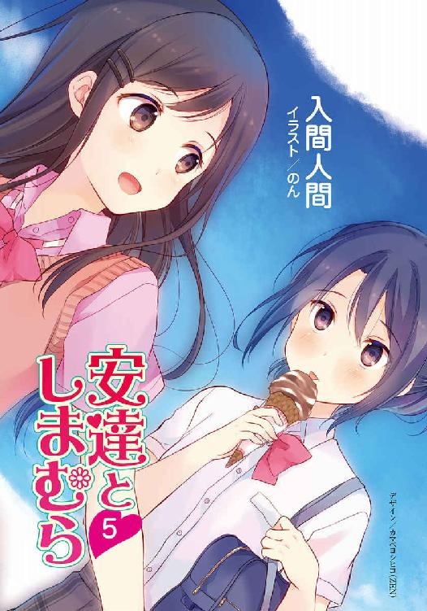
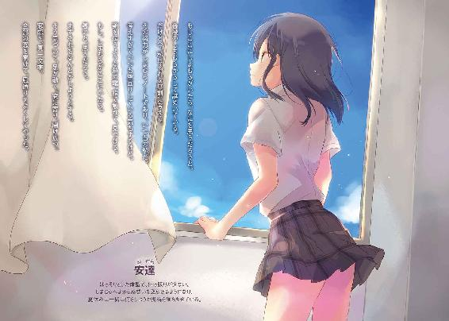
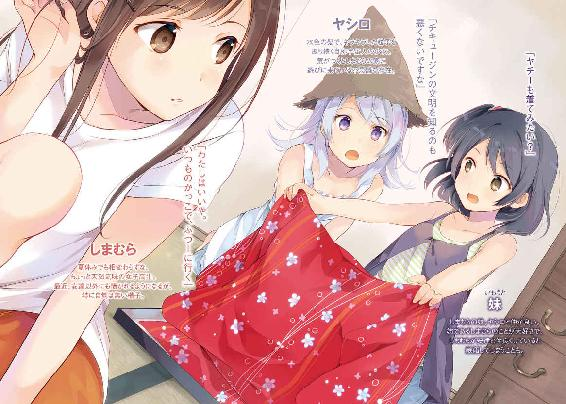
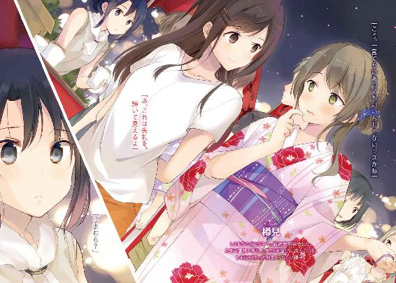
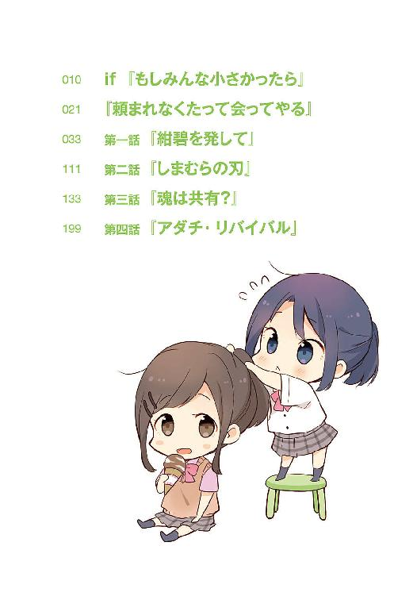
本書（電子版）に掲載されているコンテンツ（ソフトウェア／プログラム／データ／情報を含む）の著作権およびその他の権利は、すべて株式会社ＫＡＤＯＫＡＷＡおよび正当な権利を有する第三者に帰属しています。
法律の定めがある場合または権利者の明示的な承諾がある場合を除き、これらのコンテンツを複製・転載、改変・編集、翻案・翻訳、放送・出版、公衆送信（送信可能化を含む）・再配信、販売・頒布、貸与等に使用することはできません。
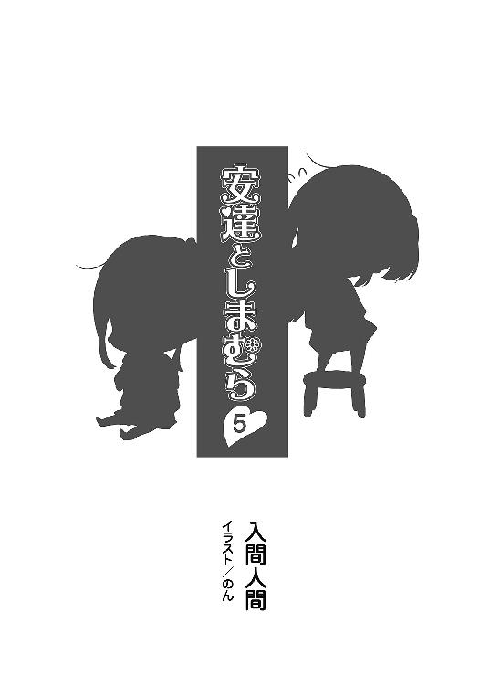
if『もしみんな小さかったら』
色々な子がいるものだった。みんな同じような背丈でもその個性が色あせることはなく、一目で区別がつく。総じて子供はかわいらしいもので、だから庇護したくなって、弱い存在が強くなるまで守られていく。生命って上手くできているものだなぁと、変な感心をしてしまった。
しかし私が子供だった時代より、ずっと個性的になったものだ。
向こうには水色の髪の女の子までいる。一緒に遊んでいる子はいつも帽子をかぶっている。色々だ。いや色々なんて一言で語っていいのかしら、あの髪の色。
「しまちゃん、まってー」
自由時間に廊下と教室を行ったり来たりと忙しない子たちがいる。年長さんの中で一番騒がしい......もとい元気なしまちゃんと、その背中をいつも追いかけているたるちゃんだ。
しまちゃんは両手を前に突き出すようにしながらぺったぺったと走っている。相変わらず変わった走り方だ。でも見ていて不思議に和む。たるちゃんは両手を万歳みたいに上げてしまちゃんにくっついていく。こっちはこっちで変わっていた。でもこちらもかわいい。
どちらも元気いっぱいで見ていて気持ちはいいけど反面、危なっかしい場面も多くて気が休まらない。特にしまちゃんは無鉄砲で、周りのお友達に壁を作らないのはいいけど建物の壁はちゃんと意識してほしい。なぜ手を前に出す走り方でよく額をぶつけているのか。
その二人が教室の真ん中を走り抜ける。そして、それを眺めるのは私だけではない。
他の子をあやしながらそちらに目をやると、やっぱり、一人で大人しく座っていた。
粘土を弄りながら、先頭を走るしまちゃんをジッと目で追っている。
今年の年長さんで一番の問題児は多分、あの桜ちゃんだ。他の子に乱暴するわけでもないし迷惑もかけないのだけど、そういう方向とは異なって手強い。無口で、反応も薄く周囲とのコミュニケーションに難がある。あの子のお母さんとも話したことがあるけれど、家でも大体同じらしい。分かりづらい子です、とお母さんが苦笑していた。そうだろうか、と思ったけれどその場では反論しなかった。
確かに一見するとそうだけど、この教室にいる間の桜ちゃんは案外分かりやすい。桜ちゃんは特別仲良しな子が一人もいないけれど、そんなのお構いなしに話しかけてくるしまちゃんには関心を持っているみたいだった。でも、自分から声をかけようとはしない。
しまちゃんと一緒に遊びたいのに、いつも自分からは言い出せない。側まで来て一人で遊んで、気づいてほしそうにしている。恥ずかしがり屋というより、どう話しかければいいのかが分かっていないみたいだった。特に、しまちゃんの周りに友達がいるときは一層、引っ込む。
そんな桜ちゃんと対照的に、教室の隅で賑やかに遊んでいるのはあきらちゃんとたえちゃん。なんかだっこしていた。
「ぐぬぬ」
「あきらちゃんちからもちー」
担がれているたえちゃんは暢気に笑っているけど、支えるあきらちゃんは顔が真っ赤になっていた。限界がきたのか下ろして、こてっと倒れ込む。たえちゃんがその側に屈む。
「がんばったねー」
「うんがんばった。ごほーびちょーだい」
褒美を求めるあきらちゃんの手を取る。それからたえちゃんがあきらちゃんのおでこにむちゅーっと吸いつく。あきらちゃんにっこにこ。
本当に仲がいい。くっついていないときの方が珍しいくらいだ。あきらちゃんの家は案内されて驚いたけど、どえらい豪邸だった。道の脇に竹藪ですぜ、TaKe。最初は何事かと思った。
それと迎えに来た人を若いお父さんと勘違いして挨拶したら『兄です』と丁寧に訂正されて、これはこれで何事かと思った。
そんな仲良し二人組はさておいて、桜ちゃんがじーっとしまちゃんを見つめている。そのしまちゃんはたるちゃんたちと一緒にブロック遊びに興じていた。ジグソーパズルみたいに組み合わせられるブロックで建物を作ろうとしている。ついさっきまで走り回っていたのに、少し目を離すと別の場所に移っている。親って大変だろうなぁと、心から感じる。
それはいいとしても、桜ちゃんをこのままにしておくのもなんなのでお手伝いに動く。
本当は子供たちの関係に介入するのは望ましくないけれど、見ていて不憫だった。
「しまちゃん、ちょっといい？」
屋根作りに夢中のしまちゃんに声をかける。しまちゃんはブロックを抱えたままやってくる。
「せんせー、きょうはまだなんにもこわしてないよー」
頭の上に手を載せながら、しまちゃんが私の顔色を窺う。
自覚はあったのか。
「うんそれはいいことね。それでね、桜ちゃんも一緒に遊びたいみたいなの」
びくっと、目の端で桜ちゃんが反応したのが見えた。話を聞いていたらしい。
「いいよー」
素直に頷いたしまちゃんがてってってと桜ちゃんのもとへ走っていく。桜ちゃんびっくびく。
意識していないフリをするみたいに俯いていると、
「ほらいこー」
前置きなしに桜ちゃんの手を取って立ち上がらせる。桜ちゃんは握っていた粘土を床に置いて立ち上がり、しまちゃんと私の顔を交互に見る。不安と喜びが混じって眉が上下に動いて忙しい。その桜ちゃんをしまちゃんが引っ張っていく。桜ちゃんは引きずられるままだ。
「はいぶろっく。好きなとこからつくっていいよー」
しまちゃんが持っていたブロックを渡して、建物作りに戻る。そうすると桜ちゃんの顔から喜びは失せて、見る見る内に泣きそうになっていく。回り込んで、離れていったしまちゃんの側に寄ってからその手を引く。
「うん？ なーに？」
「あ、あっちで、あそぼ......」
あっちというのは、さっきまで桜ちゃんが座っていた、他に誰もいない場所だ。しまちゃんは「えー」と持っているブロックを見せながら拒否する。
「なんで？ こっちでいいじゃん」
「あ、あっち......」
しまちゃんの手を引っ張る。「おっととと」としまちゃんが引きずられそうになるが留まる。
「みんなであそぼうよー」
「そうだよー、しまちゃんひとりじめするなよー」
しまちゃんとたるちゃんの反対に遭って、桜ちゃんの肩がひくひくしている。あ、まずい。
「し、しまちゃんはわたしとあそぶの、あそぶ......」
桜ちゃんがぐずぐずと泣き出してしまう。あらあら、とまた間に入ろうかどうしようと迷う。
少し失敗してしまったみたいだった。
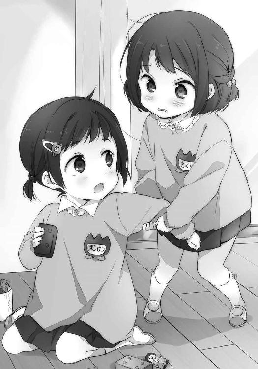
みんなと遊びたいのではなく、一人と遊びたい。それが桜ちゃんの性格なのである。
どちらが間違っているとも言いづらいけれど、不器用な子だなぁとは思った。
なんというか......小学校に通うようになって、友達作れるかしら。
「お友達は大切にしないといけませんよ」
ギョッとする。いきなり、隣に女の子が増えていた。しかも水色。
向こうで遊んでいる子とはまた別に髪が水色だった。光がふわぁっとしているのは共通で、違うのは髪型だ。長い髪の毛を後ろでチョウチョみたいに結んでいる。余った髪はだばーっと垂れて幻想的な滝のようだった。その非現実さの割に手にはおにぎりを持っている。
三角形の中心から、こんぶがはみ出ていた。
「みなさんそう言っているので、チキューでは多分そうなのでしょう」
紐を斜めがけした水筒が揺れる。外は雨なのにピクニックの格好だった。
「お、おぉー。なんだきみはー」
しまちゃんも突如現れた女の子に驚いている。そして対抗するように背伸びした。
「くっくっく、今のしまむらさんではわたしに敵いませんぞ」
やー、としまちゃんの手を取ってぐるんぐるん回る。二人でくるんくるんする。
なんだこれ。
予想よりずっと長い時間ぐるぐるして、女の子の足がもつれたことでようやく終わる。
「およよよ」と解放されたしまちゃんが目を回してよろよろしている。
「どーです」
とか言いながら女の子の方も足が躍っていた。なんなのかしら、この子。
「なにをするー」
「ふふふ、加減せずにいきなりこんなことをすればこうなるのは必定」
得意げな表情と共によたよた。
「わたしのように鍛えていれば話は別ですが」
しゃきーん、とふらついていた女の子が背筋を伸ばす。足もかなり無理して止めているのが、後ろから見てその引きつり具合から分かる。そうして、少し穏やかな調子を持って語る。
「慣れないうちから大きなことはできないのです」
そう言って女の子が桜ちゃんを見る。桜ちゃんは知らない子に見つめられてすぐに俯いてしまう。そうした桜ちゃんを、女の子は「わはははは」となんでか快活に笑う。
桜ちゃんと女の子を交互に眺める。しまちゃんも私と似たように頭を動かす。
......なるほど。
やり方の選択はまったく謎だけど、女の子がなにを言いたいのかがそこで分かる。
しまちゃんにはどうだろう、伝わるだろうか。
しまちゃんが女の子を見上げる。その水色の髪と瞳の輝きを吸い込むように、しまちゃんの無垢な目もまた同じ色に染まる。
そして。
「わからんけど、わかった」
しまちゃんが頷く。
「きょうはさくらちゃんとあそびまする」
なぜか微妙に武士言葉だった。いつも帽子をかぶっている子の影響だろうか。
あの子は誰の真似なのか、変な言葉遣いが時々交じる。
だけどそういう判断ができるあたり、女の子の伝えたいことはちゃんと理解したみたいだ。
しまちゃんが振り向くと、桜ちゃんが涙の粒を溜めながらも明朗な表情となる。
口の端が上がり、目の輪郭も大きく開く。
「でも、おめめぐるぐるしなくなったらみんなともあそぼうね」
しまちゃんの言葉に、桜ちゃんは曖昧に顎を引く。そしてその手をまた引っ張って、粘土の転がっている方へ移動していく。いつも誰かを引っ張って進んでいるしまちゃんが、引っ込みがちな桜ちゃんに引っ張られていくというのも、なかなか面白い構図だった。でもそれが面白くないのはたるちゃんで、しまちゃんを取られたことに「なんだよもー」と不満そうだった。うーん......万事仲良くは難しい。
先生が代わりに入っても歓迎されるかな、微妙かなと頭を搔いているといつの間にか隣にさっきの女の子が来ていた。胸を張って、くっくっくと笑っている。
「番外編ではわたしがまとめ役ですぞ」
変なことを言っている子は他の子より背が高い。こんな子いたかな、いや受け持っていない。
「きみはどこの子？」
なんかおにぎりを美味しそうに食べているけど、お昼ご飯の時間は終わったでしょ。
「しかしこれはもしこの段階で出会っていたらこうなったという話であって、本来の過去ではないのであった、まるまる」
「あのー？」
「飲まれますか」
水筒の中身を注いで差し出してくる。「えぇ、はぁ、どうも」と受け取って少し口をつけてみた。原液かと思うほど甘い乳酸菌飲料だった。それを喉に引っかかる様子もなく、女の子は美味しそうに飲み干す。
「とはいえしょーさんがいないのは残念ですな」
そんなことを言いながらてこてこ出ていった。話を聞かない子だった。
なんともかわいらしい不審者である。......見逃していいものだろうか。
「さくらちゃんはなにつくりたいの？」
二人で粘土をこねながらしまちゃんが聞く。
「な、なんにしよ、っかなぁ」
桜ちゃんがそれに応えて、ほんの少しばかり声を跳ねさせる。
しまちゃんの優しさみたいなものを受け取る感受性が確かにそこにはあり、そして。
ぎこちなくも、頰を緩める。
それを見届けて、うん、と胸に留まる不安が胃の底へと滑り落ちる。
問題の多い子だ、これからもきっと苦労していく子だ、けれど。
それを知っているなら、どちらに進めばいいのかは分かっているから大丈夫。
笑顔を知っているなら、ダイジョーブ。
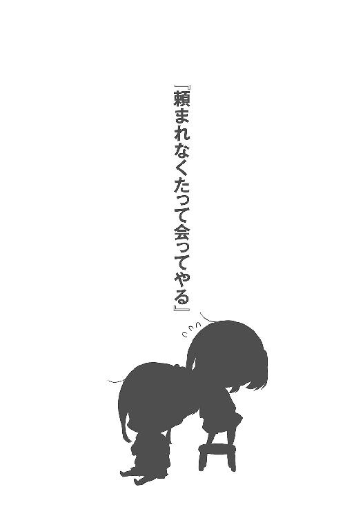
夏休みに不安めいたものを感じるのは初めてだった。長期の休暇は平日に存在するルールというものから離れて、それは水中に身を投げたときのような一時の解放感を味わえるものだけど、今年はその投げ出される感覚に心中がざわつく。拠り所を求めるように手足が暴れていた。
一学期最後の日、終業式。教室で、しまむらを見る。見る。小さく欠伸をした。それから粒のような涙を拭う際に目が合ったのですぐ逸らす。やましいところは多分ないのに、いつもつい俯いてしまうのはなんでだろう。見ているって気づかれるのが恥ずかしい？ いやそれならもう手遅れだし、じゃあ逃げないでずっと見つめていればいいんじゃないの。いや、でも、と首が上がったり下がったり、行ったり来たり。でも恥ずかしい、なにか猛烈に恥ずかしい。
葛藤する。嫌な汗が手のひらと首筋に滲む。
もしかすると、教室で一番忙しくしているかもしれなかった。
単なる焦りすぎとも言う。
担任の挨拶の間に鞄を整頓して、終わるとすぐにしまむらの机へ向かう。それを予想していたみたいで、しまむらもすぐにこっちを向いた。ぎこちなくも手をあげて挨拶しようとすると。
「安達って、目が合うとすぐ顔を逸らすよね」
鼻の先に先制攻撃を貰う。あうあう、と唇が空振りするみたいに動いている間に、更に。
「小動物が巣に逃げ込むみたい」
笑いながら、しまむらがそんなことを言う。そう言われても、恥ずかしがればいいのかなんなのか、感情の正体が摑めない。笑っているならそんなに悪いことでもないのかなと思ったけれど笑われているなら大いに反省するべきだ。どうするどうする、と悩んでいる間にしまむらが鞄を持って立ち上がった。一緒に帰ろうと言うのを省いて、その隣に並ぶ。
「おーおー」
しまむらが私を見上げながら妙な声をあげる。
「ど、どうしたの？」
「ヘアピン、今日もしているなーって」
指摘されて、つい髪に載るそれに触れる。しまむらに貰った花柄のそれを、柔く撫でる。
「気に入った？」
そう尋ねられて、頭を何度も縦に振った。しまむらが、それを見て笑う。
そのしまむらの髪にも添えられる花飾りに、胸を熱くしながらてくてく歩く。階段の近くまで来て、このままだとなんにも話さず別れそうだと危機感を覚える。少し冷えて、汗が噴き出る。
「あ、その。夏休みだね」
「うん、そだね」
てくてく歩く。他に話題がなにか......蟬がうるさい。いや、絶対続かない。
「夏休みのしまむらは、ご予定は」
聞き方が変になってしまった。しまむらが背中を少し丸める。
「ご予定は特にありませんよ」
私の口調に合わせてきて、恥じ入り、あ、でもそれならと顔を上げる。
「それじゃあメール、とかしていい？」
「いいよ。ていうかいつもしてるし」
「そうなんだけど、結構、いっぱいになるかもしれないけど、えぇと」
「いいよいいよ」
いっぱいいっぱいになりつつある私と違って、しまむらは軽い。
ここまで言ったなら他にも、と欲張りが頭をもたげる。
「あと暇なら、たまには、遊びに行っても」
「どんとこい」
しまむらが軽く、私の胸を叩く。安堵しながらも軽く......軽く、よろめく。
それぐらい、今の私は軽い。すかすかだ。
いや別にしまむらに触られたから動揺しているわけじゃなくて。
じゃなくて。
感じる不安は、しまむらにあった。
しまむらとの間に学校という接点がなくなる夏休みは、なにもしなければがら空きになる。
蟬だって、生きた証を繫ぐために懸命に鳴いている。
少し見倣わないといけない。
階段を降りて、下駄箱で靴を握りしめながら、名前を呼ぶ。
「しまむら」
「ん？」
しまむらが振り向く。少し汗ばんだ首筋と、崩した襟元。
下駄箱の薄暗さと、出入り口から入り込む光が混じり合い、そこに夏の入り口を見る。
引き寄せられて、今にも意識が飛びそうになりながら。
「夏休みの間に、こう、しまむらともっと仲良くなれたらいいなって思うのうんなの」
後半は額の内側が過熱すると同時に早口になって、最後は舌が満足に回らなかった。
うんなのって、なに一人で納得しているのか。
「もっと仲良く、ねぇ」
しまむらがピンとこない、というように芳しくない反応を見せる。私にはそう見える。
でもここで具体的なことを延々と説明しだしたら、しまむらはどんな顔をするのか。
たとえば、一緒にプールに行こうとか。
町を適当に歩いて、カフェでお茶飲みたいとか。
気味悪がるか、引いてしまうか。受け入れてくれるなんて甘い想像は浮かばない。
しまむらの前に立つと、胸が波打つ。それは自分の心を強く前進させていく推進力になると同時に、その心が底から揺らされるということでもある。いつ、差し出した手を払われるかと怯える後ろ向きなものがあった。
でも。
しまむらは、私に向けて微笑む。
「あ......」
「なんだか分からないけど、楽しみにしておく」
その笑顔から、今年の夏が始まる。
不安定で、いつも走り出したくなるような、そんな夏が。
夏休みはいいものだ。なにがいいって朝、無理して起きなくていい。
「いいのに」
台所のテーブルに突っ伏して伸びながらぼやく。時計は朝の七時を指していた。
昨日は安達の長電話に付き合っていたので、これがまた、瞼が重い。
「食器洗うの面倒だからこれでいいんだよ。眠かったら食べてから寝な」
起こした張本人こと母親がシリアル食品をがさっと用意して差し出してくる。その後、牛乳が注がれると渇いた喉の訴えに負けて身体を起こした。
「朝のねーちゃんはほんと情けないやつだ」
妹が偉そうに批判してくる。こいつは朝から元気だ。六時には起きてラジオ体操も行ってきたという。まだ近くの駐車場でやっているんだなぁ、あの体操。
そういえば、妹がおねえちゃんと呼ばなくなったのはいつからだろう。
「このここなっつ味というのがたまりませんな」
うまうま、とその隣で舌鼓を打っているやつが髪からふんわりと光の粒を漂わせる。
ヤシロだ。妹がラジオ体操の会場で見つけてきたらしい。拾ってくるんじゃありません。
当たり前のようにシリアル食べているし。
「んー......」
幸せそうに食べているなぁ、とヤシロの柔らかそうな頰を見つめる。
どこか、目を離せないものがあった。
ヤシロに対する感慨は他人と呼べるものともまた異なる距離にある。その振る舞いが、幼かった自分によく似ていることに気づいているからだ。手を前に出す走り方はそっくりだった。
それを全肯定することはできなくても、微妙に、見守ってしまう気持ちがあった。
母親がなにも言わないのも、妹が懐くのも、わたしの面影を見ているからかもしれない。
そういうことまで考えると、もやもやと陰るものがあるのだった。
そんなこんながありながらも朝ご飯を食べて、歯も磨いて顔も洗った。ちびっ子たちが元気に宿題も忘れて出かけていくのを見送って、さて寝るかと片づけていない布団に潜り込む。妹はタオルケットだけど、わたしは夏でも掛け布団だ。暑くないのと聞かれれば大変に暑い。でも少し厚みのある布団の方が、かぶっていて安心を感じる。布団に母性でも覚えているのだろうか。
その布団に潜り込んで寝転んだ途端、電話が鳴る。見計らったように安らぎの繊維がぶつ切りにされて、頭が一気に重くなる。うぇぇと呻きつつも聞いていて無視するのも後味が悪いので、のっそりと這い出て机の上の電話を取る。取るとき、机の角に腕をぶつけた。
「......あ、予想と違った」
安達かと思ったら、樽見だった。最後に会ったのは二週間ぐらい前だっただろうか。
なんだかんだと樽見に誘われて、ちょくちょくと会っている。
その度に新しいことに気づいたり、変わっていないなってことに気づいたり。
そういう刺激も、悪くないものだった。
電話に出る。すぐに樽見の声が聞こえてきた。
『おすしまちゃん』
「おす」
挨拶と名前が繫がって別人ができあがっているかのようである。
『夏休みだよね』
「うんそう。まーどこも一緒だよね」
そういう樽見だって夏休みだろう。部活とか入っているのかな、聞いた覚えがない。
......いや、聞いたかな？ まだお互いの間に埋めきれないぎこちなさのあったときに、そんな話をしたかもしれない。それなら、頭に残っていなくて当然かもしれなかった。
などと、自分の物忘れを正当化してみる。永藤みたいだ。
『元気？』
「まぁまぁ」
今から二度寝しようとしていましたとは言えず、あははと乾いた笑い声で応える。
『あーっとー......期末試験とかどうだった？』
「あははは」
もうー、たるちゃんったらー。
蟬が近くで鳴き出して、顔を上げる。外は光の溜まった桶でもひっくり返したように眩い。
周りは朝から元気なやつばかりだ。むしろわたしがないだけなのか。でも元気出したところでやることあるかなぁと考えてみると、景色も曇るというものだ。
『あのさ。しまちゃん、よかったらでいいんだよ。すげー、よかったらで』
「うん？ うん、なに」
そんな前置きされると少し畏まってしまう。なにかすごいものを押しつけられそうで。
それが善意の塊だろうと、悪意に満ちていようと、どこか重そうだから。
唾を飲む気配を交えて、樽見が言う。
『来週の花火大会、一緒に行かない？』
そのお誘いから、今年の夏が始まる。
紺碧を見上げてその向こうに思いを馳せる、そんな夏が。
『今日の安達さん』
かきかきかきかきかき。ちょっと消す。
かきかきかきかきかきかき。
かきかき、消す。かきかきかきかきかき。
かきかきかきかきかきかき。
できた。というより、これ以上書けない。
二晩の成果を掲げて、その出来映えを確かめる。
『しまむらの家にまた泊まる』
『しまむらとどこかへ買い物に行く』
『しまむらの手を握る。あと、すごく盛り上がる』
『しまむらとプールに行く。海は難しい？ 遠い？』
『しまむら』
夏休みに、やりたいことリストだ。主に、というかしまむらと○○するの形しかない。
書き連ねているときは頭を悩ませて感じなかったけど、いざ改めて全体を見渡すとしまむらという名前に目が反応して、忙しない。そして気恥ずかしい。何回、名前を書いているのだ。
余白はもう○○するという部分が書けないので、しまむらとだけ埋めてある。
意味が分からない。寝不足の招いた謎の行動に首を傾げるほかなかった。
それでも行動として間違ってはいないと思う。夏休み、しまむら。その二つが頭の中を大きく占めているのは分かる、でもしっかりと線が繫がっているわけじゃない。意識していかないと、夏の熱に頭がぼやけるように、漫然としたまま終わっていく気がしてならない。
そうなると夏の終わりに残るのは後悔ばかりだ。
無為に埋まる今までの夏の日よりもずっと酷いなんて、そんなのは嫌だ。
せっかく、しまむらに会えて。また、夏が来たのだから。
そのために、文字に起こして整理整頓を図った。作るのに二日もかかったけど。
どこかへ出かけて楽しく過ごす。大体、これが基本になっているみたいだ。少し考えれば、夏休みに他にできることもない。そして二人きりで出かけるのは仲良しの証だろう、きっと。
「......証かぁ」
そんなものが本当にあればいいのに。手に入ったら見せびらかして町を歩くと思う。
目に見えないものを示すもの。......温度計みたいなものなんだろうか。
時計を確認する。バイトの時間が近くなっていたので、リストを丁寧に机に置いてから服を着替える。着替えながら、朝ご飯を食べ忘れていることを思い出して、まぁいいかと流す。
正直、アルバイトを続ける理由は薄い。なにもしないよりはマシだろう、貯めておけばいざ必要となったときに困らないだろう。
それぐらいの動機で始めて結構なお金が貯まったけれど、未だ使い道は見つからない。
しまむらと遊びに行くお金には困らないけど、そもそも、そんな機会が多くない。
それでもあの店で働くのを辞めないのは、しまむら一家がまた来るかもしれないと考えて、それを期待する部分があるからだ。気恥ずかしさもあるけれど、こう、チャイナドレスの自分をしまむらが褒めてくれたから、見せるのは悪いことでもないかなと思ってしまうのだ。しまむらが私のみ、魅力？ 魅力ってなに？ みたいなものを感じ取ってくれないかと一抹の願望を抱く。贅沢を言うなら私から一方的に近寄るのではなく、しまむらからも一歩ずつ歩み寄ってほしい。
仲良くなるって、そういうことじゃないかと思うのだ。
誰も教えてくれなかったし学ぼうともしてこなかったことを、今になって勉強している。
出遅れを解消できるのは、いつの日になるのか。
「.............................................」
あんまりしまむらしまむら書いていたせいか。
しまむらの声が聞きたくなる。
バイトが終わったら、電話してみよう。
話すことはなくても、声が聞きたかったということを、伝えたい。
しどろもどろにならないで伝えられるか、自信ないけど。
早くも急いて、待ち遠しくなっている自分を感じ取って失敗を悟る。
アルバイトが終わってから思いつけばよかった。
自転車と家の鍵を持って、外への扉を開く。
冷房のない外に出て、今日も猛暑であることを思い出す。
蟬に出迎えられて、熱気に肩を抱かれる。
まさしく、夏への扉を開く心境であった。
蟬が頭の隅で鳴いているようだった。それは、強く差し込む日差しの声のようでもある。
空と建物がくっきりとしている。鮮やかではないけれど、色合いが濃い。
暑いのは苦手だけど、そうした夏の景色は好きだった。
「ねーちゃん、なにしてんの？」
窓際でぼぅっとしているわたしを、通りかかった妹が訝しむ。
「......んー、別に」
去年の夏を思い出していた。蟬を埋めたときの、土の熱さが手のひらに蘇る。
安達と会ってからもう一年が経とうとしている。そんなに時間が経っただろうかと、実感が今ひとつ湧かない。気づけば高校二年生、あと一年と半分で卒業だ。
大学、は多分行かないだろうし。未来のわたしは一体、どこでなにをしているのやら。
きっと、今よりずっと面倒くさいことになっているんだろうなぁ。
想像するだけで溜息が漏れる。
「あ、しまむらさんとしょーさんがいました」
妹の後を追いかけるように、ヤシロも部屋に入ってくる。この不思議娘は家の廊下ですれ違うことも多くなって、すっかり居着いていた。普通にご飯を食べてお風呂に入っていくのである。でも一応は帰る。まだという言葉が頭にくっついていそうだけど、夜になるとどこかへ帰る。そして朝方を迎えると、知らない間に家の中で寝転がっているのであった。
「あ、そうだ。ねーちゃんねーちゃん、お祭りあるってさ」
妹が握っていた広告の束を差し出してくる。新聞か、回覧板に挟まっていたやつだろう。受け取って確認すると、花火大会の広告だった。樽見と行く約束をしているやつだ。商店街の人たちも出店するので、そこから離れているとはいえ宣伝のために一軒一軒家にも配ることになっている。受け取って、週末の夜を示す日付に目をやる。
「なんですか、これは」
ヤシロが妹の隣から広告を覗き込む。それからすぐ、首を傾げる。
「はなび大会？ はなび？」
花火を知らないのか。いやむしろ、ヤシロは知っていることの方が少ない。
常識的なことまで把握できていないとなると異国の子かとも思うけど、その割に日本語は達者だ。ちぐはぐというか、あり得ない知識の偏りだった。横向きに地球を歩いている限りでは到底歩めない道のりでここまで来ている感じ。ヤシロには、縦の広がりがあった。
そのヤシロが「むむむ」と考え込む仕草を見せた後、自分の鼻を摘んで伸ばす。
「それは鼻伸びー」
「おぉ、違いましたか」
妹の指摘を受けてすぐ離す。
「花火っていうのは、どかーんって火花が散って綺麗なんだよ」
「ほぅほぅほぅ」
ヤシロは分かってなさそうに、何度も適当に頷く。分かるのは、そうやって説明する妹の嬉々とした態度から、なにを望んでいるかだった。
「行きたいの？」
「ねーちゃんと行ってあげてもいいよ」
どうしてうちの妹ちゃんはこんなに偉そうなのだろう。わたし限定で。
「いやぁ実は友達と行く約束しちゃったんだよね」
「えーっ」
妹の声が裏返る。足が伸びて、つま先立ちのようになる。
「ともだち......えーっ」
間を置いてもう一回、不満を表す。そんな驚かれても、ねーちゃんにも都合があるのだ。
気持ちは分かるけど。
わたしと行かないなら妹が祭りに行くのは無理だから。
妹だけで夜に出かけるのは両親が認めないだろう。
そして両親は面倒くさがりで、人混みなど大嫌いという人たちだ。
「わたしがついていってもいいですよ」
ヤシロが助け船、を本人は出しているように腰を当てる。伸ばしていた鼻がまたちょっと高くなる。お気持ちはありがたいけど、なんの解決にもなっていない。むしろ不安が増す。
ぷっと膨れている妹を見下ろして、頭を搔く。
一度拗ねてしまうと、後でご機嫌取りが面倒だ。
「あーじゃあ、ちょっと待ってて」
嫌がるかな。嫌がりそうだ。でも一応、聞いてみよう。
電話を取る。履歴から最新にかかってきた相手に、ぺ、ぽ、ぱと。
二秒ぐらい待って、電話が繫がる。
『しまちゃん？ どしたどしたどした』
走ってきてそのまま電話に出ているのが伝わる、そんな前のめりの対応だった。
「慌てるほどのことでもないけど、とりあえずこんにちは」
『ちわっす。まさか、あれか。都合悪くなったとか？』
まったく落ち着かないたるちゃんであった。でも安達よりは冷静かな。
樽見は足音激しいながらも前へ進むイメージで、安達は足踏みしてしまう。
「そういうのじゃないけど、あぁでも花火の話ではあるんだけどね。妹、とその他も連れて行っていい？」
返事はすぐに訪れなかった。やっぱり反対するよねぇ、と苦笑いを浮かべる。
友達とはいえ、その妹と一緒に祭りを巡るというのはなにか違うだろう。
先に約束したわけだし、妹に諦めてもらうしかないなと振り向こうとすると。
『その他、ってなに？』
樽見がやや硬い声で質問してくる。
そこが一番気になるのだろうか。目の付け所が変わっている。
「んー、説明しづらいけど......妹の友達？ みたいな」
先に会ったのはわたしなんだけど。なんとも微妙な間柄なのである。
『妹かぁ。そういえばしまちゃん、妹いたね』
「うん。最後会ったときはまだほんと小さかったし、覚えてる？」
『いたのはね。向こうも私のことは分かんないだろーな』
そりゃあね、と頷く。あの頃の妹は、樽見が家に遊びに来ると隠れて部屋から出てこなかった。......あれ、今とあまり変わっていないかも。まー、そこが微笑ましくもあるけど。
「でー、いいかな？ 嫌ならいいんだけどね、うん」
夜祭りは他にもあるから、また別の日に連れて行けばいいだろう。花火は、上がらないかもしれないけど。最近は打ち上げる花火の数も減って、昔ほど夜にその音を聞く機会がない。
とはいえこの時期は、一週間に一度くらいの頻度で打ち上がっているのだった。
『......いいよ、いいよ。いいじゃん、うん』
意見を吞み込むようにして、樽見が受け入れてくれる。
正直、意外だった。
「ありがとうね」
ごめんねと言うか、少し迷った。でも謝ることでもないように思えて、取り除く。
『いやーいいよ。私って別に、えぇとほらなんだよあれだよ、しまちゃんと楽しくやりたいだけだからさ！』
「そう？」
そこまで無理して前向きにならなくてもいいんじゃないかな。
『あーうん、うん......うん、いや大丈夫。しまちゃんの妹だからな』
わたしの妹だからなんなのだろう、と気になりつつももう一度、「ありがとうね」と礼を述べてから電話を切ろうとする。その気配を察してか『あーしまちゃんしまちゃん』と早口で聞こえてきて、電話を耳元に戻す。その二回続く呼び方が、昔の樽見を思い起こさせる。
『楽しみにしているから、忘れないでくれよ！』
鋭い一言を残して、樽見から電話を切った。安達と違って、このあたりの思い切りがいい。
しかし今のは、期待を表しているのか注意なのか判別しづらい。
わたしがうっかりして約束をすっぽかすとでも危惧しているのか。
まだ夏休みも始まったばかりで、そこまで頭のネジが緩んでいないぞ、と反抗しながら振り向く。
鼻を摘んで遊んでいるヤシロはほっといて、妹に言う。
「というわけで、一緒に行ってもいいそうです」
「おー」
膨れていた妹の頰がへっこんで、空気を吐き出すように声が漏れる。
「でもあんたこそ、わたしの友達と一緒だけどいいの？」
家族以外には、親戚に対しても余所余所しいぐらいの妹ちゃんである。
妹が小さく頷いた。そろそろ人見知りも少しずつ克服していってほしいものだ。
さもないと......んー。安達は、人見知りともまた少し違うか。
「ともだちって、この間泊まった人？」
妹が尋ねてくる。この間といっても結構前のことだけど、安達かどうか聞いているみたいだ。
「また違う友達」
「ふーん......」
妹が乾いた反応を見せる。なにその態度。
「しまむらさんの友達なら、わたしともおともだちですね」
「.............................................」
一方、こっちは暢気にニコニコしている。
「おともだちロボ、がががーっ」
「なにそれ......」
よく分からない盛り上がりを見せるヤシロに呆れつつ、目が泳ぐ。
遠い、過去を沈めていく海を。
昔々の自分が言い放ったことをそっくりそのまま再現されると、据わりが悪いものだった。
似ているからそういうことを言えるのか。
そんなことが言えるから、似ていると感じるのか。
重なる面影の始まりを、大海原にそっと探す。
花火大会かぁ、と就業中もその言葉が頭から離れない。
と言っても私は花火に彩られた夜空の下を巡る側ではなく、そうしたお客様を出迎える側なのだけど。
バイト先である、想作中華料理という前例なき看板を掲げるこの店も屋台を出すらしく、『手伝ってね』と駆り出されることになってしまった。断りたかったけど、そうすると途端に日本語が通じない人のフリを始めるのでタチが悪い。結局、押し切られた上に流されてしまう。
給金出るのかな、屋台の手伝いで。
でも花火大会、夏祭りというものは盲点だった。
夏休みというと、私の中ではプールや海が真っ先に思い浮かんで祭りは眼中になかった。多分、プールに行ったことはあるけれど、夏祭りに出かけた記憶がないからだ。両親に連れられて祭りに行くような、そんな関係を構築できていない。それはこの際深く考えないとして、しまむらと花火大会に出かけるというのはどうだろうと、思うわけだ。
いいじゃないか、とただでさえ眩しい夏の景色が光の洪水に見舞われる。熱と日差しの波にたゆたうような、朧気な夏の道路をガラス越しに眺めて美しささえ覚えた。普段は気にも留めない世界の在り方を、広い視野で受け止めて評価できる。前向きな気持ち一つだけで、随分と寛容になれるものだった。
「ということで、ちゃんと来てネ」
「......分かりました」
仕事の終わり際、ペンギンみたいな歩き方をする店長に念を押される。
これさえなかったら、その花火大会にしまむらを誘うことができたのに。
でも仕事が入らなかったらその存在を意識することもできなかったわけで、ままならない。上手くできているような、もどかしく感じるような。出来事のいいところだけを抽出して繫ぎ合わせて、そうして生きていけたらと贅沢なことを時折、夢見てしまう。
「そういえば、なにを売るんですか？」
「から揚げ」
「あぁ、はい......」
店でいつも出している、棍棒みたいに細長いから揚げだ。どのへんが想作かは知らない。
着替えてから、冷房の効いている更衣室を出る前に電話を弄る。
しまむらに、電話する。
いつもは電話していいかと確認のメールを送るけれど、今回はそれを省いてみた。
繫がるのを待つ間、若干の緊張に指先が痺れる。ちょっとした冒険の気分だった。
ややあって、高揚は目的地に辿り着く。
『はいはいもしもし』
「あ......」
しまむら。しまむらの声だ、と肩が上擦る。
乾いた身体の一部が、じくじくと潤うようだった。
痛みと鼓動が同時に息を吹き返し、良し悪し問わず活性化していくのが如実に伝わる。
『あ、こら』
「え、なに、なに？」
挨拶も省いて注意されてしまう。目を白黒させていると、しまむらが説明してくれた。
『あぁ、ちびっ子が悪戯を......頭に上ろうとするなっ』
向こうが混線している。ちびっ子？ 妹じゃないとしたらあの、変な髪の子だろうか。
しまむらの頭に......頭にしがみついている？ 背中に、抱きついている？
相手が誰であっても、愉快な気持ちにはなれない。いやもっとはっきり言うと。
『大人しくしているの、いい？』
「はい......」
思わず首を引っ込めて返事してしまう。
『いや安達じゃないから。安達でもいいけど』
「えっ」
『冗談。で、なぁに？』
しまむらのその声が、一際、優しく耳に響いた。
わくわくするような、それでいて、目が回るような。
落ち着き払ってしまむらと接していた昔の私は、どこへ行ったのだろう。
「えぇと......元気かなって」
花火大会行こうよ、とすぐに切り出すことができずに逃げる。
『ん、ふつー。普通に元気。暑くてうだーっとはしているけど』
びたんびたん、と床をなにかが跳ねる音がした。元気ですぞ、と訴えている声も微かに届く。
『分かった分かった。安達は？』
「げ、元気。ですぞー......」
聞こえた声を真似しようとして、勢いが不足する。しまむらの、息を吸い込むような小さい笑う声が頰を熱くした。
『宿題ちゃんとやってる？』
「え、そんなの......あった？」
『ないよ』
あははは、と少し笑う。小学生と同じ扱いをされていることには、後で気づいた。
「今、バイト終わったとこ」
『あ、そうなんだ。夏休みでも働くなんて、安達ってまじめだよね』
元不良とは思えぬ、としまむらが冗談めかす。私、不良だったのだろうか。
「それで......それで？ それでってほどじゃないけど」
『うん。それでじゃないけど？』
我ながら、話の繫げ方が下手にもほどがある。接着剤というものが欠けている。
いや違う。むしろ接着剤で強引にくっつけすぎているのだ。
そのくっつけ方がまた不器用で、見栄えが悪い。
分かってはいる。いるけど、言い出したならもうそのまま進むしかない。
「今度、その内......で、いいんだけど」
『うん』
「祭りに、あの、一緒に行きませんか」
前振りと本当に関係ないな、と自分の中に残る微かな客観性がぼやく。
しまむらが返事に戸惑ったように、少しの間を置いて。
『祭りっていうとー、もしかしてー、今度の花火大会とか？』
「あ、うん。あぁううんいいのそんなに急な話じゃなくてもっと、うん、先で」
どうせ行けないし。正確にはしまむらと一緒に回れないし。
「夏休みはまだあるし、えぇと、どっちも大丈夫な日にしよう、かな、って」
まだ行くとも行かないとも言っていないのに先走る。気づけば椅子から浮いて中腰になっていた。しまむらの返事を待っている間、自分の息づかいが耳に障る。荒く、ざらりとしていた。
『......うん。じゃあまた今度、どっかのときに行こうか』
色よい返事を貰えて、思わず口を大きく開いて歓喜してしまう。
じわぁっと、胸の下。身体の真ん中に染みいるものがあった。
「うん、うん。あ、花火なくても、祭りだけでもよくて」
『うんうん、大体そういうのは分かる』
「え？ あ、そ、そう？ そうかな？」
しまむらが私のことを分かっているなんて。分かられたら困るというか、恥ずかしいというか。そして、嬉しいというか。理解するのもいいけれど、されるのもまた格別なものがある。
それから少し話した後、しまむらが夕飯の時間とのことなので名残惜しくも電話を切る。遠くまで走りきったような疲労と、達成感が肩を重くした。座り直して、俯き、電話を握りしめる。
肩と頰の具合から、自分が、笑っているのが分かる。
酷い顔じゃないといいけど、と心配しながらもそのまま感情を放し飼いとする。
最近の私の毎日は、しまむらを目指している。しまむらの肩に、そっと止まれるよう飛び続ける鳥のように。ぐるぐる、一日を回っては機会を探し求めている。そうしてようやく見つけたしまむらの肩に止まった後、そこへまた戻ってこられるようにと飛んでいく。
しまむらを目指し、しまむらに終わり、しまむらから始まる。
生きる支えなんていうと大げさだけど、指針になっているのは間違いない。
それを、改めて感じ取った笑みなのだと、理解した。
『しまちゃんを描かせてほしい』
樽見からいきなり電話がかかってきたと思えば、出し抜けにそんなことを言ってくる。
そもそも、電話をかけてくること自体が不意打ちだった。
なんとなくだけど、三日後の花火大会の待ち合わせまで声を聞くことはないし、連絡を取ってくることもない気がしていた。そうした思い込みが崩されて、少し戸惑う。
そうした心境の事情はさておいて、いきなりなにを言い出すのか。
わたしを、かきたい？
「はぁ......どうぞどうぞ」
『いやいやいや、来てくれないと描けないじゃん』
会おうよ、会ってくれよと軽快を装って続く。一緒にお出かけしようの亜流みたいなものか。
「描くって......どの描く？ 絵を描くの描くか、」
『その描く』
「......わたしを？」
『その通り』
「今から？」
『そうです』
窓の外をちらり。快晴だった。光の津波が目を襲い、左目を瞑る。
この日の下でお絵かきとは、樽見もなかなかどうして挑戦的だ。
「......はぁ」
ということで、来た。指定されたのは長良川、金華橋の下だった。橋を通るときに釣り人の様子を見下ろすことはあっても、自身が河原に下りて砂利を踏むなんて何年ぶりだろう。日に満ちた砂利は黄ばんだように色を変えて、ころころと乾いた感触を靴の裏にもたらす。
歩く度、膝の裏側まで焼けていきそうだった。
けれど普段より低い場所にいるという感覚と合致するように、気温の低下を肌で感じる。水辺にいるからか、風の生温さが希薄だった。ぼぉぼぉと砂利を撫でて音を奏でながら吹く風に身を包まれると、頭の中でぐるぐると回って、耳鳴りと陶酔が同時にわたしの中を巡るようだった。
夏の中に身を置いている。
晒された感覚が日焼けしていく。
歩きながら、遠くを見る。この河原からは金華山と岐阜城が一望できる。山にかかるロープウェーに乗ったのは、何歳が最後だったか。妹も大きくなって、行楽からは足が遠退いていた。
樽見は既に到着して、砂利の上にキャンバスを用意していた。あら本格的、とその三本脚に感心する。もっとラフな依頼かと思ったのに、参ったなとかぶってきた帽子のツバを摘む。
モデルにするのなら、もう少し身なりを整える時間が欲しかった。髪も手を入れなくて帽子をかぶってごまかしているし、化粧は......ムダかなと、日差しの強さから判断する。来るまでに汗で全部流れ落ちてしまいそうだ。それでも確認とかはしたい。目やにが、ないかなぁとか。
「あ、しまちゃん」
樽見が私に気づいて手を上げる。応えながら、回り込んでキャンバスを覗く。当たり前だけどまだなにも描かれていない。ここに私を描くのかぁ、なんて眺めていると少し気恥ずかしい。
「急に呼んでごめん」
「いいけど。やることもなかったし」
樽見はまだ肌が白く、夏に浸っている様子がない。でも今は上着こそ羽織っているけど帽子はかぶらなくて、日に焼けそうで、なんだか少し勿体なく思えてしまう。
「これを」と樽見が黒い日傘を差し出してくる。
「日差しが強いから、傘を差したしまちゃんを描こうかなと」
「お気遣いどーも」
黒百合を模したようなデザインと柄の傘を差して、髪にかぶせるように持つ。
見た目を優先していて、日を遮る部分が狭くなっている傘だ。
「お、似合うかも」
傘を構えたわたしを見た途端、樽見が賞賛する。早すぎて、胡散臭い。
「そうかな」
「うん。......まー、私からするとしまちゃんは大概なんでも似合っちゃうからな」
だから参考にしないでおくれよ、と若干早口に付け足してから樽見が準備に戻る。
お世辞だから真に受けるな、と言いたいのかな。
「あはは」
正直なところのある樽見の性格は、嫌いではない。
樽見から少し距離を取ろうとしたら、「どこ行くのさ」と呼び止められる。振り向きつつ周りを見ると、すぐ近くに折り畳みの椅子が用意されていた。
「いや私、目が悪くて。近くないとしまちゃんの細かいとこ見えないし」
「そうなんだ」
細かいとこ？
疑問はありつつも樽見の指示に従って、用意された椅子に腰かける。
川の方を向いて、土手に背を向ける形となる。水面の眩さが目の端に映る。
距離を取って釣り竿を振っていたおじさんが、その光の塊を微かに揺らした。
「椅子に傘に......もうちょっとお嬢様風の格好した方が絵になったかな」
そんな服、持ってないけど。日野だったら持っているだろうか......あいつは和装か。
座ったまま、傘のシャフトを回す。花びらの形をした影が頭上で舞う。
そうして遊んでいる間に、樽見も用意ができたらしく絵筆を握りしめる。キャンバス越しにわたしを見つめてきて、これが長時間続くのかと思うと首がむず痒い。顔も逸らせないし。
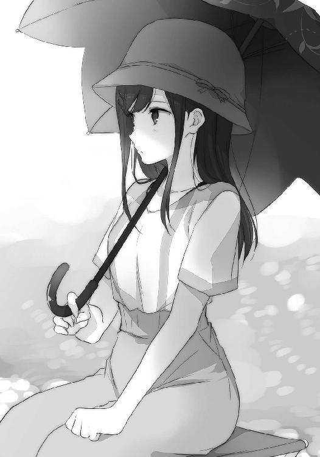
「じゃあ、描くぞー」
キャッチボールでも始めるように宣言を投げてくる。
「どんとこい」
対するわたしもなにかを受け止めるように力強く答える。
げーじゅつ的な時間を過ごす前のやり取りとしては少々、野太すぎやしないだろうか。
でも、夏というこの季節には相応しい気もした。
わたしの勝手なイメージだけど夏は太く、冬は細い。
樽見がわたしを見つめたまま手を動かし始める。手元を見ないで大丈夫なのかな、と思っていると目が合った途端に顔を引っ込めるようにしてキャンバスに隠れる。まるで安達だ。
わたしの周りには、どうにもこういう系の性格が多く集う傾向を感じてならない。
安達に樽見、それから妹。三人もいると、手を繫ぐときに困ってしまう。
一斉に揃う日が来ないことを祈るばかりだ。
足もとに置かれた雑多な道具や鞄を眺めながら話しかけてみる。
「たるちゃんにこういう趣味があるとは知らなかった」
「うん......一週間ぐらい前から始めたし」
それは、知らないわけだ。
「新進気鋭だね」
意味として合っているかは知らない。
「大丈夫だよ。お絵かきはよく一緒にしたじゃないか」
「あー......チラシの裏によく描いたっけ」
樽見は鳥の絵ばかり描いていた気がする。わたしは、お菓子の絵が多かった。
そのあたりの違いに、今の性格の根っこがあったりするのだろうか。
「だから、見るも無惨なしまちゃんが出来上がることはない......」
ちらりと、モデルを一瞥。
「と、いいよね」
「ステキね」
うふふ、と笑いあう。ついでに傘をくるくると回した。
透けた微かな光まで額の上で回る。樽見は回る傘を見届けた後、絵描きに戻る。
絵が仮に酷くてもモデルの出来のせいにはできないぞ、たるちゃん。
しかし、一週間前か。夏休みの始まりだ。
「夏休みの工作かな」
小学生の時代を思い出しながら、目だけ横を向いて笑う。川が音もなく流れていた。連日の晴天続きのせいか、近所に流れる小さな川は底が見え出しているけど、さすがにこの豊穣なる流れに陰りは見られない。
三日後はこのあたりもさぞ、賑やかになることだろう。そこに紛れるわたしたちとくる。はぐれて迷子にならないよう、妹たちから目を離せない。花火、ちゃんと見られるだろうか。
最後に見て以来、縁遠かった花火は今、どれくらいの進化をしているのか。
妹も大きくなる、花火は立派になる、わたしは高校生を半分消化する。
時間の経過を、まじまじ感じる。
手を動かしながら、樽見が話しかけてきた。
「そういえばさ、思い出したよ」
「なにを？」
「しまちゃんの妹のこと。......あ、正確にはしまちゃんのことか」
顔を覗かせる。カールした髪の先端が川風に吹かれて緩くなびいた。
「しまちゃん、その頃からちゃんとお姉さんやってたなって」
「そうだったかな」
「うん。妹ちゃんを大事そうに扱っていたなぁと」
微笑ましいものを見るような、優しい口調に首筋がざわつく。
美しい記憶も、共有できなければ困惑しか生まない。
「......そうだったかな......」
思い出せない。大事そうに扱うって、どういう具合だろう。
昔のことは、破れた写真の一部しか残っていないように断片的な記憶しかない。その中で覚えている妹のことは当然少なく、ただわたしは、妹だから自分が見守らなければいけないとその意識だけを強く持っていた。親にそう言いつけられたのか、なにかの影響なのか。
人を大切にするって、改めるとどういう感覚の元に成り立つのかがよく分からない。
抱きついて、ひっついていれば大切、ってわけじゃないし。
「あ、喉渇いたら言って」
樽見が傾いて、伸ばした手で地面に直置きのペットボトルを摑む。ラベルは青く爽やかだけど、中身は麦茶のようだった。溶けきっていない氷が中央に浮かんでいるのが見えるので、凍らせて持ってきたみたいだ。色々と気を遣ってくれて、しかもそれが的確だなぁと感心する。
安達も結構考えて気配りしてくれるのだけど、いつも少しなにかがズレているのだ。考えすぎなのだろうと思う。それがまた、面白いというか密かな楽しみなのだけど。
「......？ おかしなこと言った？」
「え？」
「いやなんか、にやーっとしてるから」
樽見が自分の口の端を指で引っ張る。なにもそこまで奇天烈な顔はしていないだろう、多分。
「気にしないで。思い出し笑い」
前もこんなやり取りをした気がする。油断してだらしない顔を見せてしまうなんて、安達みたいじゃないか。気をつけよう。
それからは、キリッとしながら大人しくモデルを務めた。
「しまちゃん、顔赤くなってきたけどやっぱり暑い？」
「あ、いえ、はい」
首から上に力を入れすぎてムダな心配をかけてしまった。......頭の働きが順調に低下してきているように感じるのは、この暑さのせいだと、日差しに責任を押しつけた。
土手の向こうを、自転車に乗った子供が走っていく。傘など差さず、日焼け一直線。
焦げつくような空気をめいっぱい吸い込んで、夏に順応していた。
作業中、樽見はわたしが退屈しないようにと思ってか、色々と話題を振ってくれた。手と口を同時に動かして器用なものだと感心する。その中で、樽見はこう語っていた。
急に絵を描こうってどうしたのかと聞いたときのことだ。
「そりゃあ、なにねしまちゃんとお近づきになるこうじ......げふげふ。そういう面もあるけどさ。うん、今の内にしまちゃんを記憶しておきたかったんだ。いつまた、会えなくなるか分からないから。いやそうならないように努力はするけどね、でもそれだけじゃあどうにもならないときってあるから。そうなったとき、こう、形になるものが欲しいなって」
「......ふぅん」
確かに、そうだよねと思うところはあった。
仲が良くて喧嘩したわけでもないのに、いつの間にか別れていく。
確固たる絆というものは、接着剤にならないのかもしれない。そうしたとき、どうすればいいのか。それに対する樽見の答えを聞いた気持ちとなって、考えることが多かった。
過去を振り返らず、前を見つめたまま大事なことを忘れないために。
思い出は、必要なのかもしれない。
そんなことを語りながら、日が沈むまでに終わるかなと太陽を目で追う。夏は日も長いし大丈夫だろうと気楽に納得する。実際、そこまでの時間はかからなかった。
時計を見ていないので正確に把握はできないけど、二時間か、三時間くらいだったと思う。
長い。
「描けた、けど」
樽見が曖昧な笑みを浮かべる。よく見ると、口もとが引きつっているだけだった。
「できたの、見る？」
怖いことを聞いてくる。
「お出しできないほどの出来ではないんでしょ？」
「そうなんじゃないかなー、と思いたい」
自信がないのか、客観的に絵の出来がアレなのか。
怖いもの見たさが先行する。
まさかわたしの口が七つあるとか、そこまでの力作でもあるまい。
立ち上がると、固まっていた膝の奥で熱が溶ける。溶解したそれが肌を伝うような感触に寒気を覚えながら、巨匠樽見先生の作品を鑑賞する。回り込んで、キャンバスを覗き込んで。
「あれ？」
おやおや、と予想外の出来映えに面食らう。
「どうかした？」
「いや、どうやって傷つけない程度に率直な評価を下そうか悩んでいたんだけど」
「ひでぇ」
「思ったよりずっと上手かったので、杞憂になっちゃった」
一目見て、これわたしだと判別つくぐらいには整っていた。髪型もそうだし、傘もそうだし、椅子もそうだ。間違い探しでもするように、これ合ってる合ってると指差す。
髪の毛の質感が分かる、傘が長くない、椅子に陰影がある。わたしの授業中に描く落書きとは一線を画していた。これが一週間の手並みか、と樽見をしげしげ眺める。
「たるちゃん、まさかの天才？」
「どぅ、はっは」
なんだその豪儀な笑い方。その後にすぐ噎せて、目を逸らし。
「白状するとさ、ほんとは一週間じゃない」
「うん？」
樽見が気まずそうに首を搔く。
「冬にしまちゃんと会ってから、練習してた。昔一緒に撮った写真があったからさ、あれ見て描いて......いました」
すみません、と樽見が頭を下げる。いや謝るほどの噓ではないけど。
でも、腑に落ちたものがある。
「そっか、道理で」
絵画となったわたしと見つめ合う。
「道理で？」
「うん......顔が幼いなーって思った」
無邪気な表情はまるでヤシロだ。無防備すぎて心配になるぐらいに開けっ広げだ。
こんな顔、今のわたしが持っているはずもない。どこを見て描いたのだたるちゃん。
現実にいるうっすら汗ばんだわたしは、果たして大人しく座っていた意味があるのか。
疑問の残る一枚ながらも力作に間違いない。少しかわいすぎるわたしを樽見に返す。
「かわいく描いてくれてありがと」
友達の贔屓目ってやつかな？
「え、いや、ぜんぜん！」
樽見が激しく首を振る。
「あら、かわいくないと仰る」
「違う、そっちじゃなくて。だからなんていうの......実物のしまちゃんの方が、ず、ずっと、魅力ましまし？ なんだよね！」
樽見が俯きながら、多分、わたしを褒めてくれた。
でもましましって。......ましまし？
「そこに近づこうと、がんばって、いるんだ」
顔を上げた樽見が、くわっと目を見開く。顎が出っ張って、変な顔になっていた。
その勢いのままとばかりに、わたしの手を取る。包むように握る。
「また、モデル頼んでいいかな。納得できるまで、しまちゃんを描いていたいんだ」
樽見がわたしの手を握りしめながらお願いしてくる。情熱的だ、手が汗ばむほど。
目も潤んでいるようになにかしらが迸っている。
「う、うん」
樽見の情熱？ に気圧されながらも頷く。なんでわたし、と聞くのは無粋だろうか。
町には、たくさんのものがある。物と者で溢れている。
その中で、樽見はわたしを描きたいというのだ。
よく分からないけど、それだけのことなんだろうと思う。
熱いというこちらの心情を感じ取ったように、樽見が手を離す。
その手の熱を鎮めようとばかりに、少し声を上擦らせながら提案してきた。
「それとさ、帰りにアイスでも食べない？ どう、というお誘い」
「あ、いいね」
頰が溶けるようにほころぶのを感じる。こんな風に喜んでいると、まるで、最後にお菓子を貰うために退屈な行事に耐えていた子供みたいだ。......当たらずとも、遠からずか。
荷物を片づけてから、樽見と共に土手を上る。
その最中、傾いた光がわたしの肩を押す。
重力が眩く光るように、日差しが重さを得ていた。
夏にしか感じられない季節柄の錯覚に、しばし、酔いしれる。
「しまちゃん？」
足を止めたわたしに樽見が声をかける。
少し間を置いてから、笑った。
「夏、してるなぁと思ってね」
手を広げながら振り返る。
色濃く、同時に乾いたような青色の空が出迎える。
その表面を引っ搔くように、無防備に広げた腕を振り回した。
風が爪の間に挟まるような感触。
これこそ、空の触り心地なのかもしれなかった。
教室に忘れ物をしたと気づいたのは、その日の昼のことだった。
血の気が引くというほどではないけど、鞄を摑んだまましばし固まる。
忘れ物はノートだ。終業式にそんなもの持っていくのがおかしいという話だけどあれは普通の授業用ノートではない。しまむらノートなのだ。
なにが書かれているかは名前だけでお察しだ。
夏休みの教室だから立ち寄る人はまずいない、まず人目に触れないと思う。思うけど万が一誰かに見られたら、いや誰かはいい。正直周りはどうでもいいけど、なにかしらの運命の悪戯が起こってしまむらの目に触れるような事態となったら私は血を見る。勢い的に耳からは噴き出ると思う。もしくは首が飛ぶ。どちらかは確実に起こり得るだろうという確信があった。
特にあの件がまずい、と思い返すだけで心臓が縮み上がる。見開いた目がすぐに乾く。
終業式でもしまむらはいる、と考えて携帯していたのが忘れ物の理由だ。
さぁどうしよう。取りに行くか、休み明けまで放っておくか。
部活動があるから敷地の中には入れるだろうけど、校舎って入れるものなのか。教師の許可を取ればいいのか、それともやっぱりダメなのか。休みに学校へ行くことなんてないから勝手が分からず、そういったことを聞く相手もいない。どうしようかとひとしきり悩んでいる間に立ち上がって出かける準備を始めていたので、その方向で行くのだなと他人事のように納得する。
行ってから、考えてみることにした。
家に家族の姿はなく、一人出る。いつものことだ。鍵を外して、自転車で外へ出た。
少し走って、帽子でもかぶってくればよかったと日差しを浴びながら後悔する。夏はいつまで暑いのだろうと、益体もないことを考えてしまう。やはりこんな日は夜に出かけるのが望ましい。祭りの灯りがあるといい。隣をしまむらが一緒に歩いていると、いい。
「.............................................」
出たついでと、下見というわけではないけれど少し、遠回りしてみる。
通学路を離れて走り、週末の花火大会の会場となる川と、そこを臨む通りに入る。夜はこの通りを暖色の屋台で埋めて、その一つを私も手伝うことになる。どんな形であれ、祭りに参加するのは久しぶりだ。
前は家族と一緒に来た。あまり覚えていないけれど、人混みの中は蒸した記憶がある。そして花火の輝きは私の中に残っていない。どうでもよかったわけじゃないけれど、なにかが。
花火の散らす火花は、私にまで届かなかった。燃え上がらなかったのだ。
そんな私が今はこんなにも、花火大会というものに心を躍らせそうになっている。まだはっきりと約束していないし、直近の大きな祭りでは実現しないという大きな失望がありながらも尚、胸を焦がすものがある。それも全部、しまむらからもたらされるものだった。
しまむらと祭りに出かけていたら、と思わず自転車を止めて想像してしまう。
頭が押されるような日の中にも拘わらず、停止して、降りて。
「ここに、こう......」
ここにしまむらが立って、と手振りでしまむらを形作る。そうこうしている間に夜を幻視できるようになり、屋台（仮）が川を背景として立ち並ぶ。迅速だった。重症である。
私としまむらが隣り合って歩く。でも周りには人がいっぱいで、私たちははぐれないようにと手を繫ぐ。多分、私から手を握る。しまむらはそれをしょうがないなぁと笑って許してくれるのだ。お互いの浴衣の袖が擦れ合う。私は足の裏にまで血がじくじく流れるのを感じる。
お揃いのヘアピンを時折、指で触れながら夜の道を二人で進む。ぼぅっと浮かぶ灯りを標としながら、人の川に逆らうことなく流れていく。窮屈なはずの通り道で、だけどそのせいか私たちの距離はいつもより一歩分近い。時々、私の肩がしまむらの肩に重なる。
髪を上で纏めたしまむらは覗ける首筋から伝わる雰囲気の違いに戸惑い、同時に目を引かれる。うっすらと口もとを緩ませた横顔に、さぁっと、光が走った。
次々に花火が打ち上がる。
交錯する光の余波が次々に私たちを染める。
それが夏の夜にあって、しまむらへの最良の化粧となるのだ。
「.............................................」
じーじーじー。
近くに木もないのに、蟬の声が聞こえた。
そんなところまで考えている間に、汗だくとなっていた。
目に昼の光が焼きついて、目の前が緑色に映っていた。
現実に焼き尽くされる。そそくさと、降りた自転車に戻った。
また走り出しながらも、頭には祭り景色が残る。
なにを着ていこう。やっぱり夏祭りは浴衣だろうか。うん。
帰りにモールに寄って、浴衣を買いに行こうと決める。備えあれば憂いなし。しまむらの浴衣姿も見てみたいけど、面倒くさがって着てこないことが予想された。見てみたいとお願いしたら、着てきてくれるだろうか。いけるような、無理そうな。微妙な願いだった。
河原では釣りをしている人以外にも、絵筆を握りしめている女の子がいた。黒い傘を差して、こちらに背中を向けているから詳細は分からないけど、もう一人の女の子をモデルにして絵を描いているみたいだ。暑いのによくやるな、と少し横目に眺めてからすぐに前を向いた。
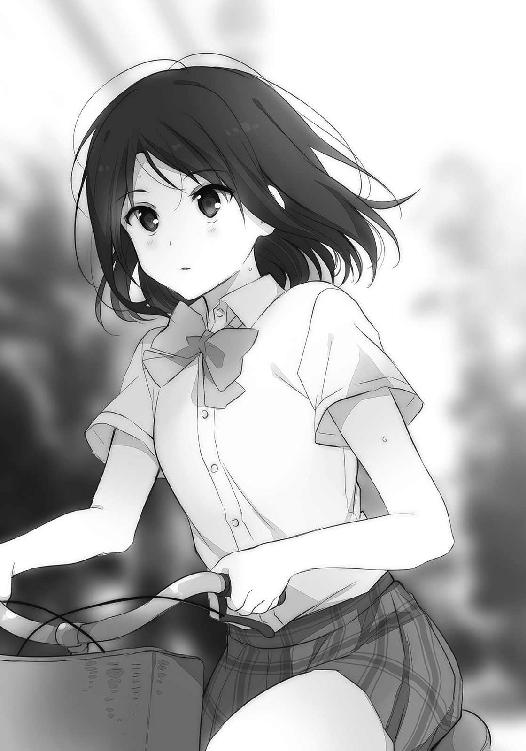
キャンバスの前に立つ女の子をどこかで見た覚えがあったけど、すぐに思い出せなかったからすぐに忘れた。覚えている必要もない相手なんだろう、きっと。
そもそも、私にとって覚えていなければいけない相手は何人いるのだろう。
片手で数える意味さえないのかもしれなかった。
そうして遠回りを経て、髪を熱しながら学校の側までやってくる。部活のかけ声みたいなものが聞こえてきて、それから遅れるように蟬の声も湧く。校内に植えられた木々に張りついているのか、家で聞くそれよりも重奏となっていた。頭の上で飛び交って鳴いているみたいだ。
表門から入って、登校してきたように自転車を置き場に停める。当然、置き場はがら空きだったけど手前ではなく、いつものクラス分けに従った場所に停めてしまう。効率よりも習慣、安定を意識してしまうことが多々ある。それが個性というものかもしれない。
自転車から降りて、建物沿いに歩いてグラウンドの方から身を隠す。見られて困るわけではないけどなんとなく隠れてしまう。そのまま壁沿いに進んで昇降口の前に来てみた。教師に説明していないけれど、ダメ元で開くかなと扉を引いてみる。
重さはあった。けれど存外、あっさりと開く。開くんだ、と扉を引いて押してとする。
左、右と周囲を見る。人気はない。蟬はうるさい。
入っていいかは分からないけど、入ることはできる。だから黙って入ることにした。
脱いだ靴は下駄箱にしまわないで、持って階段を上がる。踊り場の窓の前を通るときは一応、膝を屈めて中腰になった。靴を脇に抱えてこんな姿勢を取っていると、まるで物盗りみたいだ。見られたら余計に誤解されそうな気もして、早足になる。
人気のない階段、そして廊下。無言でただ一人歩いていると、窓からの景色が作り物に見える。音がなく、ただ遠くに青色を伸ばす空と雲が、用意された絵に見えてならなかった。
集団生活が苦手ではあるけど、学校は人がいてこその場所だと知る。
人を注がなければ、学校は生きた場所にならないのだ。
そのまま裸足でひたひた進むと、足音以外のものが聞こえる。別の階で活動している音がするから、校舎は文化系の部活動のために開いているようだった。なるほど、なるほどとひたひた歩く。うちの学校だけかもしれないけど結構不用心だな、と思った。人がいないし盗るものもないだろうけど、私みたいなのがいる。
教室に入る。扉を開け放った途端、閉じこもっていた熱気が出迎えた。密度の濃い夏に急速にまとわりつかれて、顔を拭うと水滴さえ払えそうだった。扉一枚隔てただけで廊下とは随分と温度差がある。積み重なっていけばいつか、もっと大きな火球にでもなってしまわないかと危惧するけれどその前に夏が終わると気づく。夏の暑さは永遠を象徴するようでありながらしかし、気づく頃には秋の涼やかさに移ろっているのだった。
一人きりの教室を突っ切って、自分の机まで来て腰を曲げる。身体を捻って覗き、ノートが残っていたことに安堵する。しまむらノートは無事だった。誰かが触った形跡もない。
確保してからパラパラと開き、問題の文面を確認する。
思い返すだけで心臓を縮み上がらせたその原文を見た瞬間、目眩を催した。
これをしまむらが見たら、やっぱり私の首が飛ぶ。恥ずかしいなんてものじゃない。
それより恐ろしい目にあうだろう。つまり、しまむらに嫌われる、距離を置かれる。今の私のもっとも恐怖するのはそれだった。多分、自分が死ぬよりも現実味がある分、怖いと思う。
というわけで、私の手から離すのはこれっきりだ。
ノートを閉じる。
こんなことが二度とないよう、管理は念入りにしないといけない。
心に誓ってから、早めに校舎を出ようと引き返す。その途中、しまむらの席の前で足が止まる。しまむらは忘れ物ないかなと机を覗いてみた。なにもない、埃さえない。
そうして捻った頭を下から上へ戻すときに、ふと思い出す。
「......そういえば」
以前、体育館の二階でしまむらと話していたことだ。
あの頃は案外、まともに喋れていた自分がいた。あれはもはや別人とさえ感じる。
......まぁそれはさておいて、しまむらがこんなことを言っていた。
『誰もいない教室で色々と悪戯してみたい』
あのときは曖昧に『へぇ』と流していたけど、今ならそんな涼しい受け答えはできない。
ありし日を偲びつつ、腕を組む。しまむらの思いつくような悪戯ってなんだろう。私がやられたことあるのは、顎を頭に載せる。一人では顎か頭皮が伸びないと不可能だ。
机の間を歩き回りながら検討する。考えるとき、歩き回る癖みたいなものがあった。
きっと頭と一緒に足も空回りしているのだ。
しばらく歩いて、伝う汗に足を止める。
なにも悪戯と限定しなくてもいいのだ。
もっと広く、しまむらを全体に見る。
もしここにしまむらがいたら、なにを思うだろうと。
普段のしまむらからして謎めいている。だけど今、私はそれを真剣に考える。その努力がしまむらノートであり、いつもの私だ。考えすぎていつも空回りしている気もするけど。
顎を伝うような熱の靄。指で触れて、見つける。
もし、しまむらがここにいたら。
暑いと、思うだろう。
まずそれをなんとかしようとする。そう気づいて、足が動く。窓に寄り、開け放つ。
窓際を、真一文字。
全部の窓を開けて、風通りをよくしてやった。
悪戯も兼ねて一石二鳥だ。いや、教室を出る前には戻しておくけど。
窓から距離を取り、教室の中心あたりに立つ。開放を待ちわびていたように、外からの音が教室に流れ込む。閉じきっていた空気がかき回されて、暴れる流れを肌に感じた。
悪いことをもう一つしてみる。
机に腰かけて、足を伸ばした。教室に誰かがいたら絶対にできないことだ。
身体は重力に引かれるように沈み、大きく息を吐く。
耳鳴りと、巡る血の音が聞こえる。
しまむらがここにいたら、今の私を笑ってくれるだろうか。
太陽が雲で隠れて、束の間、日が和らぐ。教室に、光のように影が差し込んだ。
その隙を縫うように、萎びていたカーテンを淡く揺らす。
風が来たと告げられる。
両手を広げて、その空気を余すところなく感じた。
未だ生温い、でも。
未来へ駆けるように忙しない風を、身体が軽くなるようにと祈って吸い込んだ。
そして、祭りの当日。
私は、紺碧を見る。
「今日は外で適当に食べてくるから、晩ご飯パスね」
昼前にそう伝えると、そうめん用の生姜を擦っていた母親が「やったぜ」と小躍りする。
というか、お昼はまたそうめんかぁ。父のお中元で貰ったとはいえ、何日続くのだろう。
「あんたも行くの？」
母親が妹に確認する。妹が「うん」と頷くのを見て、「はー」と妙な溜息を漏らす。
「暑いのによく人混みの中に行くわね」
まったくだ。
「だって、うちから花火見えないし」
「音は聞けるだろ音は。ま、引率は任せたよお姉ちゃん」
母親が軽薄にわたしの肩を叩く。こちらの心境を見抜いた上で敢えてやっているのだ。
我が母ながら、性格が悪い。最近は連日のジム通いのせいか、肩周りが逞しく見える。
「そうだ。あんたたち浴衣着ていく？」
母親がぴろろー、と服の袖を広げる仕草を見せた。
「浴衣？」
「祭りといえば浴衣じゃない」
「あー、うん。浴衣ね、どうしよ」
着替えるのも仰々しい感じがする。遠慮のようなものがある。
その後ろに引っ張られるような感覚に名前をつけようとしても、見つからない。
「あ、わたし着たいー」
妹が挙手する。ヤシロはきょろきょろと周りを確認した後、「わー」と両手を上げて便乗する。
いたのか。
「言っておくけど、お菓子が貰えるとかそういう話じゃないよ」
「......わー」
手がしおしおと引っ込んだ。
「そもそも、浴衣なんてあるの？」
「あるとも」
なぜか腰に手を当てて偉そうな母親であった。
「私が昔に着ていたやつだよ。取っといたからまだ着られるだろ......多分」
話していて不安もあったのか、母親が小走りで衣装簞笥のある部屋へ向かう。そしてすぐに戻ってくる。これもスポーツジムでの成果の一環だろうか、やたらに足が速い。
持ってきた浴衣は二着で、畳まれた赤色と浅葱色が重なっている。柄は見えない。どちらも少し色褪せて、乾いていた。
「虫除けはしておいたし、大丈夫だろ......恐らく」
「なんで一々不安を煽るかな」
浴衣を妹に渡す。妹がまず赤色の浴衣を広げて、「わぁ」と頰をほころばせる。
「変な服ですね」
横から覗くヤシロが言う。服はともかく、帽子はあんたも大概変だ。
木の枝を編み込んだような、縦に細長い帽子をかぶっている。枝の隙間から瑞々しい葉や蔓が覗けて、作り物なのか、本物の植物なのかも判別しづらい。本人の髪の色と相まって、ほとんど童話の住人だった。なんでそんなのがこの家にいて、せんべい握りしめているのだろう。
「ヤチーも着てみたい？」
「チキュージンの文明を知るのも悪くないですな」
では早速、と赤色の浴衣を身体に巻こうとしたヤシロを妹が身を引いて避ける。
「ヤチーは青色っぽい方が似合うよ」
「そんなことはありませんぞ」
「ありますぞ。着れば分かるよー、ほらー」
「きゃー」
浅葱色の浴衣を広げて、妹が逃げるヤシロを追いかける。どちらも本気ではないらしく、ぐるぐる、部屋や廊下を走り回る。こんな暑いのに、よくあれだけ動き回れるよ。わたしなんか扇風機の前から離れて立っているだけでも、汗の滲みを感じているのに。
その妹とヤシロの追いかけっこを眺めていた母親が「ふぅーむ」と大げさに息を吐く。
「どしたの？」
「あの子、走り方があんたにそっくりだわ」
「はぁ？ どこが？」
「手を前に出して走るところ」
「.............................................」
「今よりもっと小さかったときの話よ。覚えてないの？」
「......忘れた」
噓をついた。額が少し、熱くなった気がした。
「あの頃はかわいかったもんだ」
「はいはい、今はかわいげなくてすみませんね」
「うん」
淡々と素直に頷かれてしまう。もう少し手心というか、なんというかだな。
「猛省しろよ」
うぜー。
「で、あんたも着ていく？」
「わたしはいいや。いつものかっこで、ふつーに行く」
正直言うと、わたしも母親側の姿勢にある人間なわけで。
それに自分の部屋でぼぅっとして、遠くに花火の音を聞くのも嫌いではない。
音だけでも、頭のどこかに賑やかな光を感じ取ることはできるのだった。
「おーい、そうめん食べるから戻っておいで」
「はーい」
走って戻ってきたヤシロはいつの間にか、浅葱色の浴衣に身を包んでいた。
確かに、赤色よりも寒色の方がずっと似合う。
そして、当たり前のように一緒に昼飯の席に着く。
「ひやむぎはいいものですな」
そうめんとひやむぎの違いってなんだったかなぁと、少し考えた。
そんなこんなで赤色と浅葱色が盛り上がるのを眺めつつ、時々巻き込まれつつの時間を過ごして夕暮れが訪れる。スプレーを吹きかけて虫除けは万全だ、と用意している間に既に一カ所、太ももの脇に虫さされを発見した。指で搔くと途端、痒くなる。こういうのも藪蛇というのか。
外に出ると、飽きもせず蟬の声。昼間の青みの抜けきらない空には、青い月が浮かんでいる。光を帯びない月は、その表面のくぼみもはっきりと見えた。日の長い時期によく見るそれは、いつもより月を近くに感じる。今にも落ちてきそうで、つい、見上げてしまう。
宇宙は死ぬ前に一度くらい行ってみたいなぁと、昔から思うのだ。
無重力の世界で気の済むまで眠ってみたい。
それを体験したとき、囚われるものを一つ解かれた感覚はなにを捉えるのか。
重苦しく、茹だるような暑さの下で、夢想だけが月に触れる。
隣に並んだヤシロが当たり前のようにわたしの手を「にぎにぎ」した。
握られて、その手の柔さに心の薄い部分がへこへことへこむ。
人懐っこいというか、本当の意味で無邪気というか。清水に、すっと手を差し込むように錯覚するのはその色合いも含めてらしい。この自称宇宙人は、月に触れたことがあるのだろうか。
残された手を一瞥した後、「はい」と正反対に差し出す。予想通りにすぐ目が合った妹が、「な、なんだよぅ」と反発する。そのうろたえる手を包む赤色の浴衣に、蝶の柄が舞っている。髪型も上で纏めるように変えて、普段より少し背伸びしている。ま、中身はいつもと同じだけど。
差し出したまま待っているとやがて、おずおず、手を摑んでくる。釣りを連想して、釣り堀の日野が竿を引っ張り上げる様を思い返す。
「釣れた釣れた」
釣果に満足して手を掲げると、「うがー」と妹がお尻に頭突きしてきた。
「仕置き」
「うがー」
どんなお仕置きをしたかは割愛。済ませてから、三人で歩く。
花火の打ち上がる川までは、結構な距離がある。家が駅側にもっと近ければバスでの移動も考えるけど、なんとも中途半端だった。
「......そういえば」
冬にもこんなことあった気がする。あのときは確か、日野に会ったんだったか。
今夜の祭りはどうだろう、来るかな。来るとすれば永藤も一緒だろう。
あの二人は本当に、いつも離れない。飽きないのかな。相手の顔に、声に、仕草に。そうした相手との付き合いが面倒に感じないだろうか。いや、そう感じるわたしが薄情なだけか。
家族に飽きたなんてことはないのだから、日野と永藤もその延長にあるのかもしれない。
家族の延長って、なんだかすごいな。人間関係で家族より延びるなんて。
日野、永藤と来ると次に思い浮かべるのは安達だった。
安達も誘ってみるべきだったかな。考えて、左右を見る。
「んー」
妹とヤシロと樽見が一緒だって聞いたら、来ないだろうな。
実感はないけど一年の付き合いがあるので、安達の性分もそれなりに把握している。協調性がないからなぁ、安達は。そういう人が集団に混じると、お互いが嫌な思いをしてしまう。安達はそれが分かっている方なので、むしろ良心的と言えた。
そんな安達だけど、わたしにはよく甘えてくる。
安達にとって、わたしは周りより近いものなんだろう。
なんでそんなに気に入られたかな。本人に聞いても目を回すところしか想像できない。
ちょっと笑ってしまった。
そして今誘わなくても、安達とはまた別の機会に祭りに出かけるときが来ると思う。そんな話をこの間したし、夏は長いわけだし、と暢気に構えることにした。
せっかくの休みの予定をぎゅうぎゅう詰めにしてしまうのは、いかにも勿体ない。
まだ夏休みは始まったばかりだ。
......毎年そう思うのだけど、気づくと終わっているのが悲しい。
花火大会の会場である川沿いへ近づくにつれて、人の流れが一つの道に合流していく。その流れを一望して、結構な人が浴衣を着ていることに驚く。特に女子はほとんどが和装で、あらあらと自分を見下ろす。夜も暑いからと、普通のシャツに短パンで来てしまった人がいますよ。
ま、いいか。それよりも、人通りが増していく方に注意する。
「手、しっかり摑んでなさいよ」
はぐれたら探すのも一苦労だ。ヤシロは人混みに埋もれても光っていそうだけど。
「そこまで子供じゃないし」
「にぎにぎにぎ」
表向きの反応は対照的だけど、どちらの手にも力が籠もった。
大きなホテルの前を通り、人の流れは公園の方へと傾いていく。有料の観覧席なんてないので、場所取りは混雑を極める。早朝から陣取っている人も多いぐらいなので、こんな時間にのこのこ出てきても、優良な場所なんて既に埋まってしまっているだろう。わたしとしては、その情熱にお付き合いするつもりはない。
せっかく花火を高く打ち上げてくれるのだから、遠くから楽しめばいいのだ。
今も見えはしないけれど、空気の弾む音が聞こえてきていた。
「......あ、いたいた」
流れの端、ビルの壁から伸びた影に紛れて、樽見を見つける。
携帯電話を弄っていた。わたしに連絡を取るつもりかな。
時間は大まかに約束していたけど、待ち合わせ場所を決めていなかったことに、今頃気づく。でもわたしの家から川までの道を知っていれば、その間で待てばいいだけか。たるちゃんってば賢い。いやまぁ、そもそもちゃんと待ち合わせ場所を決めればいいだけではあるけれど。
「おー、しーまちゃーん......」
樽見もこちらに気づいて、電話をしまってから手を振ってくる。振りながら人混みを縫って近寄ってきた。他の人と距離が近い中で見比べると、背が伸びたよなぁと改めて感じた。
「ちゃーん」
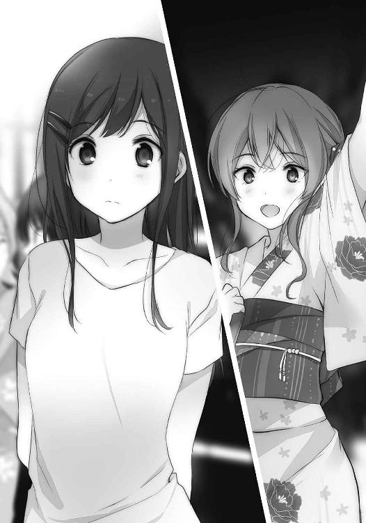
「はーいー」
間近で手を振り合う。なんだこれ、と笑うと樽見の顔にも笑みが宿った。
樽見はしっかり浴衣だった。牡丹の絵柄が屋台の灯りの下で色づく。長く緩やかに仕上がった髪と相まって、ああこういう人ファッション誌でよくみるー、という感想がまず出る。
しかしこれだと、わたしだけ仲間外れだ。なんか独り取り残されているというか気合いが入っていないというか......まぁ、いつものことか。
「えーと......こっちがしまちゃんの妹だな」
髪の色を左右見比べて、妹の方へ上半身を傾ける。ヤシロを妹と思わなかったあたり、樽見は正常である。妹が及び腰になっているのが、握る手の力や角度から伝わってきた。
「久しぶり、って覚えてないよね。えぇと小学生のときはよく遊びに行っていたんだけど」
樽見が愛想笑いを浮かべて自分の顔を指差す。妹はまったく覚えていないようで反応が薄い。
「あはは、うん。初めましてでいいや。よろしくね」
「はい」
はいだって、と隣で聞いて肩を揺らす。神妙な顔ではいときた。
いい子仮面なんかかぶっちゃって、祭りのお面屋が商売あがったりだ。
妹が手の動きからかわたしの反応に気づいて、「うがー」とお尻に以下略。
仕置き以下略。両手が塞がっているので結構大変である。
「で、こっちが、その他？」
その他、と首肯する。それから、その他が「知我麻社と申します」と自己紹介する。
あぁそんな名前だったね、とすっかり忘れていたそれを思い出す。
わたしはヤシロとカタカナで認識しているし、妹にとってはヤチーなのだ。
「あぁそう......すげー髪だね」
樽見が恐る恐ると、及び腰でヤシロの髪に触れる。前にも一度見たことがあるはずだけど、あのときは目に入っていなかったのだろうか。一体なにを見ていたのか。......あ、わたしか。
今更なことながら、少々照れる。
「じゃあ行こうか」
大変そうだけど、と背伸びして先行きを見通す。既に人の壁ができあがっている。そして恐ろしいのはその壁がゆっくりながら流れていくことだ。これに参加するのか、と辟易する。
これだけ人がいれば、蚊にとって入れ食いだよなぁとも思った。
わたしたちが動くにつれて一番大きな花火、太陽が遠ざかっていく。もたらした暑さというものを置き去りにして、独り夕涼みだろうか。子供だって散らかした玩具を片づけるのに......と生温い空気を吸い込みながら苦笑する。地球よりずっと大きい大人なのだから、もう少し手心というものを覚えてほしい。
「ん？」
樽見がわたしの手元を見つめている。ヤシロがにぎにぎしている方の手だ。
「どうかしたの？」
聞いてみると、樽見の背筋が跳ねる。反応の仕方が安達とかぶって見えた。
「いやなに、しまちゃんは今もおねーさんしてるなと思ってさ」
「そう？」
前にも日野あたりにそんなことを言われた気がする。姉度が高いとか、なんとか。
けどヤシロのおねーさんになっても困る。わたしは正直、自分が姉という立場に向いていないと思っている。そういう性格じゃないよねぇというのは、自覚していた。
「昔ともまた違って、大人になったって感じかなー」
「なんか、白々しい感じですけど」
言葉が浮いている。ついでに目もと頰が若干引きつっている。その盛り上がりに本音を隠すように。見つめて待ってみると、樽見の逃げていた目が道路を一周したあたりで戻ってくる。
えへえへ、と照れ隠しのように口を細くして笑いながら。
「いや、しまちゃんの手は人気だね予約制だねってね......」
「手......あ、これね」
繫いでいる両手を持ち上げる。確かにもう空いてないけど、繫ぎたかったのか。
みんな、わたしの手になにを期待しているのか。
「しまちゃん家まで迎えに行けばよかったかな」
樽見が腕組みしながら深々と唸る。目尻と眉間に皺が寄り、冗談ではないみたいだ。
そうだなぁと気づく。どちらかの家で待ち合わせれば、合流は簡単だったのだ。
その発想がすぐに出てこなかったあたり、歳月を感じる。
なんていうか......表現が思い浮かばないけど、お互いに背伸びしている、というか。
「ではわたしの手をお貸ししましょう」
ささっと、ヤシロが残っている右手を樽見に差し出す。
うきゃうきゃ言っているだけだと思ったらいきなり話に割り込んできて、少し驚く。
「お、おぅ。ありがとうよ」
樽見も樽見で人がよく、困惑しながらもその手を取る。
両手を万歳みたいに持ち上げられたヤシロが、「ぷらーん」と宙に浮かんで楽をするな。
むかーしむかしの、黒い服を着た人に連行される宇宙人みたいだ。
あははは、とヤシロの頭の上で樽見とぎこちなく笑いあう。
「いやまぁ、悪い子じゃないからさ」
多分。本人は善意という意識さえなく、困っている人がいたら助けてあげよう、という小さな子への教えをそのまま守っているような感覚なんだろう。損得と、善悪が混じらない。
今時の子供だってもっと打算的なこのご時世では稀少である。異質でもある。
「うん......けど、しまちゃんが来てくれるとは思わなかったなー」
ヤシロの小さな手を握りながら、樽見が感慨深いように言う。声に付き従う息が深く、大きかった。
「なんで？」
「昔はともかく、今のしまちゃんは面倒くさがりっていうか......あ、いやいや」
悪口を言ったと思ったのか、樽見が口の前で手を振る。
「怠け者って言いたい......わけではないんだ」
「ほぅほぅ」
どれくらいまで墓穴を掘るか興味深いので、見守ってみる。
というかこの間、絵描きのモデルになったじゃないか。
「適当......違う、違うな。気難しい、出不精、えぇ......あーだめだ、思いつかん」
樽見が言葉の迷路にはまりこんで頭を抱える。見ているとなんだか少し楽しい。
いやぁどれも結構適切ではあるよ。そう言って、無邪気に笑えば昔のような空気を少し呼び戻すことができるのだろうか。そういう機会を感じ取りながら、実行には踏み切れない。
昔に戻るって、そんなに素晴らしいことだと思えないのだ。
欠けない、朽ちない損なわれない本物のなにかがわたしたちの間にあるなら、戻らなくても見つけられるはずで。
「おー、おーおー」
ヤシロが飛び跳ねる。さっきまで宙に浮いていたのに、どこを蹴って跳ねたんだ。
「香ばしい匂いがしますねー」
まだ屋台のある通りまで結構な距離があるのに、ヤシロが鼻を上向きに持ってくる。こういう何気ないところでも、密やかに常人の枠に収まっていない。外見だけでなく、中身も相当に怪しい。その怪しい娘と手を繫いで夏祭りに向かうのも、奇縁と呼んでいいものか。
それはさておき、妹が大人しい。はぐれていないかと確認するけど、ちゃんと手は繫いでいる。俯いているわけでもなく、黙々と歩いていた。知らない人と一緒だと、大体こうだ。
手を持ち上げて、なんとなく頰をつつく。頰のへこんだ妹が、眉間に皺を寄せる。
「なんだよぅ」
「静かだから眠いのかと思って」
相手をしてあげないと、かわいそうに思って。
そう言ったら、妹はどんな顔をするのだろう。義務感って、家族に感じてはいけないものの筆頭だと思う。だから妹だから面倒見ているというのは、間違っていないようで引っかかりを覚える。順番は間違っていないけど、そのままでいいのかなと。
川沿いの通りに出る頃には人が多すぎて、一列にならないと前へ進んでいけない。だけど手も離せないので、両肩を後ろへ引っ張られるような姿勢になる。肩骨を突き出して歩いていれば必然、周囲との接触も多くなる。決して愉快ではない。
気が滅入りそうなものだけど、そこに光を差し込むように、金粉が降り注ぐ。
連続して打ち上がった花火が空に散らすそれを目の端に映すと、案外、気も紛れるものだ。
花火を直接見上げるのは、果たして何年ぶりか。
「ヤチー、これが花火だよ」
黙りがちな妹が、少し偉ぶるような調子でヤシロに説明する。
「ほほーぅ」と、ヤシロが口を半開きにしながら金の粒子を見上げる。
宇宙人の目に、空に咲く花はどう映るのか。価値を見出せるのか。
......というのは半分ぐらい冗談だけど。
鮮やかな火花が消えては続々、絶えることなく生まれていく。浮かぶ月よりも身近な星の誕生と終わりに立ち合えば、わたしのようなやつでも心は弾むのだった。
花火に惹かれるように道を行き、通りに所狭しと並ぶ屋台が見えて、ヤシロが色めき立つ。
「おおーぅ」
花火よりずっと食いつきがよくて、露骨だ。
「しまむらさんしまむらさん」
「分かってるってば」
腕をぐいぐい引っ張ってくる。晩ご飯の代わりも兼ねているから、強く反発はしない。
向かう前に、樽見に確認する。
「ちょっと見てみてもいい？」
「うん。私も晩飯まだだし」
丁度いいや、と樽見が屋台に目を向ける。その横顔を見上げて、もしかしてと思う。
あの場所でずっと待っていたのかな。まさかね、安達じゃあるまいし。
「よい匂いの正体はここですな」
すんすん、とヤシロの鼻がその屋台の前で活発に動く。赤い屋根に、灯りに映える橙色。大きな提灯のような色合いの屋台がいくつも並ぶ中、自己主張の激しい大きな看板が掲げられていた。
「開運たこ焼き？ なにこれ」
妙な看板が目について少し足を止めた瞬間、屋台の奥から人が出てくる。夜とはいえ蒸し暑いこの時期に、通気性の悪そうな衣装を纏っている。袖丈の長い、ローブみたいな格好の女性だ。
色白の肌に目立つ赤い頰を見ていると、たこ焼きよりも林檎飴の方が連想される。
「へい、ラッシャイ」
「あ、いえ」
「このたこ焼きはですね、なんと一パック八個の内、一個だけタコが入っています」
「こらこら」
看板看板、と指差す。けど無視される。
「その一個に当たった幸運な方はなんと、隣でおみくじが無料で引けます」
どうぞどうぞ、と脇に用意されたそれを強調する。福引きのガラガラにしか見えない。
「そしておみくじで大吉を引いた方には更なる幸運として、手相占いが無料で受けられます」
「.............................................」
「そして手相占いの結果が今ひとつな人は、たこ焼きをもう一パック買うことで運が廻り」
「さ、次行きますよー」
「あぁん」
危ない危ない。こういうのも賑わいに紛れているのだから油断ならない。
「では一言だけ忠告しますとねー」
「え？」
屋台を挟んでいたはずの女性が、いつの間にか隣に並んでいた。
飛び越えたのか、と格好や地味な顔と裏腹の行動力に面食らう。
そして、なんでついてくるのだ。
「あなた、女難の相が出ていますよ」
「.............................................」
くりんくりん、と女性の突き出した人差し指が額の前で回る。
いきなりなにを言い出すのだ、この人は。手相占いがどうとか言っていたし、占い師？
「わたし、女なんですけど」
「男難の相、というのはあまり聞きませんね。困らないのでしょうか」
答えになっていない。困惑しつつ、微妙に腰が引ける。
変な人に絡まれちゃったのだろうか。
「......顔に？」
「いえ、手に。手相占いが専門でして」
俯く。両手はしっかり塞がっている。顔を上げる。目はそのままに口もとがにっこり。
あ、これ危ない人だ。
「ご忠告どうも。それではどうもさようなら」
早歩きで離れる。「おたっしゃでー」と手を振って、追ってはこなかった。
すぐにお互いが、人の流れに紛れて捉えられなくなる。なんだったのだろう。
「女難......かぁ」
「うん？」
なんでかわたしより、樽見の方が気難しい顔をしていた。身に覚えでもあるのかな。
「あ、しまむらさん。あれはきっといいものですよ」
ヤシロが次に指差したのはベビーカステラの屋台だった。ハチミツ、玉子、牛乳入りと書いてある。売りになる文句なのだろうか。ヤシロの顔を見れば、食べたいかそうでないかなんて明らかなのであった。学校の試験の選択問題も、これぐらい分かりやすいといいのになぁ。
こちらは特にイベントもなく、ごく普通に買うことができた。そうそう、なにか起きても疲れるのでこれぐらいがいい。問題があるとするなら、わたしが代金を支払ったことぐらいだ。
妹はともかく、ヤシロも当然のように無一文だし。
んまんま、と妹と半分こしたカステラをヤシロが堪能している。
「かすてらうまし」
「ヨカッタネー」
「あっちのからあげというのはなんでしょうねー」
「あんたね」
食べている最中に別の食べ物にも色目を使うんじゃない。
まるで普段食べさせていない子みたいにはしゃぐヤシロを好き放題させていると、財布が軽くなって仕方ない。重くなるのは歩き回る足ばかりだ。リードの紐でも引っ張るように手を引いて、次々に屋台に向かおうとするヤシロをコントロールする。屋台を覗くだけでも匂いと雰囲気とおねだりに釣られてしまうので、俯いて早足で横切った。
「ぎゃー、しまむらさーん」
「えぇいうるさい」
わたしはから揚げより焼きそばの気分なんだ。そうめん以外の麵類を喉が欲している。
「しまちゃん、やっぱりおねーさんしてるよ」
早歩きに付き合う樽見が、からかうように評してくる。
む、と微かな反発を抱いて、反論した。
「ていうかさ、昔もわたしがたるちゃんを引っ張っていたし」
案外と自然な流れなんじゃないの、と。
その言葉は思いの外、するりと。抵抗も、時間もなく出るのだった。
奥深くにしまわれた思い出ではない発言に、言ってから戸惑う。
樽見も予想外だったのか、固まって。でもその時間はわたしよりずっと短い。
「......そうだよなっ」
にかっと、樽見が稚気に富んだ口もとを見せつける。
祭りの薄い灯りを背景に、夢の切れ端でも覗くようだった。
そうやってああだこうだとしつつそばもしっかりすすったあたりで、花火も本格的に夜の部が始まる。挨拶代わりに盛大に打ち上げられた七色の花火に、周りが歓声をあげる。
わたしも便乗して、「綺麗だねぇ」と、月並みに賛美した。それから、妹のことに気づく。
「見える？」
前に立つ大人の背に隠れて、陰の多い妹が「んー......」と色よくない反応を見せる。
しょうがないな。
「たるちゃんはヤシロをお願いできる？」
繫いでいた手を離す。そして、妹の脇に手を入れて持ち上げた。
「え......うぇ、ええ、えっえっ」
いきなりのことだったからか、妹が目を丸くして動揺を露わにする。
少し重いけれど、掲げて。振り向いた妹に問う。
「見えた？」
「......うん」
前を向いた妹が、珍しくしおらしそうに頭を振った。
妹を持ち上げる角度が、そのまま日野の言う姉度として表せそうだった。
「わー」と、隣で樽見に抱えられたヤシロもご機嫌のようだ。いやいつもよさそうだけど。
「持てる？」
重くないかと樽見に聞いてみる。樽見は目もとを泳がせるようにしながら、「うん」と肯定する。声にはヤシロに対する困惑が見て取れた。
「大丈夫。ていうかなにこの子、なんか......うん。なんか、すげーふわふわして軽い」
「あー、だよね。おかしいよねー」
「そんな軽く流せるしまちゃんも変な気がするよ」
そこがいいけど、と小声で付け足した。ように聞こえた。
人混みの中で偶然のように聞き取れてしまったのは、なにを意味するのか。
いいのか。そうか。
「......ふむ」
花火に夢中な妹に聞こえないよう、首を伸ばして樽見の耳もとに顔を寄せる。
なぜか樽見がギョッとしたように唇を引きつらせていたけど、そのまま言う。
「今日はごめんね。妹とか連れてきて」
電話で謝ってはおいたけど、直接言っておくべきだとも思った。子守りまでさせているし。樽見は「あぁうん」と最初は漠然と頷きかけたけど、ややあって、はっきりと顎を引く。
「いや、いいんだ」
その横顔に強がりや、嫌みのような後ろ向きなものは見られない。
磨かれたように整った頰と目尻が、空の花の色に染まる。
「私はさ、まずしまちゃんと楽しくやろうって思ったんだ」
「まず？」
「うん、まず」
そこで句切って、樽見が花火を見上げる。
なにかを表明するようなその言葉に、続きは訪れない。
けど、未来を見据えているような樽見の瞳を覗くと、ある種の気持ちよさがあった。
人と熱に阻まれて届くはずもない風を、頰に錯覚する程度には。
「そっか」
続きを聞くのは、野暮に思えた。
それは花火が綺麗だからって、いつまでも消えずに残っていてほしいと請うようなものに思えたのだ。未練を持って留まり続ける花火は、落書きでしかない。
「それで、それはいいんだけど......今更で格好悪いんだけどさ」
ごほごほとわざと噎せる。なんだろうと思っていると、樽見がヤシロを抱き上げたまま、一歩近寄ってくる。そして自己主張するように顎を上げて鼻を高くする。
「こう、一言ぐらいあってもいいんじゃないッスかね」
最初はなにを言いたいのか分からなかった。
浴衣の袖を大げさに振る。
その樽見が気まずそうにしているのを見てから、やっと理解する。
「あ」
浴衣姿についての感想を催促されたらしい。
赤色の花火も上がっていないのに、樽見の耳が赤らんでいた。
「自分からどう、なんて聞かせないでくれよしまちゃーん」
樽見が泣き笑いのような調子で、羞恥心に苛まれた声を披露する。
「これは失礼を」と、わたしまでどぅへへと笑ってごまかしてしまう。
ファッション雑誌の女の子みたいは、褒め言葉か？ そうでもないか？
悩んで、樽見を上下に眺め回して。照れて踊るように逃げる左足を見つめてから。
「輝いて見えるよ」
ありのままに評価する。樽見はそれをどう受け取ったのか、「あは、あは」と変な笑い声をあげる。表情は硬く、口がクリームパンみたいになっていた。
「は、花火よりもって？ なんて、あははは」
「うん、キラキラしてるよ」
またも見たままを語ると、なぜか追い打ちになったみたいで樽見が派手に噎せた。
どう思われてしまったのか、こっちが気になってくるぐらいだ。
だって確かに今、たるちゃんは輝いていた。
抱っこしているヤシロの髪の影響であるのは内緒だ。
七月某日、花火を堪能して旧交を温める。
絵日記の題材はこれで決まりだな、と喧噪に隠れて独り笑った。
「しまむら」
その背中を見送る声が、震える。
視線が中央へと渦を巻きながら収束し、砕けて吞み込まれていくようだった。
囲う三つの賑やかな声が、私だけを切り離すように足もとを不確かにする。
打ち上げられた花火の光が一瞬、暗夜を紺碧に薄めた。
しまむら。
おまけ「永藤家来訪者その１」
店の前で丁度、出てきた永藤と鉢合わせる。
自分の家から出てきたというのに、泥棒みたいに膨らんだ風呂敷を背負っていた。
「あ、日野だ。予定より早く会った日野だ」
わーい、と無感動に永藤が手を上げる。
その反応と風呂敷を見て悟る。
「お前、またわたしの家に泊まりに来ようとしてただろ」
「当たりー」
「却下、はい引き返す」
永藤の腹を押して二人で店の中に戻る。店先にいる永藤の父親と目が合って、小さく頭を下げる。わたしは昔からお肉のおじさんと呼んでいた。永藤とは耳にある特徴がそっくり、らしい。永藤の右の耳たぶには、切れ目のような縦線が走っているのだ。
前にせがまれて耳掃除してやったときに気づいて、そんな話を聞いた。
「まぁまぁ、よいではないか」
永藤が肩を押し返してくる。体格差はいかんともしがたく、ずりずりと足が後退する。
「よくない」
「エアコンの風が恋しいのです」
「今日はダメだ、客の出入りが多い」
だから永藤の家へ逃げてきたというのに。永藤と押し合うのを諦めて回り込む。早々に上がり、帽子を投げ捨てて横に寝っ転がって動かないぞと意思を示す。しかしそこで油断してはならない。私がここにいるとしても『まーとりあえず泊まってくるよ』と言い出しかねないのが永藤だ。これだけ一緒にいても予想外が多々ある。
大体、その風呂敷っていうのはどういう判断だ。古風なウチに合わせたのか。
永藤が人の頭の側をうろうろする。追い払われて、未練がましい猫みたいだ。
シッシと手で払ったら猫の声真似までしてくる。これがまた、似ていない。
ウシガエルの鳴き声に近かった。ひとしきり鳴いて満足したのか、その場に座り込む。
「仕方ないな、今回は遠慮してみよう」
「微妙に偉そうだな」
と言いつつ、足の指で扇風機を操作する。慣れたものだった。
青い三枚刃が涼しげな色合いを描いて回る。今年の夏もご対面となった、何年目だろう。
「そうかそうか」
風呂敷を下ろしてから、永藤が大げさに頷く。
「なんだよ」
得心がいったとばかりの永藤に尋ねる。ついでに転がって扇風機の前を確保する。
「日野を夏休みによく見るのはそういうわけか」
「ま、そうだな」
何年も繰り返してきてようやく気づいたらしい。......いや、毎年気づいているけどすぐに忘れてしまうだけかもしれない。永藤は馬鹿ではないのだ。ただこう、記憶がいい加減というか。
「盆が近づくと多くなるんだよ。仕事柄、っつーか、家柄？」
兄貴たちも揃って家に帰ってくるので、なんともむさ苦しい。それだけならいいけど、兄貴の嫁やら子供やらが一堂に会して、その相手まで一々させられるのが面倒この上ない。しまむらぐらい姉力が高ければどうにでもなりそうだが、生憎わたしは末妹である。
ということで今日は、郷四郎兄貴に早々にその相手を任せて逃げてきたのだった。
四男の兄貴だけまだ独身だ。その内、家の選んできた相手と見合いでもするだろう。
そういう家なのだ。わたしは知らん。
振り返ると、さすがにもうこたつ布団は片づけられている。六月まではご健勝だったのだけど、また来年。しかし来るまでも暑かった、と熱した髪の先を撫でる。こんなに暑い日が続いて、けれどいつの間にか寒々とした冬が訪れるなんて、毎年経験していても妙に現実味がない。
そんな風に、いつの間にかを繰り返してお互いに大きくなったものだと、永藤を見上げて思う。永藤がまた、人の側でうろうろしていた。......胸の下に影ができているぞこいつ。
「どーした、なにか探しているけどなに探しているのか忘れたのか？」
永藤にはよくあることである。と、思っていたら。
「どけどけーい」
「ぐわっ」
体当たりかのしかかり、判断の微妙な角度で永藤が滑り込んできた。
わたしを弾き飛ばすように扇風機との間に割り込んでくる。畳の上を額が滑る。
「永藤さまのお通りだー」
「額赤くしてなに言ってんのお前」
そしてそのまま居座る。
びたんびたん、と陸に揚げられた魚みたいに手足が暴れる。いや魚に手足はないけど。
「さっさと通れよ」
「暇だから遊ぼう」
「うん、確かに暇なのはよく伝わってきた」
「あと胸打った、擦った、すげーいたい」
「このやろ」
鼻に指入れるぞ。
「遊ぶっていっても、あっついしなぁ......」
お前とじゃれ合うのも辛い季節だ。昔はよく、夏場でも抱きついていたものである。思い出すと鼻の先が熱くなって、それを払うように顔を逸らすと机の上のチラシが見えた。手に取る。
「ああ、これか」
この時期に回ってくる花火大会の知らせだった。近所にある料理屋が出店するので、その関係で永藤の家には回ってくる。うちにはこんなもの、来た試しがない。親戚付き合いは嫌になるほど多いが、近所付き合いというものがまったくないのだ。
うちは花火見たいと両親にねだったら、とんでもなく遠い場所の、規模の違う祭りに連れていかれたことがある。立派だったし花火も綺麗だったけど、あれはなにかが違った。
だけど帰りに氷小豆を食べさせてもらえたので、そう悪い思い出でもない。
「今夜か......んー」
昔は毎年、一緒に出かけていた。でも何年も続くと出店の顔ぶれも変化がなくて飽きてくる。
花火だって、永藤の部屋の窓から見えるのだ。
「祭りねぇ......行くか？」
一応聞いてみた。痛がっていた永藤が仰向けになって、天井を目で追って。
「涼しかったら行こう」
「そだな」
チラシを机に戻す。行かないなら、永藤の部屋で見ればいいや。
「あ、そうだ」
急に永藤が起き上がる。立ち眩みで一通りよろめいた後、顔を上げた。
「今度はなんだ」
「日野の家に泊まれないなら昼ご飯の予約をしておかないと」
おかあさまー、と永藤が台所に走っていく。わたしの分も頼めよー、と見送る。
永藤が間にいなくなって、扇風機の風が阻まれることなく届く。
その風に煽られて、ばたばた、チラシが騒々しい。
もう一度、それを摘んで見る。
「......まー、永藤の部屋の方がいいよな」
虫にも刺されないし、人混みに翻弄されないし。
なによりすぐ迷子になる永藤を探さないで、一緒にいられるのだから。
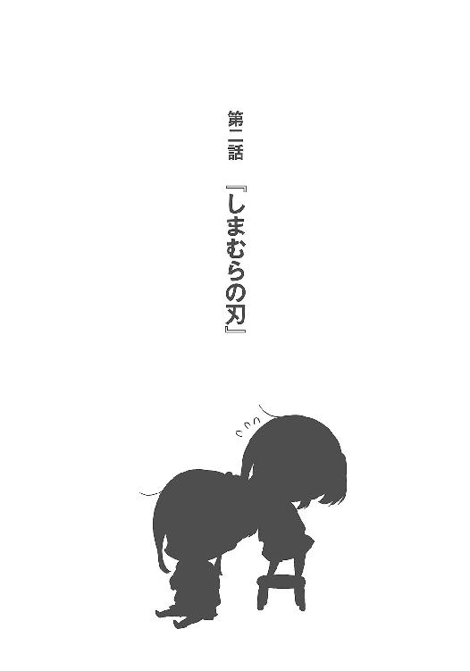
確かに電話は繫がっているはずなのに、声が遠い。意識も頭の中にいない。
耳の真横にもう一つ、球状の塊がくっついているようだった。
『今日はいつにも増して無口だね』
しまむらが困ったように笑う、そんな息づかいを感じる。
いつも通りだ。普段と変わらないしまむらの調子に、初めてこんな気持ちを覚える。
苛立っていた。胃の底が鉄鍋のように硬質となって熱い。
その怒りをぶつけることが理不尽だと理解はしていて、無理に押し留めようとすると余計に精神が均衡を崩す。今にも弾けそうなそれを抱え込みながら、私は、必死に言葉を探していた。
冷静に、理性的に、円滑にことが運んで知りたいことを教えてもらい、また一切の気まずさから解放されるような会話の糸口を。
そんな、あり得ないものを。
エアコンの冷気が丸まった背中を撫でる。
日は高く、入道雲は住処のように佇み、町と人を突き動かす。
『安達？ ほんとにどうしたの？』
どうしたのなんて、心配して。
どうしてと聞きたいのは、私の方だ。
「しまむら、」
あの夜に、しまむらの姿を見てしまってから八日後のことだった。
二度目の大きな祭りを通り越した翌日、私は。
放心とは、正にこのことだった。人間の身体に魂というものが縛りつけられているなら、その紐がだらしなく伸びて引きずっていることだろう。今もそうだ、抜け落ちていた。
しまむらが他の女の子と祭りに出かけていた。それを、屋台を挟んで目撃してしまった。多分、しまむらは私のことに気づいていなかっただろう。妹と、変な髪の色の子の手を取って、そしてもう一人。どこかで見たような、そんな女の子。親しげに、微笑ましそうにしまむらと一緒に歩いて。極めつけは、しまむらをこう呼んでいたこと。
『しまちゃん』と。
なんと、柔らかく自然に扱われるあだ名か。私は未だ『しまむら』と呼ばなければしっくりこないのに、その領域から一歩抜け出した女の子がしまむらの隣にいるというのは、もう本当に、頭を搔きむしりたくなるほどに狂おしい。今にも泣き喚きたい。
あの夜も屋台の番がなければ、走って追いかけていた。......いやそれは言い訳で、店番なんてなくてもきっと、足を止めて呆然として、なにもできなかっただろうと思う。
それぐらい衝撃的で、受け止めきれないものがあった。
学校の同級生じゃない。しまむらは部活もやっていない、バイトもしていない。
私の知るしまむらの生活圏から離れての交遊。
私の知らないしまむらを、意図せず見せつけられてしまった。
前にも似たようなことはあった。でもあのときの相手は永藤で、それでもすごく落ち込んで妬んで苦しんでときたのに、今度はそれを悠々越えるものが私を吞み込む。夏の不快を凝縮したような靄が内外から私を蝕む。いくら部屋を冷やしても湿気が離れないとしたらこんな気分にもなるのだろうか。他のなにもかもがどうでもよくなって、ただ、辛い。
脳と意識だけが、花火の輝きを忘れられないように覚醒していた。
身体が休まらず、どれだけ疲れても頭が眠ろうとしない。不眠症に近いものだった。
苦しみを嚙みしめる時間を飛ばすことも敵わず、延々、苛まれる。
時計の針を追いかけても気が滅入るので、いつの間にか見なくなっていた。
一日は昼と夜だけになり、生活も不規則に荒れて。身体が覚えていたのはバイトの時間ぐらいだった。時間になると自動的に起き上がり、雑務をこなして帰ってくる。意識散漫だとある種の無駄がなくなって仕事に関しては効率が上がるのは、どういうわけだろう。
私の一生懸命なんて、いつも空回りしているだけなのか。
ベッドに伏せている間も、机の上の携帯電話を何度も意識する。
なにか、連絡があるんじゃないかと期待していた。
特別ななにかがあってと、説明があるんじゃないかと頭の隅で信じていた。でも、しまむらからはなんの連絡もない。メールだってないし、カレンダーの向こうでなにが起きているか私に覗く権利はないとばかりだった。そんな日が、冴え渡る胃の痛みと共に五日過ぎた。
枕に顔を埋めながら、目の奥を熱くする。
少しぐらい、特別だと思っていた。
他の友達よりも気にかけてもらえていると、思い上がっていた。
だけどそれが全部、自信過剰に鼻を高くしていただけだと思い知らされる。
私は、しまむらの中で少しでも特別じゃなかったんだろうか。
勝手に期待して裏切られた、そんな身勝手な気持ちが先行する。そっちが連絡しないならこっちだって別にいい、と拗ねる。届くはずもなく、しまむらには覚えなんてあるはずもない逆恨みをぶつけて、意地を張る。電話も充電しないで無視して、なにも考えないで過ごした。
まだ一つも成し遂げていないやりたいこと表が、エアコンの風に揺れるばかり。
酷い夏休みと顔色だった。
「.............................................」
その意地が折れたのは、三日が経ってからだった。
しまむらに背を向けて、気にせず生きていくなんて、どだい私にはできないのだ。
そのことを自覚して、ついでにもう一つ。なんと薄いことか、としまむら抜きの自分の生活を嘆く。なにも起きない、特筆することがない。それこそこのまましまむらとの関わりを一切絶ったら、夏休みだって作文用紙一枚に纏められてしまうだろう。むしろ埋まるのか。
今の私にはしまむら以外、なにもないのだ。
皮の内側は骨と肉じゃない、しまむらである。
なのに、なのにと頭を搔きむしりそうになる。気を抜くだけで涙が滲んだ。
勝手に想っているだけなのは分かっている。けど、それでも。
報われたいって思うことが、そんなに間違っているだろうか。
寝すぎてぺしゃんこになった枕から顔を剝がして、机の隅に隠すように置かれた電話を引っ張り出す。
電池の残量も心許ないそれを起こして、着信履歴になにもないことを確かめる。
残っている古い日付と、しまむらの名前を見てそこを押そうと親指がさまよう。
行ったり、来たり。押してからも、びくりと後ろへ飛び跳ねる。
腰が引けたまま、しまむらとの接続を待つ。
『はい。もしもし安達』
あっさりと繫がって、そして今に至る。
挨拶を返すこともできないくらい、極まっていた。
独りで見上げた花火の音と光のもたらしたものが、未だ拭いきれない。
目の端がぼやけて、耳が詰まったように遠い。
「しまむら、私は」
あの子なんなの。なんなの。聞きたい、知りたい。どうして、と問い詰めたい。
気を抜けば、暴発しそうな危険物がごろごろしている。
だんだんだんと、右足が床を踏むことでなんとか散らそうと試みていた。
『......安達？ どこか遊びに行こうとかそういう話？』
しまむらに気持ちの一切が伝わらないことのもどかしさ、悔しさに喉を搔きむしりたくなるような衝動が湧く。行きたいけど、でもその前に、と頭に手を載せて腕で顔を締めつけるように抱く。絡みつく蛇のように顔を押さえて、口の中いっぱいに苦汁を滲ませる。
堪えていたものが舌を薙ぐように、その片鱗を表出させた。
「祭り、に行っていたよね」
引き返せない一歩を踏み出す。光の洪水に見舞われたように頭の中が白む。
視界が半分以上塞がって、目の焦点も合わなくなっていた。
「知らない、女の子と一緒にいて」
『......安達も来てたの？ なんだ、それならやっぱり誘えば』
「違うっ。私は、店番だったから。バイト先の、から揚げ、」
動悸に声が阻まれる。感情の水位が限界まで上がり、振れる度に外へ飛沫が散る。
途切れ途切れの思いがしまむらにどう届いたのか、一瞬、間が空いた。
『そうなんだ......から揚げの屋台、あーあった。あったね、ヤシロが釣られそうに』
「しまむら、知らない女の子と、一緒で」
同じ指摘を繰り返す。頭がどんどん単純に、真っ直ぐに、馬鹿になる。
子供がなにかを批難するように語彙が弱まり、ただ、泣きじゃくるように繰り返すしかない。
『うん、友達に誘われたから......それが、えぇと、なに？』
しまむらは悪びれず、ごく自然に認める。困惑は、私への態度に向けてだった。
悪びれない？ もちろんだ、しまむらは悪くない。
しまむらからすれば、しまむら本人はなにも悪いはずがない。
友達と遊んだだけでと思うかもしれない。
でも、私は。
言おうとして、言えなかったことが遂に、奥底のそれを引っ張り出してしまう。
「なにって......なんで？」
『え？』
「なんでなの、あの子はだれ？ なんであの子と行くの？ どうして教えてくれなかったの？ 確かにその子とは友達じゃないけど、私はしまむらのこと知りたいもの。しまむらのこと一番知りたいの、しまむらの側にいたいの、それも一番がいいし一番以外だと嫌なの。仲良くなりたいのにどうして？」
『ちょっと、安達、』
「私は！ しまむらが知らないとこで笑っているとか！ 嫌で、他の子と手を繫ぐのも！ 私だけがよくて！ 私と一緒にいてほしくて！ 祭りだって、行きたかったし！ しまむらが楽しそうにしていると、笑っていると、その側に私がいて！ そういうのがよくて！ 頭が痛いの、苦しいの！ しまむらのことばっかり考えて、どうかしそうに、なって......しまむらが電話してくれるのも待っているの！ たまには話してよ、私に話しかけてよ、私ばっかりじゃやだ、しまむらも、少しぐらい......少しは私のこと気にならない？ ちょっとも？ まったく？ なんでもないの？ 友達だけ？ 普通の友達なの？ 普通じゃなくなりたいの、普通より一個でもいいから、普通じゃないのが、いい......ねぇ、しまむら、どうすればいいかな、ねぇ。しまむら聞いてる？ 聞いて。私の声を聞いてなにか思う？ 思ってくれる？ 安心でもいいよなんでもいい、なにか思って。そういうのがほしい、そういうの求めちゃだめ？ しまむら！ しまむらなんだよぉ、私ね、しまむらがいいの。しまむら以外いらないし、いらない......しまむらだけでいいから。わがまま言ってないよ、一個だから、一個じゃん。みんななんてどうでもいいしいらないしあっちいっててほしいのになんでしまむらはそっちいくの、こっち来て、こっちに来て、側にいて、離れないで。嫌だ、しまむらの隣にいるのは私、私がいい、私がいたい、いさせて......だれあの子、私知らないよ。知らないしまむらになるのはやだ、しまむらのこと全部知っていたいし、知りたくないことあるのも嫌だし、でも知らないのはもっと嫌だし苦しいの。苦しい、痛い、痛い......しまむらぁ。しまむらと遊びに行こうって、言いたいのにお祭りだって行こうと思ってたんだよ、行きたいよ、でもしまむらあの子と行くの、遊んでいるの？ 今どこにいるのしまむら、誰かといるの、しまむら、しまむらぁ......ねぇ聞いてる？ さっきから私ばっかりだよ喋ってるの。いつものしまむらはもっと喋ってくれるよね、ねぇなんで？ いつもみたいじゃない？ 私おかしい？ おかしいよね、それは分かるんだよでも、知りたくて、しまむらのこと知りたくて、変になるの。しまむらと離れたくないのいつも一緒にいたいのどこでもいいの一緒ならどこでもいいから、しまむらと会ってないよ、会いたいよでも今会ったら泣きそうだし、泣いてるし、あの子とどうなんだろうなんなんだろうってそればかり気になっているしねぇ聞いてる？ 私と一緒にいるよりあの子の方がいいの？ 私だめ？ どこがだめ？ 直すから言ってよ、直す絶対に直すだからお願い教えて、聞きたいの。しまむらはね、私、しまむらだから......しまむらだからっていうのがあるの、他の人がしまむらそっくりでも関係ないのいるはずないけど、ねぇそういうのじゃなくて、しまむらじゃないとダメなの。だから仲良くなりたいのに、なんか......こういうのじゃなくてもっと違う話したいけど、気になって......だってしまむら、笑顔だったよ？ 私以外に笑うの、嫌だよ。嫌じゃない？ そうじゃない？ しまむらそういうのない？ しまむらって誰が好き？ 好きな人いる？ 好きになれる？ 好きってなにか分かる？ 時々ね、怖いの。しまむらはなんで隣にいてくれるんだろうって。しまむらと私ってそもそも友達だよね？ 友達ぐらいにはなっているよね。友達と思ってくれてる？ しまむらは、そういうの......うぅう、ぇえ、しまむら、声聞かせて。声聞きたい、私のこと話して。しまむらが一番、私のこと分かって......分かってほしい。分かりたいし分かってほしい。一番になってほしい、なりたいの。なって、でも......ちょっと嫌なことがあるとくじけそうで......だってしまむらは、なんか、私を大事にしている感じがないから......大事、大事って変だけど、でも大事にしてほしい。大事がいいの！ 他のと一緒にされるのやなの、本当に少しで、いいから......しまむら私のこと考えたことある？ 夏休みに、ずっと会ってないけど、一回ぐらいは考えてくれた？ 私ね、ずっと考えてた。しまむらのことしか考えてなかったよ。全部しまむら。だから、しまむらも！ 私のこと、けっこう、考えて......しまむらと私は違うよ？ 違うよね、分かってる、でも！ 期待はするし、しちゃうし、こうしてうらぎ、られても......しまむらに電話したいって思うの。でも電話したってこうなって、どうにもならなくて、どうすればいいかな。ねぇ、しまむら、しまむら？ 電話、繫がってるよね？ しまむらと繫がってるよね？ でも遠い、遠くて、会いたい。しまむらに直接会いたいの。笑ってほしいの、しまむらに頭を撫でてね、大丈夫って言ってほしいの。今どこにいるの？ どこ？ 誰かといる？ あの子？ あの子だれ？ さっきから何回も聞いたよね、答えられないような相手なの？ どんな仲？ 私より？ やだ、そんなのやだ、私よりなんて、やだって。やだ......違うって、違うって言って！ 私、しまむらのこといっぱい考えてるよ！ 足りない？ それじゃだめ？ もっと？ なにすればいい？ 分かんないし、いつも考えても失敗するし、どういう私がいいのか教えて、教えてくれたら、私がんばるよ。絶対がんばるよ、だから、そんな子ほんとは、どっちでもいい。私が会いたいしまむらはもっと、別で、私が変わればいいだけって、わかってるけど......しまむら、ねぇ、しまむら。今なに考えてる？ 私おかしい？ 私へん？ しまむらの話をして。しまむらから私に声をかけて、しまむらから近づいて。いつも私ばっかり、ばっかり、ばっかり......一方通行じゃあ、こうなっちゃうよ！ こういうふうになっちゃうから、しまむらもこっち、に来て。しまむらは私嫌い？ 違うよね？ やだよ、嫌いにならないで。嫌いいやだ。嫌いなのいやだ......好きに、好きになってほしい。だれか、好きになって。違うしまむらが好きに......嫌いなの？ お母さんみたいに私のこと嫌いなの？ 声かけなくなるの？ 知らない顔されるの？ 私なんて言えばいいの？ なにすればいいの、飛べばいいの、跳ねればいいの、手を繫げばいいの、みんなやろうとしてでもやったら見てなくて......どうすればよかったの。どうすれば、誰も......しまむら、声、聞きたい......なにか言って、安心させて、でも他の人に笑うのやだ、私に笑って、笑って......頭痛い、お腹も、痛い......気になってたのになんで連絡、してくれなかったの。私に教えてよ、私知りたいの。しまむらのこと知りたいの、さっきからなんか、もう、気持ちぐるぐるで......同じこと言ってるけど、仕方ないよ、仕方ないじゃん、しまむらのことしか考えてないんだから......しまむらのことだけだから、ずっと、しまむらになっても......しまむらが、大事で、大事にしたくて、大事じゃないとやで、だから、私を見て。しまむら、見てないとやだ......他の子、なんてやだぁ......やなの。また行くの？ どこか行くの？ 一緒に町行くの？ 私と遊んだとこに、他の子と！ そんなの、やだよ。上書きしないでよ！ 私、ずっと覚えてるのに、上書きされて......また行ったら、今度は違うの？ 同じとこ見て違うもの見るの？ そんなのやだ、やだ、やだ。しまむらと一緒に、一緒のもの、分けて、分かって......おかしいよそんなの。違うよね私おかしいの、おかしいの分かるよ、でもおかしくなって......しまむらのこと、頭から離れなくて......今も......しまむら、しまむら、しま、むら......うぇう、う、うううう、しまむら、しまむら......っほ、げ、うぅ......しまむらの、しまむら？ しまむら、しまむら、しまむら......しまむらがいい、私は、いいから、だからしまむらも......ねぇお願い、しまむら......しまむらも、しまむら......」
止まらなかった。自然と流れる涙が口に入らなかったら、いつまでも喋り続けていそうだった。坂を転げ落ちたらもう止まれない。上でしまむらが待っていたとしても、戻れない。
逆恨みだって、頭のどこかで諫める声を聞いた。
分かっている、ただの嫉妬だって。
そう私は嫉妬しているんだ。ヤキモチ妬いているんだ。
しまむらに怒るのはお門違いで、でもじゃあ、この気持ちをどこにぶつければいいのか。
整理のつかない混乱に陥り、むせび泣く。
だって、だってだって、だって。
『.............................................はぁ』
溜息が、聞こえた。
顔を静かに、縦に両断してくるような深々とした吐息。
そして。
『......めんどくさいなぁ......』
「.............................................え」
私の放った言葉の矢を容易くかいくぐり。
僅か、一閃。草でも刈り払うような、鋭利なしまむらの刃に気勢を削ぎ落とされる。
煮えたぎっていた頭が一転、季節を裏返されたように凍てつく。
雨のように汗が背中を伝った。
『いや安達がすごく面倒くさいこと言っていると。わたしはそう言ったの』
淡々と、いつもよりほんの少しだけ硬質な声が振るわれた。
汗が止まる。瞳孔が開ききっているのが目の端に見えるような、感覚の乖離がある。
あまりの痛みに神経を切り離してしまったように、自分が、思い通りにならない。
それから大きな溜息を残し、しまむらが電話を切る。遠慮もなく、あっさりと切って消える。しまむらの言うところの面倒事からさっさと逃げるように。
「......え」
電話を恐る恐る、耳から離す。
めんどくさいなぁ。
しまむらの声だけが、耳と、その奥に残る。
ぐらんぐらんと、部屋が、上下に揺れる。
頭は凝固して、なにも考えられない。
舌と目をだらしなく前へと突き出しながら、硬直する。
身の震えさえ通り越して。
死んだように、停止していた。
おまけ「ヤシロ来訪者その８」
「おやおやしょーさん、どこへ行くのです」
外に出て、蟬の鳴き声より先にヤチーの声が聞こえた。振り向く。
建物の輪郭まで歪みそうな暑さの中で、ヤチーだけが涼しげな水色を発していた。
「あ、ヤチーだー」
「しょーさーん」
ぺちぺちぺちぺち、とお互いの二の腕を叩く。暑いけどこれはいつもやる。
で、終わってから。
「プールだよ」
プールバッグを目の高さまで掲げると、ヤチーが首を傾げる。
「ぷーる？」
「え、知らないの？ プールっていうのは......水がいっぱいあってー」
いざ説明しようとすると案外難しい。お風呂はお風呂だし、プールはプールなのだ。
ちなみにヤチーはお風呂が嫌いなのか、入ろうとすると逃げる。そしていつも捕まえる。
一緒に入って洗ってあげていると、わたしもちょっとねーちゃん気分だ。
「たのしーですか？」
「うーん、うん。たのしー」
歯を見せるように、大きくしーする。ヤチーも真似するように、にかーっとした。
うちの学校はプールを開いている。といっても、お盆の前ぐらいまでだけど。
最近は日数が少なくなった、ってお母さんが言っていた。
「ヤチーこそ、お出かけ？ 散歩？」
水筒をぶら下げて、木の枝を編み込んだような細長い帽子をかぶっている。
合間に葉っぱの混じる不思議な帽子が、ヤチーの髪の色に似合っていた。
「ふふふ、そんな小さいことではないのですよ」
「散歩って小さいの？」
「わたしはこれからドーホーを探しに行くのです」
すっかり忘れていましたぞ、となぜかちょっと偉そうだった。
「とりあえず三百年ほど探すつもりでしたが、暑いので三日にしました」
「そ、そうなの」
ヤチーは数字の扱い方がてきとーすぎる。
「ではまた会いましょう」
てってこてってこ、とヤチーが遠くへ歩いていってしまう。
言いたいことだけ言って帰っていく、いつものヤチーだ。
「んーむ」
......旅行かな？ だってヤチー一人で出かけるなんて、お父さんたちが反対すると思うし。ヤチーの家族に会ったことないけど。家にも遊びに行ったことがない。
未だに知らないことばかりだ、と小指に巻かれたままの水色の髪を見る。
夜中に布団の中で見るとふんわり光っていて、見つめていると時間を忘れる。
いや時間だけじゃなくて、呼吸や、まばたきさえなくして、それでも平気でいるように思う。
小さな輝きなのに、わたしをアクアリウムの前へ導くようだった。
遅れて、熱気がわたしを包む。払うように歩き出す。
「三日かぁ」
最近は毎日会っていたから、三日も会えないなんてと思ってしまう。
いつの間にかすっかりと、ヤチーはわたしの隣にいるのだった。
で、で、で。
「おやおやしょーさん、今日もぷーるですか？」
また家の前でヤチーと会うのだった。
なんだか、ちょっと、ホッとする。
ぺちぺちぺちぺち。うんうん、ヤチーだ。
丁度三日後で、今日のヤチーはライオン柄のパジャマを着ていた。フードの部分が丸っこいライオンの顔になっていて、かぶると丁度、牙が頭に突き刺さっているように見える。というか、ヤチーが丸のみされているように見える。
「そうだけど、ヤチーは」
食べられているね。
「それ買ったの？」
「いえいただきました」
きょー、とヤチーが両手と右足を上げて威嚇してくる。なんか、ちょっと鳴き声が違うかも。
でもかわいい。
「ドーホーには会えませんでしたが、変な人に会ってこれを貰いました」
「変な人？」
ヤチーに言われるなんて、そーとーだぞ。
「頭がもこもこしている変な人です」
「もこもこ？」
「こう、もこもこーっと」
人差し指をくるくる回して膨らみを表現する。
あふろ？
「むむぅ、羊人間」
怖いけど、ちょっと会ってみたいかも。ヤチーに優しくしたなら悪い人じゃないだろうし。
そして悪い人じゃないけど、ヤチーの言うとおりに変な人かもしれない。
変な人と会うって言ったら、ねーちゃんが反対しそうだ。うむ、やめておこう。
でも羊人間がなんでライオンパジャマくれたんだろう。
「その、どーほー？ に会えなくて残念だったね」
「そうですねー」と、ヤチーが頷く。
「ドーホーは物を知らないやつなので、干からびていないか心配ですな」
ヤチーに言われるなんてそーとーだぞその二。
「けど会ったらウチューに帰らないといけないので、今はまだよしとしましょー」
「ふーん......」
最初はいい加減に聞き流しかける。でも途中で、え、と振り向く。
「えっ。え、そーなの？」
「そーですよ」
ウチューがどうとかはよく分かんないけど、ヤチーがいなくなるっていう感覚があって。
「じゃ、じゃー」
会えない方がいいじゃん、と本音はさすがに口にできないけれど腕をバタバタ振る。
ヤチーもなにを面白がってか、一緒にバタバタする。
いや全然、楽しくないから。
炎天下の中、プールバッグも地面に落として腕を振る。
汗が頭の中の真っ白を流すまで、大分時間が必要だった。
土砂崩れのような勢いで、積み重ねたものが崩れた。
違う、自然災害ではなく私が崩したのだ。爆発か崩壊か、それは花火のように一瞬の出来事として散った。私が間違っていたのは分かる。踏み込みすぎてしまむらが腰を引かせて逃げてしまったのも分かる。だけど他に、どうすればよかったのか。
だって私は、噓なんかついていない。
叫びも、行動も自らの内に潜むものばかりだった。
押しつければ摩擦が生じて思いもかけないことになると分かりながら、止められない。
私はさしずめ、汚い花火だ。
砕けた貝殻を拾っては溜息を吐くような、そんな毎日だった。
ベッドの上に足を伸ばして座り込みながら、重い息に沈むこと三日目。
失意からは段々と回復してきたけれど、後悔による胸のつかえは些かも変わらない。
あれから、しまむらの声を聞いていない。メールのやり取りもない。当然、しまむらから連絡を取ってくるはずもなく、電話は沈黙していた。握りしめながら、ベッドを転がる。
憂鬱が重力を増して、そのまま沈み続けていきそうだった。
考えてみれば、しまむらと喧嘩するのは初めてだった。
いや喧嘩だったのか？ 私はしまむらに見限られただけじゃないのか？
何度も巡る最悪の想像に慣れることはなく、身体を起こす。
嫌だ。それだけは、絶対に嫌だ。
吐き気を催すほどの拒否感に苛まれて、脳が悲鳴を上げる。
赤い線がちぎれながらも、発信するように頭から走り続けていた。
仲直りしないと。したい。また元通りの関係になりたい。
そのために電話、いやメール。やっぱり電話。一歩進んで、一歩下がって。停滞していた。
このままではダメだ、と分かっていた。
窓の外を雲が流れている。今年は少ないと言われた蟬も鳴いている。
私が蹲る間も時は流れていた。でも時間が解決してくれることは、悲しみとか、痛みとかで。
愛じゃない。
「......愛って」
思いがけず出てきた発想に、頰が熱くなる。愛って、大げさ......でもない？
誰かを痛切なほど尊く想い、その相手を知り尽くしたいと切望する。
それは大きな意味で愛と呼んで差し支えないと思う。
だから、私はしまむらを愛している。間違いなんかじゃない。
死ぬほど恥ずかしくなって逃げそうになる顔を正面に固定する。首がつりそうだ。
その愛（仮）が、このままではいけないと私を突き動かす。
とにかく動く。話をしてみないとどうにもならないし、だから、やっぱり電話だ。
決意の手汗で既に表面が滑っている電話を操作して、及び腰になりながらしまむらの番号を表示する。着信拒否とかされてしまったらどうしよう、と早くも怯えの虫が這い上がってくる。
そうなったとき、覚悟はあるか。諦められるのか。
傷を浅くしようと、たくさんの予防線が張り巡らされる。
その線を、蜘蛛の糸でも払うように引き裂いた。
未送信のままにしてある七十通近くのメールを肥やしとして、私は、ボタンを押す。
しまむらへ、手を伸ばす。
それを拒絶されて、払われることへの覚悟なんてない。上手くいく保証もない。
だけどやるしかないことがごまんとあるのが人生で、これもまたその一つだ。
私にとってしまむらは、高校二年生という人生を過ごすのに欠けてはならない存在なのだ。
電話は、繫がるのを待つ。私を焦らす。待って、待って待って『はいもしもし』
「おぉおおお」
思わず目と唇を震わせて、露わにしてはならない動揺を表に出す。
胸が痛む。握り潰されるような激痛を味わい、ベッドに蹲る。
しまむらの声に胸をかき乱されるようなことは珍しくない。でも、今回は趣が異なる。
恐怖が勝っていた。中指が付け根から痺れて、毒にでもあてられているようだった。
『もしもーし、桜ちゃーん』
しまむらの声に、嫌悪や敵意はない。遠回りすることなく、一直線に繫がっている。
まずはそこに微かな安堵を抱きながら、その声に応えた。
「し、しまむら......さん」
『え？ なに急に畏まってるの』
大人の顔色を窺って縮こまる子供みたいになってしまった。
当たらずとも、遠からずか。
「あ、じゃあ......しまむらで」
『じゃあの意味がよく分からないけど......それで、どうかした？』
どうかしたもなにも、ものすごくどうかしてしまったから悩んで、苦しんでいたのだ。
でもしまむらにとっては、三日も経てば気に留めるような問題ではなくなってしまうのか。認識のズレを感じて、寂寥を抱く。同時に、それならいけるのかもと光明も見出す。
話す前に正座し直す。胸の締め付けは少し和らぎ、僅かながらの空洞を得る。
声と意思が弾むだけのスペースは、確保されていた。
躍動せよと、己に命じる。
「しまむら」
『なぁに？』
本当この間のはなんだったの私だって言いたいこといっぱいあるし不安はまだ山ほど積まれているし全部説明してほしいのその飄々とした態度にこっちも身勝手だけど怒るときはあるし不安にさせないでよって叫びたい縋りたい泣きたい気を抜くと顔が崩れてむせび泣きそうになってだからしまむらを怒りたいもっと知りたい教えてほしいようするにつまり。
「どこか遊びに、行きたいなって」
ぐるぐるぐるぐる、激しく葛藤しても出てくるのはそれだった。
私は経験がないので憶測みたいになってしまうけれど。
母親にどこか連れて行ってとねだるような。そんな調子になってしまった気がした。
答えを待って、電話を握りしめる。手に汗どころか、全身汗まみれだ。
『うん、いいけど』
そんな私と対照的に、しまむらの声は涼やかで。
扇風機が風を残し、首を振って離れていくように、あっさり受諾する。
......あれえ？
とんとん拍子にことが進んでしまって、逆に不気味さを感じる。
この間のことが、まるでなかったことにされているみたいで。頭が空回りする。
『今日行くの？』
「え、うん、あ、やっぱり明日、にしよう」
少しでも早く会いたい、けれど今のまま会っても落ち着かず、醜態を晒しそうだった。
いつも十分に晒しているじゃないかと遠くから声が聞こえたけれど、無視する。
『ふむふむ明日。どこ行くとか予定ある？』
あるある、とやりたいこと表を手に取る。遂に本番だぞお前、と鼻息を荒らげた。
「えぇと、買い物して」
『うん』
「その後は......プール行って」
『うん？』
「しまむらの家に泊まる。......泊まりたい」
やりたいこと表を上から順に読み上げる。あ、盛り上がって手を繫ぐのを忘れている。
まぁそれはこの流れの中で実現する、と思う。してみせる。
『なんか具体的なような、棒読みのような』
的確な感想だった。事前に決めていたことを読み上げただけだから、どちらも正しい。
だけど捧げている熱量は決して、淡々としたものではない。
『プールはいいけど、また泊まるの？ 二階の部屋、エアコンないから暑いよ』
「大丈夫、大丈夫だよ。私、暑さに強い方だから」
適当なことを口走る。そうだったのか？ と自分に尋ねたいぐらいだ。
『えー、体育館であっついあっついって言ってたような』
「あ......せ、成長したから。一年で、がっつり。その成果をしまむらに見せたいなー」
なー、なーなー。えへうふへと終いには笑って取り繕おうとする。
『はぁ。まー確かに、安達は顔がよく赤くなっているから平気なのかも』
どんな納得の仕方だ、と発言の真偽を図りかねる。その話通り、すぐにでも赤くなりそうだ。
そんなこんながありながらも泊まることを許可してくれて、向き合うやりたいこと表の実現に安堵する。最初からつまずいていては話にならない。いや実際、けつまずいたと思うのだけど......なぜか、上手い流れに乗ってしまっていた。
それから待ち合わせ場所と時間を決めて、しまむらが電話を切る雰囲気が伝わってくる。
『それじゃあ、明日ね』
「うん。......あの、しまむら」
離れそうになるしまむらの声に縋る。
『んー？』
声が耳元に戻ってきた。
「声が聞けて、あ、話せて、嬉しかった」
こんなこと伝えて、また距離を置かれないだろうか。
そういう不安はあって、でも、伝えずにはいられなかった。
『それはなにより』
そう笑って、しまむらから電話を切る。性格的に切れないので、助かった。
でも声が聞こえなくなるのは、いかにも悲しい。
電話が終わってからもしばらくそのまま、腕の位置を固定して動けなかった。
上手くいったかどうか、確証がなかったから。
実にあっさりと解決してしまって、手応えがない。喧嘩するのも早ければ、解決もあっという間だ。悩むだけでなにもしていない。普通、仲直りに一つぐらいアクションが挟まりそうなものなのにその過程が丸ごと抜け落ちているような気さえした。
雑談の話題が、次へ移っただけのようなお手軽さ。
薄っぺらくて、信用の置き場がない。
これで本当にどうにかなっているのか、と思わず電話を振る。
「なんだろう、なにか」
釈然としない。なにかを見落としているような、この抜け落ちた感覚。
空白で提出したのに減点されていないテスト用紙を眺めているようで。
いくら頭を捻っても、違和感の正体が見えてこない。
「......あ」
お祭りのことを、具体的に約束するのを忘れた。
やりたいこと表に後半付け足されたそれを見て気づく。でもこれが違和感の原因ではないみたいで、その後も喉に引っかかるものがあった。
でもそこにいつまでも悩んでいる時間はないので、頭を切り換える。
分かることだけに専心する。
今分かるのは明日、しまむらとプールに行くということ。
それならば水着を買いに行こうとすぐに走り出す。
財布も忘れて駆け出す自分の細胞が、瑞々しく精気に濡れていくのを感じ取る。
しまむらに、命を注ぎ込まれる。
そんなのばっかりだな私と、ようやく気づいた。
物を貰って喜ばない人は多くない。
相手に好かれたい、いい気分になってもらいたい。
そういう気持ちを形にするのが、贈り物だから。
しかしだからといってこの選択が正しかった、ということになるのだろうか。
少し肩を揺らすだけで刺激の混じった香りが鼻をつく。
花束を抱えて、待ち合わせ場所のモールの入り口に立っていた。
電話して、翌日のことだった。
「.............................................」
色々と悩んで迷走した結果、花束に落ち着いた。
見つめるだけで、背中に嫌な汗が浮かぶ。
友達と遊びに行くときに色とりどりの花を贈るなんて、大げさだろうか。いや考えるまでもなく間違いなく過剰だ。落ち着けばそれぐらいは判断できるのに、いざ迷いの嵐の中で戸惑っているときは自分でも驚くほどわけの分からない方向に突っ切ってしまう。
迷っていたのだから道を間違えてもしょうがない、と一瞬考えたけど毎回大きく外れるのはさすがに問題あると思う。良識という名の方向感覚に難があった。
夏休みだからか、駐車場は満杯で自転車も溢れるように停まっている。家族連れと学生らしき集団が出て入ってと交差する入り口の脇で、独り花束を抱いて立つ私は傍から見ると、有名人の出待ちでもしているみたいだろうか。似たようなものかもしれない。
自分で買った花束にじりじり追い詰められる一方で、別の不安も水増しされていく。
しまむらはどんな顔をしてやってくるだろう。
電話越しではいつも通りだった。でも、と不安で胸の表面ががりがりと削られていく。
怒っていないだろうか。冷たい態度ですげなくされないだろうか。
不安だった。私に非があるというなら誠心誠意謝ればいい。でも今回はそういうのともまた違って、価値観とか見解の相違に触れていると思う。そういう場合、解決法なんてあるのか。
しまむらが来るであろう駐車場の端を見つめながら、解決していることを祈るしかなかった。
駐車場の間に植えられた木々は、それぞれが楽器であるように蟬の鳴き声を奏でる。猛暑日が続いて、風は止み、停滞した熱気の中で蟬だけが夏をかき回す。唇の裏側が乾いていた。
しまむらはなかなかやってこない。当たり前だ、私が早く着きすぎたのだ。
いつものことだけど、今日は不安が背中を後押しした結果だ。
喜びは、待っているだろうか。
花の香りに癒やされることなく、時間が過ぎる。しまむらが来るまであと三十分はある、と電話で時間を確認していると誰かがこちらに手を振っているのが見えた。電話から目を離して、思わず仰け反りそうになる。いつも使っている鞄に加えてもう一つ、バッグを担いだしまむらが姿を見せていた。早い、待ち合わせまでえぇと、そう三十分だ。なのに、もう来た。
しまむらはなぜこうも、私をドキドキさせるんだろう。色々な意味で。
距離は開いていても目が合った瞬間、胃が引き締まる。肩が強ばる。
分かりやすく緊張して、まばたきを失ったまましまむらを待った。
「やー」
「......っす」
緩く手を上げるしまむらと対照的に、私の頷きは重い。
早くも緊張した肩ががちがちに固まってきていた。
側まで来た後、上げていた手を傾けて、しまむらが花束を指差す。
「なにそれ」
「え、あ......ど、どうぞ」
花束を差し出す。しまむらが目を丸くしながら、その腕に花を抱く。
迷って頭をふらつかせる私より、ずっと似合っていた。......ほんと似合う、と見つめる。
「なにこれ」
聞かれても困る。分かっていても、結果はこの花束しかない。
「お祝いされるようなことしたかな。二千本安打、ギャンブル船からの生還......うーん」
「な、仲直り記念......に、どうかなと」
ようやく、それらしい逃げ道を見つける。しまむらは、花畑の向こうで小首を傾げる。
「仲直り？」
「え？」
その芳しくない反応に、前屈みになりながら嫌な汗を噴かす。
まさかまだなんにも許していないのでは、と固唾を吞んで静観していると、「あ」としまむらが思い当たったように声をあげる。私を見て若干、気まずそうに目を細める。
「あー......うん。確かに少し喧嘩っぽかったな」
自覚がなかったらしい。その良し悪しを考察する間もなく。
「じゃあこれで仲直りね」
花束を軽く持ち上げて、しまむらが言う。
「うん」と、大きく頷くしかなかった。
あっさりだ。生野菜のサラダでも頰張って終わるような、爽やかというより、味気なさ。
「花束って貰ったの初めてかも」
「そ、そう？」
「普通に暮らしていたら、貰う機会ってあんまりないと思うけど」
確かにそうだ。私だって貰った覚えがない。
しまむらの初めてかぁ、と意識に応じて目の端が輝く。
「部活のちょっとした引退式は、ジュース一本だったし」
しまむらが、花束を支える包装紙を軽く叩く。
「あ、そうなんだ......」
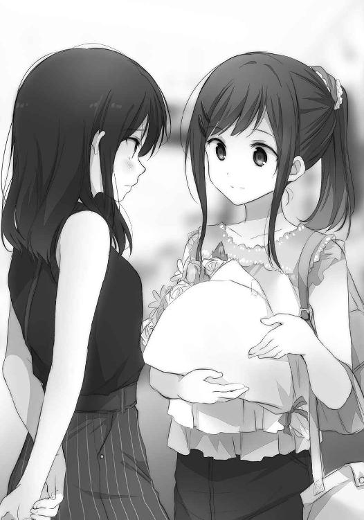
「ていうか安達汗だらけじゃん。中で待っていれば涼しいのに」
使う？ とハンドタオルを見せてくる。受け取った後、握りしめたまま。
「し、」
「しまむらが、はい」
筒抜けになっている！ そんなにいつも同じところで言葉がつんのめっているのか。
「しまむらと、早く、会いたかったから」
言いながら、耳が痒くなるほど熱を帯びるのを自覚する。まだ熱くなれるのか、と驚く。
俯きながら上目遣いでしまむらの反応を窺うと、
「早くって、入り口とほとんど変わらないけど」
「一歩でも、」
しまむらの言葉を遮るように、肩を持ち上げながら吐露する。
「一歩でも......」
早く、会いたかった。言葉がぐるぐるとして、その続きを語ることができない。
あうあうあうあうあう、と唇がわななくばかりだった。
そうしてしまむらを直視できないでいると、すっと、しまむらが私を覗いてくる。驚いているとしまむらが渡したタオルを回収して、私の額を拭ってくれる。また驚いて馬鹿みたいに口を開けたまま固まっていると、首筋の汗も拭き取ってくれた。声だけじゃなく、目も回る。
顔色と相まって、熱中症にでもなっていないか心配されかねない状況だと思う。
「そ、そういえば今日、来るの早いね」
それに輪をかけて早い自分のことは棚に上げて言ってみる。
「ああ、安達が早く来ているだろうなぁと思って」
しまむらがさらりと、また私の行動を読んでくる。大当たりだけど。
理解されているというほど深くはなく、表面を撫でられているだけにしか思えない。
だから、心の底から震えるほど嬉しくはない。それなりに、けっこう、ぐらい。
「汗拭けたよ」
「う、ううん」
頷きながら、ばたばたばた、とニワトリみたいに慌ただしくしまむらの隣に並ぶ。それだけで私がなにをしようとしているのか察したらしく、「はい」と右手を差し出してきた。
私はそんなに進歩ないだろうか。頭の奥まで熱くしながらも、その手を取る。
何日ぶりにしまむらに触れただろう。そう思うと、胸が渦巻くようだった。
「妹もこれぐらい素直ならね」
「え？」
「なんでもない」
しまむらが、前を向く。
花束を胸に抱き寄せたまま私と手を繫ぐしまむらは、妙に絵になって。
目が、離せなくなる。
「なにこれ」
自分の状況を見下ろすように確かめて、さっきと同じ疑問をしまむらが口にする。
もっさもっさ、花束が揺れる。
それでもしまむらが状況を楽しむように目もとを緩ませてくれて、安堵する。
今ここにないやりたいこと表を握りしめるように、拳を硬くした。
買い物へ向かう前に、しまむらの家に一旦戻ることになった。
花が悪くなる前に、花瓶に挿しておこうという話になったからだ。
「せっかく貰ったし、枯らしたら勿体ないから。あと持っていると正直歩きづらい」
「う」
「大丈夫。時間はいっぱいあるから」
私の心配を見越すように、しまむらが笑う。思わず下唇が弛緩する。
しまむらが、私に笑ってくれた。
夏の異様な暑さを通り越して、暖かい。暖かいと熱いは別枠で感じられるのか、と人間の不思議を初めて知った。
しまむらを後ろに乗せて自転車をこぎ、しまむらの家へと向かった。
その間に流れる汗さえ時々、涼やかなものが混じるようだった。
「あ、もう帰ってきた」
玄関で、靴を磨いているしまむら母が出迎える。
前にもこんなことがあった気がする。会釈して、しまむらの後ろに続く。
「あらいらっしゃい」
「またすぐ行くよ。花貰ったから置きに来ただけ」
「貰ったって誰によ」
しまむらが顎の動きで私を指し示す。しまむら母と目が合って、逃げそうになる。
「あんた今日誕生日だったっけ？」
「うん実はそうなの。だからお祝い頂戴」
しまむらが手のひらを上にして差し出すと、しまむら母が「がぶ」中指に嚙みついた。
「ぎゃっ」としまむらが手を慌てて引っ込めている間に、「けけけ」としまむら母が中腰で逃げ去っていった。その動きがいやに機敏で、普段からこんなことしているのかなと想像させるには十分な後ろ姿だった。嚙まれたしまむらはバツが悪そうに私を見ながら、頭を搔いている。
「あ、えっと。仲いいよね、お母さんと」
「えー、そう？ 普通未満だと思うよ」
角張った声でしまむらが反論する。そうしている間に、しまむら母が戻ってきた。
雑巾の代わりに手にしているのは、つる首の青い花瓶だった。
「はい花瓶。水も入れておいたから」
「見れば分かるよ。......ありがとう」
しまむらが花瓶を受け取って、玄関棚の上に載せる。
「あ、それと安達が今日泊まるから」
「ふむん」
しまむら母が私を見る。小さく顎を引くと、にんまりとした。
「抱月の勉強でも見てくれるの？」
「え......」
どうなのかな、としまむらに目が逃げる。
しまむら母の中で、私は多少誤解されているんじゃないのか。
「わたし最近、まぁまぁまじめなつもりだけど？」
唇を尖らせているしまむらの横顔を見て、「ははは、ガキよのぅ」と言い放ったしまむら母が笑い飛ばして去って行く。しまむらはますます面白くなさそうにしながらも、束を解いて花を花瓶の隣に並べた。
ほへ、といなくなったしまむら母に形容しがたい念を抱く。
しまむらが子供っぽさを見せるあたり、やっぱりしまむらのお母さんなんだなぁと感じる。
母には子供の姿を。妹には姉の姿を。じゃあ、私にはどんな姿を見せてくれるだろう。
「まぁいいや。とにかく花をパパッとやっちゃうから」
「ん」
しまむらが花を花瓶に挿すのを横で見守る。それから、先程から感じている視線の方向を一瞥する。
しまむら妹が廊下の奥からこちらを覗いている。友好的とは解釈できない視線を頂戴して、首が縮む。暗がりから外を覗く小動物のようなあの雰囲気、どこかで感じた覚えがある。
主に、鏡の前とかで。
覗く頭に後ろから水色が追加された。派手な髪が、しまむら妹の頭に乗りかかる。
「こらー。ヤチーは目立つからだめー」
しまむら妹が水色の女の子を押し返そうとして、女の子の方もしまむら妹にひっつこうとしてお互いの顔がぐにょーっとなる。そのまま一進一退して......遊んでいるのかな？
「いつの間にか妹が変なのと仲良くなっちゃってさ」
作業を続けながら、しまむらが妹たちの様子を眺める。その目が泳いで、私を捉えた。
じぃっと見つめられて、固まっていると。
「わたしもか」
淡々と一言残して、しまむらがまた花瓶に向く。
その呟きの意味を一歩遅れるように理解して、えぇぇ、と目を白黒させる。
私って、しまむらから見て変なのか。変人枠なのか。そんな、いや、そこは少し譲って受け入れるとしても、あんな髪の色の子と同じぐらいなのかと驚愕に引っ張られて目をやる。
しまむら妹の顔に頰ずりしていた。柔らかい頰が上下にこねくり回されている。しまむら妹も満更でもないのか、耳を赤くしながら頰を盛り上げていた。暑いのによくやる、と思ったけどたとえば私がしまむらに頰ずりしていいとなったら、真夏だろうとやってしまうだろう。......ん？ そうじゃない、そうじゃないな。あれ、なんの話だった？
「はい終わり。安達、花ありがとうね」
花を挿し終えて、包んでいた紙を折り畳みながらしまむらが礼を言ってくる。
それだけで舞い上がりそうになりながら、冷静な態度を装うとする。
「ん、いいのいい、うんいいの。しまむらが喜んでくれたらそれで」
......私にしては、まぁ、そこそこ平静を保てていたんじゃないだろうか。
「まずは買い物だっけ？」
「あ、うん。それは別に後でも、先にプールでも」
いいよ、と水着の入った鞄を目の高さに掲げる。その鞄を回り込むように首を伸ばして、しまむらが私を見る。
「安達って、プール大好きなの？ こだわりありそうだけど」
「え、うん、いや暑いし、涼しいの、好きだし？」
別にしまむらの水着にこだわっているとか、そういうのじゃないよと手を横に振る。
こんなこと口にしたら余計に疑われるということぐらいは、私も分かっているみたいだ。
当たり前だろ。
「体育の授業は全部仮病使っていたのに」
「......それは、また別で」
しまむらと一緒に行くことに、大きな意味がある。
話しながら、扉を開ける。夏に満たされた屋外へ、しまむらが先に出て。
「じゃあ......」照りつける太陽を睨みながら、「プールにしようか」
「うん」
頭の中にもあるやりたいこと表に、ぺたりとシールが貼られる。
「どこのプールに行くの？」
「えっと......しまむらは行きたいとこある？」
色々と調べてはあるけど、しまむらの意見も伺っておきたい。
「行きたいとこというか、屋内でいいなら一つ知っているけど......」
なぜかそこで私の顔を見て、「あ」と眉を寄せる。
「まずいか？ まずいかも。いいのかな」
なんの話だろう。なんにしても顔を見られたまま、まずいの連呼にはいい印象を抱かない。
「私は、しまむらとならどこでもいい、けど」
「いやそうじゃなくてね。んー......ま、いいか」
近いし、安いし、と理由を二言重ねる。
「どこでもいいんだもんね」
しまむらが念を押すように私の言葉を取り、にこっとする。
なにがそんなにまずいのかな、と気になる口を作り笑顔で閉じさせる。
しまむら怖い。
そういう流れで、しまむら推薦のプールに向かうことになった。私の自転車にまた、しまむらが乗る。肩にしまむらの重みを感じることに喜ばしさを覚えながら、ペダルを踏みしめる。
「.............................................」
何事もないように、自転車が走る。
夏の日の下を、しまむらと共に行く。一見、なにもかも元通りに。
だけど聞きたいこと、気になっていることはたくさん残っていた。
一緒にいたあの女の子は誰、とか。
......いや。たくさんというか、遠回りや近道はあっても全部、そこに行き着いてしまう。
確かめたい。はっきりさせたい。それがどんな答えでも、知った上で決めていきたい。
だけど熱を入れすぎて問い詰める形になって、また拒絶されたら今度こそ、どうにもならない気がする。私としまむらは未だ地続きじゃなくて、なんというか......川に流れている葉っぱが、たまたま重なっているだけという繫がりで。それが長く続いて一緒に流れているのは確かだけど、ふとしたきっかけがあれば、少し流れが変わり、風が吹けば離れていくような。
そんな、安心を覚えられない関係だった。
だからこそ今、肩にかかるしまむらの手に愛おしささえ覚えるのだと思う。
束の間の重力が、私としまむらを繫げる。
しまむらに道案内されて着いた先は、スポーツジムだった。
青と白で構成された、いかにも爽やかな配色の看板が出迎える。駐車場は道路を挟んだもう一つも含めていっぱいだ。車の表面に照り返す太陽光が、どこを向いても目に入り込む。
「母親がここ通っていてさ」
「そうなんだ」
籠から鞄を下ろしたしまむらが一瞬固まった後、もう一回、私を見る。
「母親がさ」
なぜか二度言った。意図を摑めず目を震わせていると、「いこっか」としまむらが笑った。
見ているだけで、緊張と高揚の混ざった血が手の甲を巡る。
じくじく来ていた。
しまむらの話では、会員特典で安く買えるプール利用券を母親から貰っているらしい。利用客がそんなに多くないから、こっちの方がいいという話でもあった。確かに、この時期にこの天候で屋外プールを求めたら混雑なんてものじゃないだろう。そう考えると、よかったのかも。
二人で受け付けを通り、右側に回った先に更衣室があると指示される。
回ったすぐ先で、ガラスの向こうにプールの様子が見えた。灯りがなく、程良い薄暗さを保つ空間で老人の泳いでいる姿があった。奥の壁際では結構な数の人が歩いている。年配や中年ばかりで、若い人はあまり見られないようだった。考えてみれば夏休みだけど平日ではあるし、普通の大人は働いているのだからいなくて当然だ。きっと夜に来るのだろう。
「奥にサウナもあるよ。プールの券だと入っちゃダメだったはずだけど」
そうなんだー、と興味が湧かないのでなぁなぁで頷く。
わざわざサウナに入らなくても、外を歩いていればすぐに汗まみれだ。
自販機の前でしまむらが立ち止まる。なにか買うのかなと思って足を止めると。
「サウナもあるよ」
なぜかさっきから二度言ってくる。どうしたんだ、しまむら。
今日はいつもより二割増しに奇妙だった。
そうして更衣室に入り、ロッカーを眺めて歩きながら、頭部に響く一つの事実。
ひたひたと迫るように追ってきたそれが前へ進むごとに硬化して、壁のように立ち塞がる。
しまむらと一緒に着替えるのか。
なんの問題もないはずのそれに、妙な意識を持ちそうになる。いや勿論、しまむらの裸に興味あるかといえば、ない。そういうのではないし、私。でもなんだろう、目を留めることのできない気恥ずかしさのようなものは確かにあった。悶える身体の正体が摑めない。
渡された鍵は、番号を一つ挟むだけでほとんど隣同士だった。これでは、もう、隠しようがない。なにを？ お互いに。だからなにを、とロッカーの鍵を回す手がおぼつかない。
鞄を置いたしまむらの姿を、横目で捉えている私はなんなのだろう。
この情動めいた鼓動の源泉には、一体なにが潜むのか。
煩悩を哲学的な問いで有耶無耶にしようと試みる。できていない、と心臓が跳ねる。
しまむらが服を下ろす。そして、水着を見せる。
「......」
あらかじめ、服の下に着ていたらしい。学校指定の水着だった。
「..........................................................................................」
しまむらが、帽子をかぶりながら私に目を向ける。
「どしたの？」
「ううん......」
頭を振る。強く振る。なにを否定しているのか敢えて漫然とさせたまま、振った。
「あ、水着着てくるの小学生っぽいとか思った？」
水着の肩紐の位置を直しながら、しまむらが曖昧に笑う。
「いやそういうの......かも。ちょっと思った」
ということにしておく。
いやぁははは、としまむらが珍しく照れたように目を逸らす。
「こっちの方が楽だから癖みたいになってて」
「あはは......」
はは。
しかし、学校の水着とは意外というか、私そうじゃないんだけどというか。
ゴーグルを帽子の上に重ねたしまむらが私を待っている。しかもなぜか腕組みしている。しまむらの目の前で服を脱ぐのか、と今度は別の動揺に襲いかかられる。しまむらの、前で、服を。思考が小刻みに分断されて、雲に頭でも突っ込んだように熱の靄が顔を包む。
服の端を摑んだまま、しばし硬直する。
いやいやいや。
なにも気にする必要はない、ないんだと勢い任せに服を脱ぎ、下着に手をかける。
車輪が線路と擦れて火花を散らすような、そんな情景が思い浮かぶ。
脳が研磨されていた。
「ふむ」
びくっとなる。
しまむらの短い反応が気になりながら、下着を下ろす。ばばばっと、鞄から水着を出す。
先に出しておけばよかった、と手際の悪さに目が回る。
「ほーぅ」
気になる。頭が真っ白になりながら水着を引っ張り上げる。
「おぉー」
開花でもするように、頭のてっぺんに刺激が集う。
気にしないのも無理がきて、堂々としまむらへと振り向く。
しまむらは扇風機の方を見て唸っていた。
首振り機能に合わせて、左右へ行ったり来たりしている。
「.............................................」
手で顔を覆う。分からない、しまむらが分からないと静かに嘆く。
なんかちょっと永藤に見えてきた。
「あ、着替え終わった？」
「......うん」
「お、学校の水着じゃないんだ」
「うん......」
先程覗いたプールの空気的に、わざわざ水着を買ってきた私の方が浮いている。多分。ワンピース型の青い水着で幸い、しまむらの着ているそれと比較しても極端に目立たないのは、私の中で小さな救いだった。
「かわいいじゃん」
しまむらが前屈みになって覗き込み、軽快な調子で褒めてきた。
かわいいというのは私と水着、どっちだろう。聞くと、どっちかなぁと意地悪を返されそうで尻込みする。でもとにかく褒められたのだから、悪い気にはならないでおこうと思う。
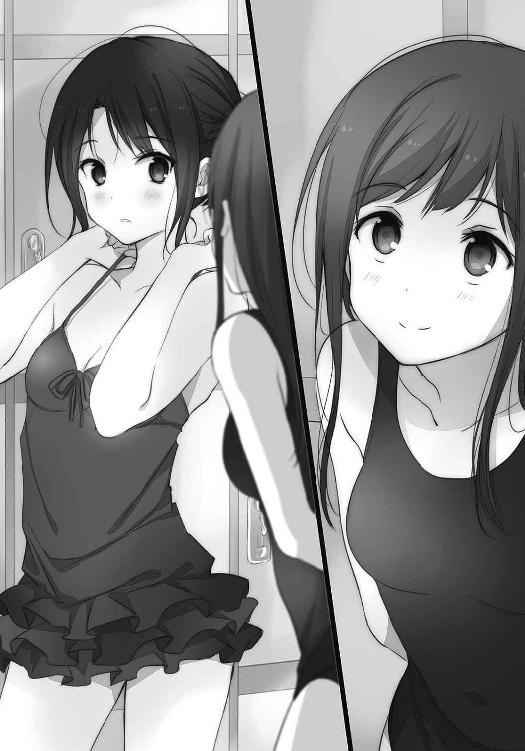
ちらり。
足もとを濡らす消毒水がそのイメージに反して生温い。天井にくっついたシャワーから水が流れてくることはなく、代わりに出口から鼻の内側をこそぐような匂いがむわりと漂ってくる。塩素の匂いだ、と気づくのに時間が必要なほど久しぶりだった。ちら。
プールサイドに出る。すぐに鼻も塩素の匂いに慣れて、気にならなくなっていた。
プールは全六コースに区切られていて、私たちは手前の６というコースだけ使用できるらしい。別のコースでは大人たちが黙々と泳いでいた。はしゃぐ雰囲気じゃない。そもそも、しまむらと一緒に私がはしゃぐなんて想像つかない。ちら。
奥の歩行用コースを歩く人たちが、私たちに目を向けている。多分、この年頃でこんな場所に来るのは珍しいことなんだろう。しまむらはひょっとすると来慣れているのか、周りの視線を意に介していない。ただプールから離れた奥の方を覗いて、目が動いていた。
「誰か探してるの？」
まさか、あの祭りのときにいた女の子。勝手に想像して、胃の底を焼き焦がす。
ちら。
「え、んー......あははは」
聞かれたしまむらがごまかすように頰を搔く。気になるところで、ちらり。
「......ん？」
ふとその事実に気づいて、愕然としつつも意識して目の動きを追ってみる。
歩く。ちら。少し遅れて歩く。ちら。やっぱりそうだ、と血の気が引いた。
しまむらのお尻にばかり目が行っている自分に気づく。いや露骨にじぃっと長々見るわけじゃなくて、ちらりちらりと合間に目を走らせている自分がいて、じわぁっと頰がお湯にでも浸ったように温度を変える。引いたり上ったりと血の気が忙しい。潮の満ち引きより急激だ。
水着とお尻の境目に、特に注目してしまっている。なんで、と自分のことながら疑問が尽きない。頰と頭が燃料をくべたように熱くなる。汗が浮き出て、冷やさないとと目をやれば隣にはプール。落ちるような感覚で傾いて入水する。柔らかい水の壁を破ってプールの底に沈み、上を向く。ゴーグルもかけていなくて塩素で濁ってはいるけど、水の天井が見えた。
頭が冷えるまで、その天井と向き合っていようと息を吐く。空気を捨てて沈んでいくと、水の柱が上がって天井が揺れる。ゴーグルをつけたしまむらも潜ってきた。同じく泡を吐きながら、大の字に寝るように沈む私の側へ屈んでくる。その前屈みのしまむらの、水着と脇近くの境目に目が向く。凝視してしまう。なぜさっきからそんなところばかり、と空気を過剰に排出して息苦しくなり、慌てて浮上する。水面に顔を出した後、少し噎せているとしまむらも浮き上がってきた。
「なんか、早速楽しんでるみたい」
「えうんまぁ」
鼻から水を垂らしつつ、えへ、えへへと顔を引きつらせてごまかす。
プールというのは、しまむらと来ると案外危険かもしれない。惑わされる。
呼吸が落ち着いた後、手で顔を拭う。ようやくプールの水の冷たさを感じてきた。
肩まで浸ってみて、さて、と目が先行して泳ぐ。
なにをしよう。他のコースみたいに一生懸命泳いで身体を鍛える気にならない。
「気持ちいいねぇ、いやぁいい」
しまむらは暑さから逃れるだけでご満悦らしく、顎が触れるほど沈みながらうろうろとしている。ワニみたいでなんだかかわいい。いやワニがかわいいかはさておいて。
「あぁそうだ」と、そのしまむらが私に寄ってくる。顔と手が水面近くを滑るようにして、蛙みたいだ。待っていると、しまむらの手が、私の頭に載る。撫でるように、微かに上下する。
「この間は言いすぎた。ごめんね」
子供をあやすように謝られる。その扱いに多少の疑問を感じないこともないけれど、それはいいとして急に謝られると、どう対応していいものかと慌ててしまう。
「あ、ううん、しまむらの謝ることじゃ、ないし」
「うん、別にいいとか悪いとかじゃないんだけどね」
なんというか、しまむららしい返事だった。喜怒哀楽が四季のようであるなら、しまむらの声はそうした季節を感じさせない。温度は一定で、風も穏やか。過ごしやすく、だけど。
「でもあれもわたしの本音の一つなんだ、噓じゃないから」
つい言っちゃったとか、売り言葉に買い言葉でとか。そういう言い訳をしないしまむらの潔さに少し救われる。本心をごまかされるよりも、ずっと真摯に接してくれていると思うからだ。
しまむらはお姉ちゃんどころかまるで母みたいに、私の頭をひとしきり撫でる。
帽子越しであるのが惜しいくらいだった。揺らめく水と共に、安らいでいると。
「でね、安達」
「うん」
「安達もさ、もっと色んな人と仲良くしてみたらいいんじゃないかな」
「......え？」
思わず顔を大きく上げる。しまむらは穏やかに、諭すように言う。
「わたしと仲良くなるなってことじゃなくてね、他の人にも視野を広げた方がいいんじゃないという話。なんていうか、そっちの方が安定するんじゃないかなぁって」
最初、しまむらの言葉が耳に入ってくるのを拒んでいた。
それを待つように、話し終えたしまむらは無言で、私を見つめていた。
やがて、水面と共に揺れていた肩が収まる。
ようやく、考える。
私が過剰にしまむらに入れ込んで、その結果としてああなったのだからしまむらとしてはごく普通、当たり前の提案といえた。なにもかも私が悪い。いや、悪いとかの話じゃなくて。
少し落ち着いてくれ、って言いたいみたいだった。
正しくてもそれは、少なからず私に失意に似たものをもたらす。予防線を張られたみたいで。
額に、止まれと手を置かれたみたいで。
「考えて、みる」
場を取り繕うべく、そう頷くので、今はせいいっぱいだった。
「うん。まー、安達の価値観だから、必要以上に強制はしないけど」
だけどそれに最後まで付き合うかは知らないよ、と言外に釘を刺されている気がした。
そうなのだ。しまむらと最近、それなりに上手くいっている気がして失念していたけど。
しまむらは、優しくない。
器は大きく、けれど自分からその器を盛っていこうとはしないのだ。
頭から冷水を浴びせられたように、プールにいるからという冗談ではなく、氷水でも降りかかったように奥底まで冷えきる。プールの水よりも、触れる肌の方が冷たく思えた。
そうしてようやく。私は、自分の見落としを悟る。
解決していない、問題ですらないという事実に直面する。
昨日の電話でのことも喧嘩とは意識してなくて、あっさり仲直りしたというのは実際のところ、しまむらにとって波風もほとんど感じていなかっただけだ。だから簡単に、波乱もなく昨日と今日が繫がった。順調であることと、平坦であることは似て非なるものだった。
しまむらにとっての私の扱いというものに、ゾッとする。
「しまむら、」
こんなに近いのに、距離を感じて。それに怯えるように、しまむらの名を呼ぶ。
「ん？」
ある種、暢気なほどに緩慢なしまむらの反応。
と。
しまむらの背中側で、なにかが動いたように見えた。泡も上がり、なんだろうと首を伸ばしたその瞬間にしまむらが沈む。潜水してきた人影に肩を摑まれて、そのまま引きずり込まれた。
「おおぉお、しまむら！」
取り乱していると、先に勢いよく上がってきた人影が、「けけけ」とついさっきも聞いたような笑い声を残して、ばっしゃばっしゃと水しぶきを飛ばして逃げていく。コースを分ける仕切りも大股で飛び越えてなんのそのである。水中で足を動かしているはずなのに、いやに速い。実物を見たことはないけれど、カッパというものがあんな野性的な動きをするんじゃないだろうか。というかいつの間に来ていたんだろう。
浮き上がってきたしまむらが顔を拭いながら、水しぶきの立つ方向を睨む。
その横顔は、口の端が引きつっていた。目も逆向きにへこみ、据わっている。
一応、笑顔らしきものには見えた。
「ああいう大人になっちゃいけないよ、安達」
「うん......」
生返事をしながら、水の滴るその顔を注視する。
しまむらが、感情を剝き出しにしている。
それも怒っているようでその実、嫌みなく。
身内にしか持とうとしないものが、そこにある。心底、羨ましい。
そんな顔をされるような関係であるなら、私は、それを望むかもしれなかった。
スポーツジムから出た後、平然と私たちに合流したしまむら母がしまむらに言った。
「肉屋寄ってコロッケ買ってきて」
「その前に言うことないかな一つぐらい」
「車に気をつけてね」
「あ、り、が、と、う」
仲のいい親子だなぁと、横でそのやり取りを眺めていた。
私にだって、それぐらいは分かる。
そうしてしまむらを自転車の後ろに乗せて、『おにくのながふじ』へ向かう。店頭にはなぜか、水色の髪をした妖精みたいなキャラクターが描かれていた。どこかで、見たことあるような。
買い物の最中、永藤は店番に出てこなかった。
「めったに見ないよね、永藤」
「あーだめ。あれ役に立たん」
汗だくで店頭に立つ、永藤の父らしき男性がしまむらにそう答えて、手を横に振った。
店の奥でがたがた扉を揺らしているなにかがいた気もするけど、気づかなかったことにした。
なんにせよこれで、しまむらと買い物するというのは達成したのである。
......である、かな？
そうして晩ご飯のおかずを買った後、しまむら家へ戻る。しまむら家に泊まるのは二度目だけど、今度は台所に私の分の椅子まで用意されていた。
テーブルが手狭になっていて申し訳ない。それぞれの距離が近くて、そこに生じる熱を和気藹々と表するのだろう......泊まると自分で言っておいてなんなのだけど、こういう食事の場は苦手だった。
苦手というより、機会が少なすぎて。抗体が、自分の中に生まれていないように思う。
免疫がなければ、どれだけ良質の栄養も毒物なのだ。
「すみません、ご馳走になります......」
「いいのよ」
「お気になさらず」
しまむら母に続いて、水色の女の子が便乗するように言う。
「こいつぅ、お前が言うなよー」
「ふふふふ」
水色の女の子（名前忘れた）は当たり前のように食卓に着いて、しまむら母と談笑までしている。しまむら妹やしまむら父も、まったく気に留めていない。
「気にしない気にしない」
しまむらは平然とお味噌汁をすすりながら忠告してくる。おおらかというか、なんというか。
こういう家で育ったから、しまむらも妙に懐の広いところがあるのかな。
私の家だったら、こんなことはあり得ない。最悪、母親が人を呼ぶ。
「うちの母親、いつもあんな感じだから」
あ、そっち。......しまむらって、独特だと改めて理解する。
そこが多分、絶妙に私の気を引いてしまうのだけど。
それと、まだ乾ききっていない髪が艶やかで、なんか、いいなぁと横目に感動する。
もそもそと用意してもらった食事を取りながら、昼間のプールでのことを考える。
万事仲良く、かぁ。確かにそれは、とても素晴らしいことなのだろう。
角のない丸っこい石であるなら、時間の川も引っかかりなく流れていけると思う。
すばらしい。
はず。
ピンとこないのは、多分、体験していないからだ。
経験が絶対的に不足していた。
じゃあ経験を積めよという話になって、しまむらもまた暗にそれを勧めているのは分かる。そしてそこまでくれば、まぁ、がんばってみようかなという気にはなるのだった。
向いていないと分かっていても、適応が必要な場面は出てくる。
今がそうなのだ、多分。
食後のお茶をすすりながら、そう、納得する。
となれば最初に仲良くなる相手は、と伏し目がちに様子を覗く。あ、もう席を立った。私もすすっている茶を一気飲みした後、「ごちそうさまでした」と台所を離れる。
最初に目をつけたのは、しまむら妹。それはしまむらの妹ということもあるけれど、それ以上に、自分に似ているからだった。認めづらいけど、気質が似通っている。
似ている人間の望むことなら、分かりやすいかもしれない。
部屋に戻ろうとしているしまむら妹を廊下まで追いかけて、早歩きになる。歩きながらも行くか行かざるかと未だ結論は出なくて、決意もできないままにすぐ追いついてしまう。
歩幅の差があることを、あまり意識していなかった。
追い抜いて、正面に回り込む。しまむら妹が髪飾りを揺らしながら飛び跳ねた。
見ていて私も思わず、ヘアピンに指を添える。
「あのっ」
動転を堪えきれないまま声をかける。声が裏返りそうになっていた。
「えと、私は安達桜と、いいまして」
胸に手を添えながら自己紹介する。目と口を開いていたしまむら妹が、段々と顔を整えていく。私から伸びた影にすっぽりと収まる程度の小さな女の子が、私を機嫌悪そうに見上げる。
威圧されてしまいそうだった。
「しまむらの、あ、お姉ちゃんの友達です」
まるで、異国の人に拙い英語で挨拶するようなぎこちなさが付随している。
なぜだ。すごく怪しいぞ私。
「そーですか」
しまむら妹の反応は硬い。そして土埃の中であるように、空気が粉っぽい。
喉に張りついて声が掠れそうだ。そうなると私は途端、投げ出して逃げたくなって。
でも今まで通りではいけないのだという強迫観念が、踵に刃を添えて後退を許さない。
無様な笑顔さえ晒して、踏ん張れと命じる。
にちょぉ、と無理に笑顔を作る。歪みがあるのは、目の下に生まれる皺から伝わる。
しまむら妹がギョッと、不意を突かれている間にもう一歩、踏み込む。
「だから、その、私はきみ？ きみ、あなた......あなた。あなたとも仲良くしたいと」
思っている？
「あ、でそのために......えぇと、今晩どうかなと思いまして」
「こんばん？」
「はい」
「なんの？」
ただ湯船に浸っているだけなのに、かぽーんと桶の落ちるような音が聞こえてきた。
無論、長々とお湯に温められた頭の織り成す幻聴である。
「.............................................」
しまむら妹と一緒に入る風呂は、狭い。向かい合っているから余計かもしれない。
いや決して、私がしまむら妹を風呂場に連れ込んで服を剝いたわけではない。どうですかと提案して、しまむら妹の背中を押してここまでやってきただけだ。だから多分、ある程度の同意はあるんじゃないかと思う。そのしまむら妹は先程から一言も発していないけど。
こう、小さい子との親睦としては最適なんじゃないかと思ったのだ。
そういえば。
『しまむら』とお風呂に入るというやりたいこと表の一つは達成されたのだった。
......言葉遊びみたいな領域だけど。シールを貼るか、悩ましい。
「ねーちゃんの友達なんですか？」
湯船に顔を半分浸すようにしながら、しまむら妹が私を見据える。
ぶくぶくと、声に泡が混じる。
「そ、そう......です」
いきなり話しかけられたうえに距離が摑めず、言葉遣いが定まらない。
正確な歳を知らないけど恐らく五つ、六つは年下の女の子に畏まってしまう。
「どれくらい？」
しまむら妹の質問は、答えに難儀するものだった。
どれくらいの友達って、それが分かれば私もいっぱい悩んで臆病になったりしない。
「わたしは、それよりもっと長くねーちゃんの妹」
私が答える前に、そんなことを言う。それで、質問の意味の誤解を知る。
聞かれていたのは深さじゃなくて、長さか。
友情の深さを聞いてくる小学生とか、考えれば怖いものがある。
「ですから」
取って付けたような丁寧さは、泡のようにぱっと出て、さっと散る。
......どうも、対抗意識を持たれているみたいだった。しまむら妹もまた、お姉ちゃんに少なからず依存しているのだろう。だから、私の存在に引っかかるものがあるのだ。
そう見えるなら、それはそれで喜ばしい。それぐらいに、見えるなら。逆に私の方がしまむらの妹というだけで羨ましいぐらいなのに。繫がりに名前が欲しいと、ずっと思っているから。
沈黙に沈む。お互いが無言で洗った髪から、滴がこぼれる。
なんとかしなければ、と気が焦り、頭を締め付けるような熱が高まる。
プールでもそうだけど、ただ入っているだけでは事態が進展しない。好転でも後転でもいいから、停滞を乗り越えるには行動あるのみだった。
この場合は、どうしよう。お湯でも顔にかけてみようか。いや喧嘩を売ってどうする。
けど他に目につくものがあるような、広い場所でもない。しまむら家の浴槽は、縦はそこそこ深いけれど横が短い。足を伸ばすこともできない、簡易浴槽みたいな四角い作りだ。
いくら足を引き寄せて縮めても、時々しまむら妹の小足に触れてしまう。
横並びの方がお互いに窮屈じゃなくてよかったのに、なぜ向き合ってしまったのか。
意識せずとも目が合い、温い火花が散るような錯覚を抱く。
熱湯で熱闘だ。そんな安直な表現が浮かぶ程度に茹だってきている。
「なんでおふろ？」
しまむら妹が言葉少なに疑問をぶつけてくる。
「ですか」
「仲良く、したいなぁと思って」
年長者らしい振る舞いがさっぱり披露できないままの自分が情けなくて、口の端がへたる。
それは丁度、だらしのない笑みを浮かべたように見えたのかもしれない。
しまむら妹が、むっと、唇を尖らせる。
「なんで？」
聞かれて、もっとも困窮する問いかけだった。
答えが見つからず、湯気に巻かれそうになる。
「......なんでだろう」
しまむらに言われたから？ しまむらに認められたいから？ もっと、しまむらに。
全部その通りなのだけど、他に、ないのだろうか。
そんな遠回りな理由がなくても、隣人を愛していくことが私にできないのか。
長くお湯に浸かって、しまむら妹の顔も紅潮が進んでいる。
その顔を見ていて、それらしい話題を思いつく。
「えっと......お姉ちゃんのことは、好き、ですか？」
「はぁっ？」
しまむら妹が腰を浮かし、水面を跳ね上げる。飛沫が私の顔にもかかった。
顔の赤みが耳に増していくのは、温度差か、或いは。
しまむら妹がずぶずぶと湯船に戻り、平静を装ったような低空飛行の声で答える。
「べつに、ふつー。ですけど」
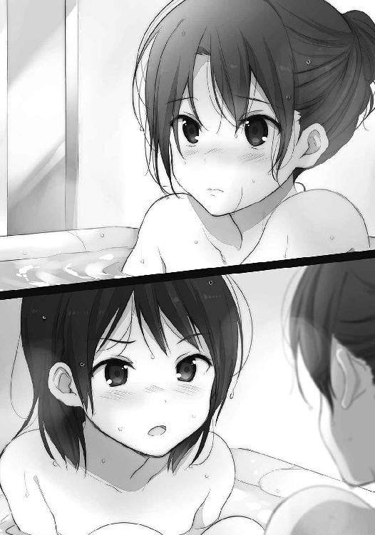
強がっているのが火照った肌の向こうに見て取れる。分かりやすい。
傍から見ていると、私もこんな様子を晒しているのだろうか。
「そう、なんだ。でもしまむらは多分、きみ......あなた、のことが好きだと思う」
喉が締め付けられて、胸が苦しさを訴える。
「しまむらが好きな人は、自分も好きでありたいかなって」
蒸し暑さにほぐされて、舌がよく回る。
本当にそんなことを思っているだろうか。むしろ、逆じゃないだろうか。
しまむらが自分以外の誰かを好きになることを、私は恐れている。嫌っている。
そっちの方がよっぽど正直だ。
だったらなに言ってんだ、私。
私は今、その意に反してここでなにをやっているのか。
目眩を催す。本格的に、くらくらと混濁してきた。
「それ、関係あるんですか？」
「大事なものはみんなで大事にしていく方が、守れそうだから」
心にないものとは一体、どこから生まれてどう吐き出されるのか。
耳から蒸気でも噴き出しそうなくらい、頭の奥が激しく過熱されていた。
その正体は堂々と。堂々と、うそぶく自身への恥じらいかもしれない。
「学校の先生みたいなこと言う、んですね」
私の過剰に磨いた外面を指摘するように、しまむら妹が的確に表現する。
それから、少しの間を置いて。
「わたしみたい」
そう言って、しまむら妹が、ほんの少し笑う。
にっこりではなく、にやりと。
大半は斜に構えたような、歓喜とほど遠い感情から由来されるものだったけど、本当に僅かながら、共感を得られたと実感できるものがあった。少しでも相互理解が進んだなら、なにか意味があったんじゃないかと思う。思いたい。
一度に百歩縮められなくても、一歩ずつ。
それで、
「めでたしですか？」
にょきっと水色が生えてきて飛び退きそうになる。
「ぎゃぎゃ」と、しまむら妹も脇から乱入してきたそれに驚く。
「ヤチー、いつの間に」
「ふふふ、しょーさんもまだまだ知らないことがいっぱいですな」
そういう問題だろうか。戸が開いた様子もないのに、どこから入ったのか。
しかも服を着たままだ。ライオン風のフードがついたパジャマに、頭を嚙まれている。
その女の子が、しまむら妹から私へと向き直る。蔓延した湯気に水色の輝きが合わさり、淡い青緑を背景に滲ませる。吸い込んだら、胸の奥まで爽快に吹き抜けてしまいそうで。
けれどたぐり寄せたそれをいくら取り込んでも、単なる湯気でしかない。
「これで、めでたしですか？」
先程の問いを繰り返す。今度は明確に、私に向けて。
めでたしというほど、なにも終わっていない。それどころか始まってもいないけど。
透き通るように不純物のない瞳は、その瞬間だけ幼さを剝ぎ取ったように奥深さを垣間見せる。底や壁を感じさせない、広く澄んだ目。星を超えて、宇宙を宿すみたいだった。
その目と向かい合い、拠り所を見つけられずさまようような声が漏れた。
「た、多分」
これでいいんじゃないかと思う。
思う。
「ならよいのです」
そう頷く女の子は、それまでの聡明さを溶かしたように無邪気に笑う。
「では失礼しますぞ」
「あ、待ったヤチー。丁度いいからお風呂入りなさい」
「やーですー」
手を前に突き出して、てってこと逃げ去ろうとする。入ってきたときは謎だったけど、帰りは普通にバスルームの出入り口を経由するみたいだ。「待てぃ」と、しまむら妹が湯船から飛び出す。こっちはこっちで、先程までの固さや外面を放り出して年相応の態度を見せる。
「つかまえたー！」
「きょー、なにをしますかしょーさん」
しがみついたしまむら妹と、女の子が甲高い声を反響させてじゃれ合う。日野と永藤の関係を彷彿とさせるような気安さと距離感を眺めて、一つ学ぶ。
仲がいいっていうのは、こういうことなんだ。
......あれ、じゃあ私のここまではまったくの無駄だったのか。不毛だったのか。
そうでもなかった。そう思いたいけど、頭を回そうとして目が回る。
浴槽の端に頭を傾けて、賑やかさを遠くに感じながら天井を見上げる。
ぼーんと、耳と目が曖昧なものに浸される。
「......あー」
つーいー。
のぼせた。
目を瞑っていると扇風機の羽根の回る音が顔を包む。
宛がわれた二階の部屋で床の上に寝転がり、身を休める。
肌が腫れたように熱い。未だ熱は引いていなかった。
しまむら妹は大丈夫だろうか。あの後も水色の女の子とお風呂で遊んでいたけど。
元気だなぁと遠い目で見てしまいそうになる。
大人から見れば私もまだ子供としても、時間は確実に経過している。
思えば遠くに来たものだった。
部屋の扉がノックされる。伸びきっていた足が、期待に固まる。
「入るよ」
その願いに応えるように、来訪したのはしまむらだった。目を開けて、振り向く。
寝間着に着替えたしまむらは、タオルを巻いた枕を抱えていた。
「氷枕持ってきたけど」
「あ、ありがと」
そこでしまむらが悪戯を思いついたように、口もとを緩めながら尋ねてくる。
「氷枕とわたしの膝枕、どっちがいい？」
「ひ、膝枕！」
迷う間もなく食いついていた。こういうのを、ダボハゼって言うんだろうか。
しまむらが勢いと回答そのものに面食らっている。氷枕がたぷたぷと波打つ。
「氷枕の方がよさそうなんだけど」
「う、ううん。もうぜんぜん、平気」
手を横に振って健在を主張する。あ、元気だと膝枕も必要ないってなりそうだ。
「そこそこ辛いけど、そこそこなら、しまむらで」
ここまでこだわっていておかしく思われないだろうか。いや今更すぎるか。
だって私は、しまむらの中で変な子なのだから。
あのおかしな髪の色に負けないぐらい。冷静になるとエライことだ。
口もとを隠すように笑いながら、しまむらが扇風機の前に正座する。そして私の頭を摑んで、引き寄せる。されるがまま、しまむらの太ももの上に頭が収まった。柔らかく、しっとりしている。じくじくと、熱が太い脈を持って頭皮を駆け巡る。
正直、刺激が強くて健康には悪そうだ。目の前がいやにはっきりとしている。
脳に気孔があって、それが一斉に開かれているようだった。
しまむらが、私の頭の上に氷枕を重ねなかったらそのまま熱暴走していたかもしれない。二つの枕に挟まれる形となって、視界が狭まる。なんて贅沢だろう、と足が小刻みに回っていた。
長風呂しただけでこんなことになるのなら、毎日皮がふやけることになりそうだ。
「気持ちいい？」
「う、うふ」
氷枕で頰が潰れているせいか、くぐもった返事になってしまう。
しまむらの太ももに極力近づこうと顔を押しつけているとか、そういうのではない。
結果としてそういう形になっているのも、氷枕が重いせいだった。
「暑さに強くなったんじゃなかったっけ？」
昨日の電話の出任せを、多分意地悪で聞いてきた。ここは......聞こえなかったふりだ。
呻いてそれどころじゃないふりをしていると、しまむらがいきなりわけの分からないことを言う。
「氷の彫像じゃあ、無理があるか」
疑問が溢れすぎて無視できなかった。
「なにそれ」
いきなりなんの話だろう。
「あれ？ 知らないのって、自称はしていないから無理もないよね」
「なんのこと？」
「二年の教室で、どれだった......サンチョかパンチョだったかな。安達と同じ中学校の子に、中学時代の安達は氷の彫像って呼ばれていたと聞いたから」
「......し、」
知らない。中学生のときはほとんど誰とも話していないし......あぁだから知らないしそんな変なあだ名をつけられていたのか。氷？ なんで氷、そんなに冷たかったかな。
「今を見ていると氷っていうか」
言葉を句切り、目を逸らしているのが雰囲気から伝わる。
「......ていうか？」
「いやぁまぁ、うん」
あはは。なにその乾いた笑い。聞きたいような、泣きたいような。
なんだよ氷の彫像って。ちょうはずかしい。
これからずっと弄られそうで、行く末を案じるだけで本当に頭が溶けそうだった。
口を噤みながら悶えていると、ようやく、しまむらが話題を変える。
「ほんとは安達に膝枕してもらう方が楽なんだけどね」
「そりゃあ、そう、だよね」
なにか褒められているのか、求められているのかと文脈を吟味しながらで、肯定がゆっくりとしたものになる。嬉しいなぁとかそういう話じゃなくて、単にしまむらが怠けたいというだけの話だった。最後にしまむらの頭を足に載せたのは、確か冬の頃だったか。
しまむらの寝顔を見下ろしている間の高揚に似た感情の、名前はなんなのだろう。
すごく簡単に見つかりそうで、だけど今もそれを探している。
「妹とお風呂入りたかったの？」
出し抜けに、しまむらがそんなことを聞いてきて目を見開く。
『うんそうなの』と認めたら、なにかしらの方向にあらぬ誤解を招きかねない。
手をばたつかせながら釈明する。
「いやあの、お風呂が大事じゃなくて。仲良く、なりたいと思って」
お風呂が大事なのはしまむらの方で。危うくそこまで口走りそうになった。
「なれた？」
「......多分、少しは」
百万が、百万一になるぐらいは。
物事は積み重ねていくほど、一歩の価値と意味と重さが薄れていく。
おかしなものだった。成果が出るほどに、気づけなくなるなんて。
「ふぅん」
しまむらが氷枕を揺らす。その下にある私の頭も連動して波打つ。
氷の泳ぐ、四角い音が頰の上で躍る。その氷が、私の熱ですぐにでも溶けてしまいそうだ。
「まーでも、安達のこと結構好きなのかも」
ずき、と胸が引き絞られる。喉もぎゅうっと締まって。変な声が出そうになった。
「......！ .........！ .............................................」
私が好きかと言われたかと誤解した。でも考えて、しまむら妹の話だと気づく。
失意とはこのことか、とげっそりしたものを味わう。
「いやそれはない」
「でも、あぁ前も言ったかもしれないけどうちの妹ってすごい人見知りでさ。懐いていない人と一緒にお風呂なんか入らないと思うんだ」
「......それは......」
返事は眠気に遮られたときのように、歯切れの悪いものとなる。
好意とかじゃなくて、もう少し複雑に理由がある。
私の提案に乗ったのは、お姉ちゃんの友達である私がどういう人間か見定めたかったのかもしれない。どんな評価を下されたのだろう。お姉ちゃんにひっつく羽虫ぐらいの扱いだろうか。
ハエのようにウルサイやつ、なんてあんな幼い子に言われたら立ち直れない。
「色々、考えてのことだと思う」
「そう？」と、最初は私の発言に訝しむような反応。でも少し遅れて、「うんそうかも」と、しまむらの納得したような声を聞く。
「わたしに分からなくて、安達にしか見えないものがあるんだろうし」
そういうのはいっぱいある。しまむらの素晴らしさとか、しまむらの優しい顔とか。
多分、本人には感じられないことばかりだ。私が思ったこと、感じたことのほとんどがしまむらと繫がっていない。それが現状で、だけど、違うものを見ている私としまむらがいつか、同じものを見られるようにありたい。
扇風機が、枕の隙間で回っているのが見えた。
「安達も普段はああだけど、大人なところもあるだろうし」
ああという曖昧な表現に濁されている評価も気になるけど、より関心を抱くのは後半。
大人なところ......どこだ？
いっちょうまえに、人のことが気になって仕方なくて悶々とするところだろうか。
「安達はさ、大人になったらどうするとか考える？」
大人繫がりでか、しまむらがそんなことを聞いてくる。
まさか私に知性や哲学に満ちた返答なんて期待していないだろうと、深く考えないで答えた。
「大人になったら......働く？」
我ながら乾いた返答だった。膝枕のせいでそれどころではない面も多々ある故。
「うん、そうなるだろうけど、どう働くとか、どんな大人になるとか......色々ね、色々」
しまむらの言葉が、くるくると舌の上で回る。答えを外に求めず、自問するように。
どんな大人になるか。将来に不安は尽きなくても、具体的に考えることは多くない。私は今のことで手いっぱいだ。今のしまむらとのことでいっぱいいっぱいだ。こうして二つの枕に挟まれているだけで、頭は思った以上に悪くなる。
そんな私が、大人の自分に望むことはごく単純だった。
大人になっても、しまむらと一緒にいたい。
その願いは、子供の心から発しているものに思えてならないけれど。
「そろそろ涼しくなった？」
「......少し」
半分、噓をつく。氷枕を押し当てられた顔は肌が引き締まるほど冷えきっている。
でも膝枕にひっついている頰は熱くて、それをまだ堪能したくて。噓で、引き伸ばそうとした。
「うーん。氷枕もあんまり効果ないのかな」
「え」
しまむらが氷枕を私の顔から離す。それだけに飽き足らず、膝枕していた足を抜いて、立ち上がってしまう。ごて、と床に転がった私は自身の失敗を悟って悔やむばかりだ。
くぁぁ。
言葉にならない後悔を感じ取っている間、しまむらは窓際で外を覗いていた。
「外は......どうかな。部屋より涼しいかな」
出てみる？ としまむらが促す。くぁぁとか継続して言いつつ、顔を上げる。
「外？」
「うん。ベランダとかいう洗濯物の干し場」
のたのたと起き上がり、しまむらの隣から窓を覗く。今まで気づかなかったけれど、二階の窓からベランダに繫がっているみたいだ。本当に小さな空間でしかない。私たちが立つと、すれ違う余裕もなさそうだった。
そこに二人で並ぶ。部屋と明確に切り替わるようなことはなく、空気が重く気怠い。
待っても、熱を拭き取るような風は来ない。
「涼しくないね」
「うん」
「戻る？」
首を振りながら、しまむらの手を取った。奪うように慌てることなく、それなりに穏やかに。だって今、ここには私としまむらしかいないから。胸を高鳴らせ、指先を握る。
少しの間を置いて、しまむらが手を繫ぎ直して、握り返してくれた。
冷えきっていた顔の半分に、編み目を描くように熱が駆け抜ける。
そのまま真っ直ぐ、正面の景色を見つめる。
見えてくるのは、ありふれた住宅街の一部。
闇夜に浮かぶ家屋と赤い鉄塔の灯りを目で追っていくと、宇宙か、深海を覗くようだ。濃度のある闇が町の隙間を埋めている。だけど夜空を緩慢に流れる雲に目をやれば、夜にもまた、私たちの心惹かれるような輝きがあることを知る。
高い建物の灯り、鉄塔の点滅。そして月の光。
自然と私たちの明滅を吸い込んで、夜は淡く映し出されていた。
私はそんな空を飽きることなく受け入れる。
高く積まれるような雲を、美しいと感じる。
しまむらも、また。
少なくとも今、私としまむらは同じものを見ていた。
手を繫いだまま、羽を広げるようにお互いが少し距離を取る。
風のない夜の下で、この繫がりにどんな名前がつくのだろうと、思いを馳せる。
おまけ「永藤家来訪者その２」
改めて見ると、日野の部屋と比べると物置以下だった。部屋の入り口から三歩進めば壁に当たる程度の奥行きに、ベッドと教科書類と服を敷き詰めると、扇風機まで傾く始末となる。
日野はこの部屋のどこを気に入っているのだろう。
「花火が正面から見られるだろ」
開け放した窓の側に座り込んで、日野が私の疑問に応える。
私の部屋は三階にあるので、向かい側の家の屋根も邪魔にならない。家全体が縦に長く、横が狭いので自然とそうなる。
窓の縁に置いた蚊取り線香が静々と煙を上げている。燻製の匂いに少し似ていた。
「夏限定かー」
と言いつつ、日野に乗っかる。のっしり。
「......おい」
日野の低い声が胸の下から聞こえる。
後ろから抱きついたら丁度、日野の頭に胸が載っかる形となってしまった。
「重い？」
「あぁ？ ......どっちかというと、熱い、かな」
「ほぅほぅ。では扇風機くんにがんばってもらおう」
風の強さを中に変える。するとふわぁぁぁだったのが、どぅっががどぅっががになる。
「大丈夫かよその扇風機。うちの親父が腰鳴らすときみたいな音してるぞ」
「ストレッチが足りなかったかな」
替え時を誤った。もう少し弱で動かしてから移行するべきだった。
「エアコンちゃんの風が恋しいのー」
「早く直してもらえよ」
日野の肩と頭が動いて、部屋の右上を見たのが伝わる。天井近くでは、日焼けして黄ばみの混じった白いクーラーが沈黙していた。あれはエアコンじゃなくて、クーラーである。そのくせ、起動させると三十六度（推定）の風を吐き出すというひねくれ者だった。
「あれ、今直すと新品買うより高くつくんだってさ」
「じゃ、新しいの買えよ」
「そんなお金がどこにあるのだ」
それに直したら、日野の家に行く楽しみが一つ減ってしまう。
そんなの勿体ないじゃないか。
花火が上がる。正確には、遠くに起こるその影響で空の色が変わる。
それが私と日野にとっての花火大会だった。
どどーんと爆発する。
「ひゅー、どどんどん。ぱらら、ぱららら。ひゅひゅー」
「うるせぇ」
「.............................................」
ゆらゆら。
「おい左右に動くな。頭の上で乳が転がる」
注文の多い日野である。
「風情ってもののないやつだ」
花火の弾ける音と混じって、聞き取れなかった。
緑色が四方に弾けて、蚊取り線香の匂いが火薬を模する。
......緑かぁ。見ていたら、メロンかキウイを食べたくなった。
「なー、永藤」
「お、次はなんだどんと来い来い」
「お前、この家に不満ある？」
上がり続ける花火と無縁の、暗がりを覗くような声だ。
「そりゃあいっぱいあるとも」
「たとえば？」
「売り物のコロッケを食べると殴られるとか」
「そっかーなるほどもういいや」
妙に早口な日野が話題を流してしまう。もういいなら、別にいいか。うむ。
どどどん、と赤青赤の順番で花火が夜空を彩る。
夜が焼けて、爪痕のようにその火が散っていく。
「なー、永藤」
「ウォウウォウウォウイェイ」
「なんなんだお前」
日野に伝わるものはなかったらしい。無念である。
すっごく今、機嫌いいよって表現したつもりなのに。
「......わたしはな、ここから見る花火が一番綺麗に見えるんだ」
日野が色々と私をなかったことにして、話を続ける。
「なんでか分かるか？」
日野が問う。
ふふふ、そんなの簡単すぎる。
「私のお陰に決まっているじゃないか」
分かりきっていることだった。わははは、となにかしらに勝ち誇る。
日野はしばらく黙っていて、やがて「乳がうるせぇ」とぼやいた後。
「......ほんと、風情のないやつだ」
今度は花火の合間だったからか、日野の悪口が聞こえる。
蚊取り線香に混じる優しい声色は、私の好きな日野だった。
余っていたシールをぺたぺたと貼る。隙間はないので、文字と重なる形となった。
そうしてシールの増えたやりたいこと表を眺めて、しばし余韻に浸る。
家に帰ってきて、まずやることはそれだった。一日で四つも達成してしまった。災い転じて福と為すとはまさに......このことだ？ いや、あれは災いだったのだろうか。
ああした喧嘩のようなものがあってこそ、私は変わることができたのだ。
しまむらだけにこだわらず、視野を広げていこうと意識を改革できた。
できた。
「.............................................」
なんの、問題もなかった。明日は、しまむらの提案でみんなと遊びに行くことになっている。
みんなというのは、永藤や日野のことらしい。
どこに行くかも私が決めていいそうだ。
快く付き合ってくれるらしい。
「......あぁぁぁ」
腫れ物のように扱われている気がして、想像するだけで頭を抱えそうになる。
いや実際、困ったちゃんの扱いであるのは間違いないのだけど。
「......あ、でもそうだ」
腕と身体を伸ばしてやりたいこと表を手に取る。いたたまれないものはあるけどいい機会だから、シールが貼れるような行き先にしよう。こういう自分の意外と図々しいところは、嫌いではない。遠慮していたら手に入らないものがたくさんあると、最近分かってきたからだ。
これまでは欲しいものなんてほとんどなかったから、無関係だったけど。
今は、違う。
どれならいけるかなと指を左右に振る。私の作った表はしまむらとなにかすることしか書いていないので、日野たちも一緒となると選択が絞られる。それに加えて字を詰めて書きすぎて、見直すと本当に読みづらい。それだけ、夏休みに期待していた自分がいたのだと知る。
「.............................................」
こんな夏休みで、満足してくれているだろうか。
......いや、こんなって言い方は酷いな。しまむらが気を遣ってくれたのに。
同級生の女の子に、年下みたいに接してもらって少し情けない。優しさが生温い。暖かいと似て非なる温度のそれに浸っていると、腰回りがざわついてすぐにでも飛び出したくなる。
居心地がいいものでは決してなかった。
とはいえ、意識されたものでも優しさであるのは間違いなく。
案外と周りが優しい。そういうものに戸惑っている自分を感じる。
でもそこで怖がっていないでこちらからもそうした情愛を伝えるのが、正しいのだろう。
課せられたのは、人としての当たり前。隣人愛。
友達と仲良くなる。
親との関係を良好とする。
周りの人を、大事にする。
「そういうこと......」
なのだろうって、膝を抱きながら納得する。
今まで分からず、目も向けてこなかったそれが強い波となって私を翻弄する。
内臓がゆらゆら、海面をさまようように揺れていた。
「.............................................」
唾を二度飲む。液体であるはずのそれさえ滞るほど、渇いていた。
そのまま壁に頭を添えて、目を瞑ると音が聞こえてくる。
明瞭ではない、絡まった糸のようなざわめき。
耳を澄ませば蟬のように外からではなく。自分の内側から聞こえてくるのに、気づく。
『しまむらとすごく盛り上がる』
というのがあった。正確には手を握った上で、みたいな部分もその前にくっついていたけれどそれはもうやったので、半分に割ってシールを貼る。それで、この残り半分。
盛り上がるには、人がたくさんいた方がいい。それが普通なのだろう。
まったくそうは思えない自分を踏みつけて、常識というものを信じてみる。
それを踏まえて出かけるならプールはだめだ。涼みすぎて盛り上がるというより落ち着いてしまうことが分かった。いや私はしまむらの水着姿にふとしたことで衝撃を受けたりなんて忙しかったかもしれないけど、そうではない。そういうことじゃないのだ。
そんな葛藤を経て、選んだ行き先はカラオケだった。前にもこんなことがあった、そんな覚えがある。その記憶に従った。他に行くところが分からず、前と同じ場所という安定を選んでしまう。年配の人が、同じ車に買い換えるようなものだ。冒険できない。どこにも飛び立てない。
駅前に集合となっていて、いつも時間より早く着いてしまうのは性分だろうか。他のみんなはまだ来ていない。私が一番、暇なのか。一応バイトには出かけているけど、それ以外の時間。他人との協調に割く時間がないから、総合するとやっぱり私が一番、なにもないのかもしれない。
そのなにもないを埋めていくのが、しまむらの示した道で。
「.............................................」
埋めて、窒息してしまわないだろうか。
「あ」
タクシー乗り場の近くにある日陰に佇みながら待っていると、そんな声が聞こえる。私に届いた気がして振り向くと、知らない女子と目が合った。眼鏡をかけた足の長い、多分女子高生。見るからに面識なさそうだけど私のことを見つめているので、どこかで会ったのかもしれない。
その女子は少し立ち止まってから、すぐに早歩きで駅の中に消えていく。
前に向き直り、首を傾げる。
誰だったかな、今の。知り合いなんて本当に少ないはずなのに、候補も出てこない。
思い出そうとしている間にしまむらがやってくる。今日は家から距離があるからか、自転車に乗ってきていた。白い婦人用の帽子をかぶっている。
しまむらの持ち物にしては地味というか年齢にそぐわないので、しまむら母の帽子だと思う。
「おはよ、って時間じゃないかもう。こんにちはー」
私の近くで自転車を止めて、しまむらが小さく手を上げる。柔らかい声、柔和な表情が、ツバに細いリボンを巻いた帽子とよく似合っている。いつもと雰囲気が異なって見えた。
「こんにち、は」
ひょうきんか、軽快に挨拶しようと思ったけど失敗して中途半端になる。
なにか行おうとして、満足のいく成果を得たのは一体、どれくらいあるのか。
「日野たちはまだ来てないか」
「うん」
「あいつら大抵遅刻するよね。日野が悪いのか、永藤のせいなのか」
さぁ、と小声で反応しながらどうしよう、なにしようと考えを巡らせる。
しまむらを前にするといつもこうだ。最適な自分であろうとして、考えすぎて。
深みにはまったあげく、変な行動に出てしまう。
そこまで分かっているなら冷静になればいいのに、そうもさせてくれない。
完全に、しまむらにしてやられていた。今だってそうだ。
すごく盛り上がろうにも、どう声をかければいいのか摑めない。
疑問はいっぱいあるのに。
私が近くにいるのは迷惑だろうか。一対一だと、面倒な相手なんだろうか。
聞いてみたいと思いつつも踏み込めない。そうだよと言われたら、どうすればいいのか。
いや一度言われて、だから、変わっていかないといけないと思って。
今、ここでしまむら以外を待っていた。
日野と永藤の乗る自転車もやってくる。永藤は変わらず、自転車に乗れないみたいだ。
私もそういう弱みを見せたら、しまむらが世話を焼いてくれるだろうか。
......難しいかも、と横顔を覗く。ある程度はしてくれるかもしれなくて、けれど、日野と永藤の関係まで行くことはできないだろう。そのためには、私たちの間にまだ足りないものがあった。それは情愛というか、パッションのようなものが欠けているように感じる。
もっと具体的に言い表すことはできない。海の底に沈んだものを覗くように、不確かで。
「待たせたな、主に永藤のせいで」
「え、そうなの？」
そうだよ、と日野が振り向いて念を押すと「うむそうかも」と永藤が納得する。
なんというか、味のあるやり取りに思えた。永藤が日野を全面的に信用しているのが窺える。
「ところで、今日は私服ダネ」
それから、日野が挨拶代わりにそんなことを言う。今日はって、休みだから当たり前の話だ。
「前も私服だったけど」
「そうか？ なーんか制服着ていた覚えがあるが......ま、深く言及するのはやめとくか」
よくないね、と日野が一人首を振る。便乗するように永藤も頭を縦に振っていた。
多分、永藤の方はよく分かっていない。
「じゃあ行こうぜ」
遅れてきた日野に先導されて、カラオケ屋に向かう。提案しておいてなんだけど、向かう店は日野に決めてもらっていた。日野は町の地理に詳しい。それに連れられる私は、同じくこの町の生まれでありながらもよそ者として案内されるかのような心細さだった。
日野、永藤の自転車が先行してその後ろにしまむら、最後に私が続く。
意識せずとも私は、グループの端っこに行き着くのが常だった。
人間関係がパズルであるなら、私はどこにもはまらない形をしているのだろう。そうして隅に追いやられたピースが最後にどういう扱いとなるのかは、深く考えるまでもない。
私は、誰と組み合わさることができるのか。
移動中、斜め後ろから、「しまむら」とその背中を呼ぶ。
振り向いたしまむらが、なにと目で尋ねてきたので早口で提案する。
「よかったら、また、一緒に歌わないかなって」
今回は急だったこともあるし、歌詞を暗記してくるような時間もなかった。でも一つぐらいは共通して覚えている歌があるはずだ。しまむらがすぐに頷く。
「いいよー」
返事をしてから前を向き、前方確認した後にまた振り向く。
「でも安達と一緒に歌えるの、なにかあるかな」
「着いたら、探そう」
探すという表現は適切なのだろうか。どこを探すとそんなものが見つかるのか。
カラオケの案内に共通ですよなんて表示されるわけでもないのに。
そんな私のおかしな発言にも、しまむらが笑顔を返事として、前を向く。
見ていて、ホッとする。
二人だけで話すことに、安らぎを覚えていた。
そして同時に不安も抱く。
しまむらはちゃんと、私の話を聞いた上で笑ってくれているのだろうかと。
駅の裏にあるカラオケボックスに着いて用意された部屋に入る。前に利用した場所と似たような部屋の構成で、光源が強い。ずっといると目が疲れそうだった。
今回は首尾良く、しまむらの隣に座ることができた。それもしまむらがソファの端に座ったから、隣は私だけだ。鞄を置きながら、その事実を小さく喜ぶ。
見ていると、私たちが座ってから日野たちが席を取っているので、もしかすると気を遣ってもらったのかもしれない。......二人とも、いわゆる『いいやつ』であるのは間違いない。それは認めているし、ありがたくもあった。
マイクを摑んだ日野がなにも操作していないまま歌い出す。
「はいでは早速わたしから。にねんせ～」
「それもおやめなさい」
永藤が即、駄目出しする。「うむ」と日野があっさり引っ込む。
「既視感ありますな」
しまむらのぼやきに同意する。
「じゃあなに歌うかな。持ちネタがそんなにないんだよな」
ネタ？
「それならば私が先陣を切ろうではないか」
永藤が立って日野からマイクを取る。「あ、こら」と日野が取り返そうと背伸びしている間に、永藤が操作して歌い始める。永藤が入力したのは、コロッケを作る歌だった。
永藤が動き回りながら熱唱する。途中から、日野も一緒に歌い出す。
しまむらと私は、無言でその姿を目で追うばかりだった。
歌い終えてから、そのままマイクを握って挨拶する。
「えー今のが『おにくのながふじ』のテーマソングです」
「噓つけ、お前んとこの夕飯はむしろキャベツだらけだったぞ」
「味噌キャベツ美味しいじゃん」
返せ、と日野が永藤からマイクを受け取る。それから、私たちを交互に見た。
「じゃ、次はどっちが歌う？」
「え、順番決まってるの？」
「それが自然の流れってやつだ」
言われて、しまむらと顔を見合わせる。お互いにまだなにも決めていない。しまむらは広げていたメニュー表を一旦置いて、日野の差し出していたマイクを手に取る。
「そうだね、なににしようかな」
マイクに向けてなぜか言う。私が聞かれているのか、それとも自問自答なのか。
しまむらがそうしている間、私はまったく別のことを考えていた。
日野と永藤はいつも二人一緒にいて、それでいて周りとも上手くいっている。
今こうして、私みたいなのと一緒にいるのがいい証拠だ。
私となにが違うのだろう。そして二人は、それを分かっているのだろうか。
「仲良くなるって、どういうことかな」
私にはそれが分からない。いくら考えても分からないのだから、聞くしかなかった。
しまむらたちが顔を見合わせる。前置きがなく、唐突な質問だっただろうか。
気まずさを感じているといきなり、永藤が動く。
「しまむらっちー」
両手を広げた永藤がしまむらに向けて走り出す。いきなりのことでしまむらがギョッとしている間に、永藤がどかっと体当たりする。しまむらは仰け反り、永藤も「どーん」とよろめく。
間に座る私の前でよたよたと安定しない永藤が、そのままピースする。
「こうさ！」
「そ、そうなの」
間違いなし、と永藤が堂々と頷く。日野の呆れ顔が目の端に見えた。
「でもしまっちーの方がよかったかな」
永藤が独り首を傾げる。その様子としまむらを見比べてから、うん、と目を逸らす。
さすがの私でも、これはなにか違うと分かる。
「いっそ、まっちーでいいか」
あ、でもしまむらをそんな独自のあだ名で呼ぼうとするなんて、とそこは引っかかる。それと、まっちーはないよなと思う。全然しまむらじゃない。明瞭とした根拠があるわけではないけれど、しまむらのあだ名には『しま』の部分は欠かせないように感じる。
そこを省いたら、骨子を疎かにするように思えてならない。
そんなこだわりが私の中にあった。
「あー、つまり永藤の言いたいことは......さっぱり分からんな。なに言いたいの？」
翻訳を投げた日野が直接聞く。永藤は頰に指を添えて小首を傾げる。
「お分かりにならない？」
「なったら怖いわ」
日野が苦笑する。しまむらも合わせるように笑顔を見せて、私は最後に肩を揺する。
勢いのない笑い声が、顎に引っかかっていた。
「ま、分からんのはいつものことだ。それより決まってないならわたしが歌うか」
マイクを取った日野がまた、永藤と一緒に歌い始める。
部屋の中でその一角だけが盛り上がり、私は。
すってんころりんと、足を取られて転げ落ちていくようだった。
「.............................................」
背中がむず痒い。
膝に手を置きながら自然、背筋が曲がる。
この部屋の空気を吸う度、自分が澱んでいくのを感じる。内側が乾いていく。
脳が隙間を塞がれて、機能を失っていくかのようだった。
頭の奥にまで響く声とは別枠で、耳に寄せては引くざわめきを感じ取る。肌をそばだてるそれは誰の声なのか。聞き取るために神経を束ねようとすると、それだけで気が触れそうだった。
去年と比べてもむしろ、悪化しているような。
ダメになっているような。
私はなんのために、ここにいるんだ。
葛藤が顔にでも滲んでいたのか、しまむらが私の頭を抱き寄せるようにして撫でる。
歌声の中、いきなりだったけど衝撃は薄い。
そんな私の反応自体が、どこか他人事に思えた。
しまむらの手があやすように髪を梳く。
まるで『がんばっているね』と、褒めているようだった。
誤解を恐れず言えば、窮屈な五時間だった。
肩は凝る、鼻は乾く、背中は熱い。
いつか慣れたら、開放的なものを味わえるのだろうか。
「晩ご飯はどうする？ どっかで食べていくか？」
カラオケボックスの外に出てから、日野がそんなことを言う。
時間の大半を日野と永藤が歌っていたから、その声に疲労が混じっていた。
駅から流れてきた集団が花でも掲げるように談笑しながら、横を通りすぎていく。その中の一人はお腹を抱えるぐらい笑って、盛り上がっている。人は人の中で笑うものなのだ。
そういうのを、見せつけてくるかのようだった。
「あれ、うちで晩ご飯食べないの？ 頼んできちゃったけど」
早くも自転車の荷台にまたがった永藤が、日野に言う。
「おぅそうか。じゃあ今日はここでお開きにしよう」
日野が提案を引っ込める。意図してはいないだろうけど、永藤に助けられる形となった。
「じゃあまたなー。次は学校かな、いやその前に一回ぐらいは会うかな？」
「明日も会うけど」
「そりゃあお前とわたしだけの話だ」
日野たちが離れていくのを無言で見届ける。
見送る私はまるでノルマか、夏休みの宿題でも片づけたような心境だった。
そんな自分を顧みて、そう、だから、つまりともどかしさに苦しむ。
「楽しくなかったでしょ？」
正面に顔を上げる。残っていたしまむらが、微苦笑しながら私を見つめていた。
いきなり図星を言い当てられて、返事が継げない。以前は、まぁまぁとかそれぐらいの答えは返せていたはずなのに取り繕うための言葉さえ遠かった。
やっぱり、自分の中で確実に変化が起きていた。
それは悪化なのか、それとも。
「安達がそういう性格っていうのは知っているんだけどね」
しまむらのそれは安っぽい理解ではなく、事実だろう。
自分がどれだけ、独りに向いているのか。
しまむらも、そして私自身も分かっていた。
「ただ、わたしは」
その言葉の続きを遮るように電話が鳴る。当たり前だけど私のではなく、しまむらの電話だ。
その音に合わせて、私の中指が刺激を受けたように跳ねる。
しまむらは鞄から電話を出した後、液晶を眺めて目を細めた。
曇る。
胸が曇り、息が詰まる。
その電話を横から掠め取って、相手を確かめたい。
衝動は、生存本能より力強く胸に鼓動を与える。
そうした私の態度が関係したのか否か。しまむらは電話をしまって、出なかった。
「後でかけ直せばいいや」
それが私に気を遣ったのか、単に後回しにしたのかは分からない。
「どこまで話したかな。えっと、そうだ。わたしは安達に」
「大丈夫」
その続きを聞くことを怯えるように、心にもない強がりが口をついて出た。
しまむらの固まっている目と口が動き出すより早く、言葉を重ねる。
「大丈夫。大丈夫、だから」
だから自分を見限らないでほしいと、縋るような思いだった。
子供の泣き言めいた言い分に、しまむらの困惑が透けて見える。
だけどしまむらはそれ以上、踏み込んでこない。そういう性格なのだ。
「なら、いいんだけど」
「......ん」
小刻みに頭を振る。何度、がら空きの大丈夫を唾で流し込んだことだろう。
声をかけようとしたのか口を開いていたしまむらが、諦めたように手を上げる。
ゆるゆると、振ってきた。
「じゃあね」
「......うん」
遅れて、手を振り返す。これでいいのだ、と納得が残像のようにぶれてはかき消える。
いつもの私ならしまむらの家までその隣にくっついていくだろうけど、そういう偏りを修正していこうというのが眼目で、だから、どれだけ嚙み合っていないとしても私はそれを守っていかないといけなかった。そういう強迫観念みたいなものもあって、ただ別れる。
離れていくしまむらが途中、一度振り向いた。しまむらもまた、私になにかしらの違和感を覚えたのかもしれない。目が合って、また手を振ってくる。私も小さく振り返す。
そうして前を向いたしまむらと自転車は、もう振り向くことはなかった。
信号と歩道を越えて、帰路に就く。しまむらの背中が小さいものになる。
待ってとも思えず。追いかけようとも、意思が湧いてこなかった。
苦しい。目の奥に大きな疲労を抱えながら、重苦しく息を吐く。
一人になって、しばらく、立ち尽くす。
自転車のハンドルに手を置いたまま、雑踏の背景となる。笑い声も、強い足音も無縁に、独り。ここに自分のいる理由を探す。納得できるものを見つけようと首を伸ばす。
自分が正しい時間を過ごしたのだと思うために。
駅側からの電車の音に混じって、蟬の鳴き声が宙を漂う。
人とビルしかないこの通りのどこに、蟬は潜んでいるのだろう。
長々と、時間が経って。
なんの収穫もないまま、家に帰ろうと、自転車を押した。そのままいっしょによろめいて転倒しそうになりながら、ペダルに足をかける。回り始めた車輪に直接飛び乗るような錯覚と共に走り出す。
きぃこ、きぃこと金属の軋む音がする。自転車の車輪のどこかが引っかかっていた。
直しようがないのでそのまま進む。伸ばしていた背中が、段々と前へ屈んでいく。
遠くで、花火の弾けるような音がした。まだ明るいので光を見つけることはできないけれど、今夜もまたどこかで祭りが開かれるのだろう。夏休みの最中はなんだかんだと、一週間に一度は花火の音が夜を震わせる。うちの都市の観光シーズンということもあって、盛んだった。
花火の音が、忌まわしいものを呼び起こす。
私じゃない誰かと一緒に歩いて、離れていくしまむら。
未だに名前も知らない女の子と一緒に、夏祭りを巡る。
私がこうして一人で帰っているとき、さっきの電話の相手にかけ直しているのだろうか。
ハンドルを握る手が強まる。親指と人差し指の間が張り詰めるように痛み、自制を促すように長々と持続する。それじゃいけない、そうじゃないよと私を矯正しようと働きかけてきた。
傾いていく太陽のもたらす、水平な夕焼けが雲を引き連れて流れていく。
前方不注意もいいところに見上げていると、不覚にも涙が滲みそうになった。
みんなと仲良くなろうとした自分はどうして今、一人なんだろう。
気づけば、自転車をこぐ足が止まる。地面に足を下ろして、噴き上がる熱に背中を濡らす。
脳が開いていくのを感じる。
首の後ろあたりが特に、湯気にでも包まれるような独特の熱さに包まれる。
冬の日、厚着した奥で肌がちりちりとする感覚に似て、焦りを与えてくる。
目がぐるぐると回った。
気持ち悪いほど町が揺らぐ。
いても立っても、いられなくなる。
「違う」
地面を蹴る。回る車輪に応じるように、脳が回転を果たした。
際限ないように加速していくそれがすぐに焼け付き、焦げた臭いを発する。
それが頭の中を巡って満杯になったところで、叫ぶ。
「やっぱり、全然、関係ない！」
私と無縁のものばかりだった。
独りに固執するのを改めてみんなと仲良く万事仲良く生きていければいい。
悪くはないかなとも思った。
でも、なにかが違う。違うって言っている。
この頃聞こえていたざわめきを、遂に聞き取る。
そうじゃないと、全身を構成するすべてが悲鳴を上げていた。
指先から頭のてっぺんまで死滅していくような変化を恐れて、叫んでいた。
「そうじゃない！ そうじゃ、なぁぁあああい！」
人前だとか町中だとか、そういう制限では止まらなかった。
溜め込んでいたものが、弾け飛ぶ。人間花火であった。
まったく大丈夫ではない。
「今日だって！」
今日だって、本当はしまむらと二人で出かけたかった。
そっちの方が絶対に幸せになれるのが、分かりきっていた。だから私が本当にやるべきだったことはそれを実現する方向に無様だろうとあがくことで、集団の中に埋没するべく穴を掘ることでは断じてない。蟬だって地面を掘って出てくるのになんで埋まっているんだ私は。
土を掘り返すなんて、死ぬときだけで十分だ。
他人が百人いたってしまむらの代わりにはならない。積み重なったって、この高さには届かない。海苔じゃないんだぞ無理言うな。やっと分かった、自分にしまむらの正しさは必要ない。
しまむらと私は違う生き物なのだ。
だからいい。だから心惹かれる。
骨が浮き上がりそうなほど、ペダルをこぐ足に力が宿る。舗装された地面を跳ねるように加速した車輪が滑走する。いつの間にかサドルから身体が浮いて、近年記憶にないほどに全力で町を走り抜けていた。この道の先にいるはずもない、その姿を追い求めて。
私だけを見て。
私はしまむらだけを見ているから。
だって。
だってだってだって。
「大好きだから！ しまむらが、大好きだからぁぁぁぁああああああああ！」
口に出したのは初めてかもしれなかった。
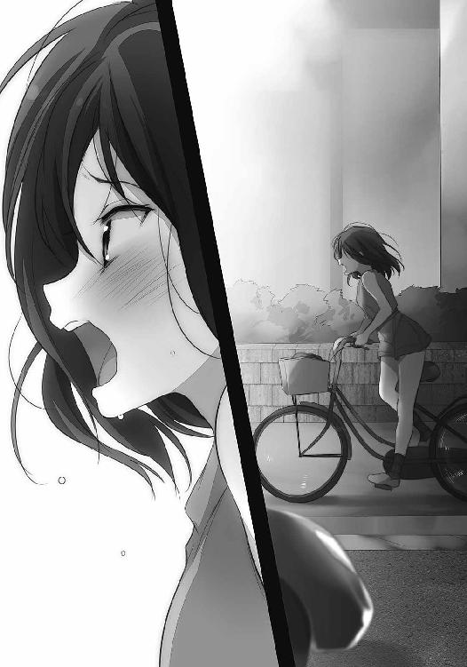
情念は一度外へと放たれれば後は、清新な気となって頰を撫でる。
歓喜と焦燥の入り乱れた意識は、混濁しながらも希薄だった私を満たす。
夕日に滲んでいた涙が溢れ出して、涼やかに頰を濡らした。顔も頭の中もめちゃくちゃになっているのに、実感というものが次々に流れ込んで輪郭を太く仕上げていた。
加速した時間では、周りやすれ違う人の目も気にかけている暇がない。
自分だけの世界を走ることができた。
そこには、普段とまったく異なる景色がある。
来るときに見えていなかったものが、開かれた視界には悠々と映る。
黄昏の町、鳴り響くは遠くの花火と蟬の音。
その喧噪を横目に駆け抜ける様は、さながら周回遅れ。
必死になる。必死に、夏の流れに追いついてみせると。
光と蟬を越えて、走り続ける。
夏休み、私の本当にやりたいことが見つかる。
やりたいこと表を無数に埋める字から、その答えが浮き上がるようだった。
夏休み後半へ続く。
おまけ「ヤシロ来訪者その９」
「まてーぃ」
「きょー」
猫みたいに廊下を逃げ惑うヤチーに、背中から飛びついて捕まえる。
もっとも逃げているのは猫どころかライオンだけど。......この格好、気に入ったのかな？
「ヤチー、観念せー」
「甘いですなしょーさん」
しゅぽん、とヤチーがライオンの口から飛び出る。え、どうやって？
にゅるんと全身が当たり前のように出てきて、腕の中に残るのはライオンの皮だけ。
「ひぇぇ」
肩とかどうなってんのヤチー。
しかも、飛び出たヤチーは裸だった。
「ヤチー、下になんにも着てないじゃん！」
「暑いのにいっぱい着てどうするのですか？」
ヤチーが不思議そうに小首を傾げる。全然、恥ずかしがる様子もない。
「ということでさらばです」
裸のまま逃げ出そうとするヤチーを、「こらこらこらー」とまた捕まえる。
今度は首根っこを摘んで、ほんとに猫みたいだ。
「しからば今度はこの皮をにゅるんと」
「ぎゃー」
それは本当にまずい。
ただお風呂に入れようとしただけなのに、そんなに嫌いなのかな。
「ヤチーは熱いの嫌い？」
「いえ嫌いとかではなく溶けそうなので」
でろーん、とヤチーが自分のほっぺを摘む。ふにふにしていて柔らかそう。柔らかい。
「大げさだなー」
「なにしてんのあんたたち」
ねーちゃんが台所の方から出てくる。裸のヤチーを一瞥して、顔をしかめる。
「ヤチーが飛び出た！」
残ったライオンの皮を掲げる。ぺなんぺなんだ。
「しまむらさんもあつそーですね」
「そりゃあ暑いよ」
「脱ぎますか？」
「脱ぎません。服着るかお風呂入るか早くしてね」
そもそもなんでうちの風呂に入るんだ？ と独り首を傾げながらねーちゃんが去って行った。
「ということでお風呂ね、ほら」
ヤチーの手を引っ張る。「仕方ありませんな」とヤチーも諦めて、てこてこついてきた。
「ヤチー、座りなさい。頭洗ったげる」
お風呂に入ってから、ねーちゃん気分で手招きする。ヤチーは「洗わなくてもよいのですが」と言いながら、指示した場所に座った。その後ろに屈んで、ヤチーの髪にシャワーをかける。
いつもチョウチョ結びしている髪をほどくと、腰よりも長い。
「あぶぶぶ」
「うわぁ......」
何度見ても驚く。ヤチーの髪を通過するお湯が、水色に染まっていた。
そうして髪を指で梳く度に、水色の粒々が宙にも浮かぶ。湯気と重なったそれの影響で、お風呂場全体が水色に染まっていく。シャワーノズルを握ったまま、しばらく見とれる。
「すごーい......」
「あぶぶぶぶ」
「なんで口閉じないの？」
濡らした髪にシャンプーを垂らして、わしゃわしゃする。確かにヤチーの言うとおり、髪は光り輝いて汚れなんてものは一つも見当たらない。肩や首も日焼けが一切なくて、お風呂場のタイルよりも真っ白。でも洗う。
退屈なのか、すぐにヤチーの頭がゆらゆらし出す。いつものことだ。
「こら、頭動かさないの」
押さえるように左右から手を添える。
「しょーさんはわがままですねー」
「なにをー」
わしわし、と勢いよく手を動かして泡立てる。その泡もまた、髪と同じ色に色めく。
触れているわたしの手も色が変わっていないかと確かめたら、ふつー、そのままだった。
「ヤチーの髪ってほんとふしぎだね」
そして、他で見ることができないほど綺麗だった。
「これは元になったチキュージンの髪をそのまま再現しただけですよ」
「う、うん？」
「変なチキュージンもいたものです」
「ヤチーには負けると思うよ」
少なくともわたしは、ヤチーより変な子とは会ったことないし、これからも会わないんだろうなぁという予感があった。会えないだろうなぁ、と思った。
身体を洗ってから、一緒に湯船に浸かる。浴槽が狭いからねーちゃんとかその友達っていう人と入ったときは少し窮屈だけど、ヤチーとだと向き合って入っても足に余裕があった。
ぽちゃん、ぽちゃんと。髪から垂れた滴が、水面に跳ねて音を立てる。
ヤチーを見る。ヤチーは長髪もそのままに、眩い。
灯りと重なって、そのまま光の中に消えてしまいそうなくらい。
「ヤチーってさ、なんだっけ、どーほー、を探しに来たんだよね？」
「そーですよ」
「見つけたら、どっか行っちゃうの？」
明日にでも目の前からいなくなってしまいそうな、そんな儚さ。
どれだけ仲良くなって、側にいても、その透明感が周りと馴染まない。
浮いて、ふわふわと。今にも、散っていきそうで。
「見つけ次第、宇宙に帰らねばいけませんね」
ヤチーは穏やかながらも、確かにそれを肯定する。
「......そっか」
宇宙というのが本物か分からない。だけど一度離れてしまえば、もう、会えない気がした。
「それも三千年ぐらいの間の話となるでしょう」
「......え」
ヤチーがうんうん、と重々しく頷く。
さんぜんねん？ 三千年。えぇと、わたしのお祖母ちゃんは今、七十歳ぐらい。
.............................................うん。
「そ、そっかー。なら、いいや」
ヤチーの話すことが全部正しいとは思っていない。
でも安心できる数字を聞いて、少しホッとする。
ヤチーがじっとわたしを見つめる。「なに？」と尋ねると。
「ちうー」
ヤチーが、鼻のてっぺんに吸いついてきた。
目の前がヤチーの色に染まる。
湯船の底についていた手が固まって、指がわななく。
れろん、と鼻を舐められたところで様々なものが動き出した。
「な、な、なにさー！」
ばしゃばしゃ、わたしの気持ちを表すようにお湯が飛ぶ。
顔を離したヤチーが、にこやかに言う。
「仲良しの証と聞きました」
「ぇぇえ、そ、そーなの？」
聞いたことない。都会だとそうなのかな、都会関係ある？ なさそう。
目がぐるぐるする。お湯の中で、また別の熱いものに浸っているようだった。
「しょーさんとわたしは仲良しではないのですか？」
わたしの動揺をそんな風に受け取って、ヤチーが頭を傾げる。
傾く目の輝きが移ろう様は、地球儀が回るようだった。
ヤチーの瞳には、星がある。
「な、仲良しだよ」
学校の友達ともまた違うなにか。
言葉で説明できなくて形も曖昧だけど、わたしを引っ張って離さないものがある。
ヤチーとの間に、お互いに裸になってもそれが確かにあった。
「でも、なんで鼻......？」
「おや、違うのですか？」
「普通は鼻じゃなくて......ほ、ほっぺにする、んだよ」
「そうでしたか。ではもう一度、ちうー」
「ち、ちぅ......」
ヤチーの唇がほっぺに吸いつくのを、立てた膝を抱くようにしながら受け止める。
濡れて艶を持つ水色が、わたしの目の前を独占する。
あとがき
編集者が決めたタイトル
噓つきみーくんと壊れたまーちゃん
電波女と青春男
安達としまむら
多摩湖さんと黄鶏くん
探偵・花咲太郎は閃かない
六百六十円の事情
たったひとつの、ねがい
強くないままニューゲーム
砂漠のボーイズライフ
美少女は斬ることと見つけたり
サムライ・デッドエンド
私が考えたタイトル
僕の小規模な奇跡
バカが全裸でやってくる
ぼっちーズ
トカゲの王
昨日は彼女も恋してた
明日も彼女は恋をする
時間のおとしもの
瞳のさがしもの
虹色エイリアン
ふわふわさんがふる
おともだちロボチョコ
エウロパの底から
神のゴミ箱
クロクロクロック
こうして振り返ってみると半々くらいでしょうか。
この中に一つでも気に入ったタイトルがありましたら幸いです。
入間人間
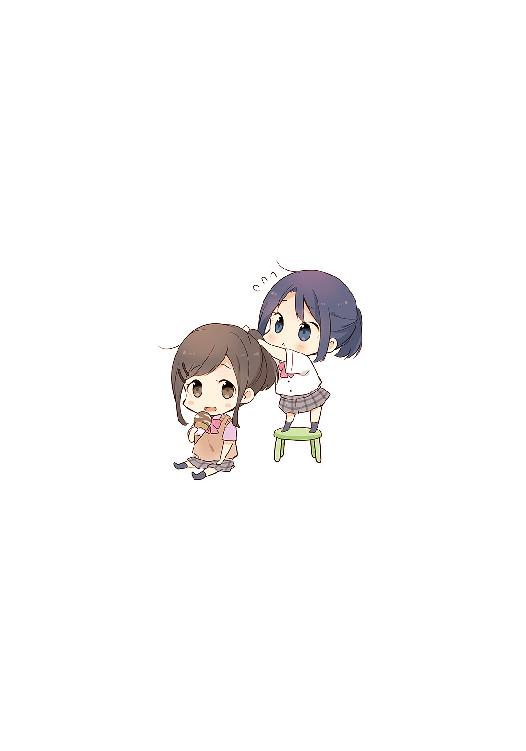
入間人間
いるクまは、たこ焼き、焼きそば、お好み焼き、天むす、穴子寿司、焼肉、みそかつ、ギョーザ、チャーハン、エビマヨ、ビーフカツ、エビフライ、コロッケ、ハンバーグ、ハヤシライス、カレーライスが大好物です。
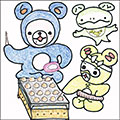
イラスト／のん
まさかこの二人の幼女姿が描けるとは思いませんでした...
ありがとうありがとう...
本書に対するご意見、ご感想をお寄せください。
電撃文庫公式ホームページ 読者アンケートフォーム
http://dengekibunko.jp/
※メニューの「読者アンケート」よりお進みください。
ファンレターあて先
〒102-8584 東京都千代田区富士見1-8-19
アスキー・メディアワークス電撃文庫編集部
「入間人間先生」係
「のん先生」係
本書は書き下ろしです。
この物語はフィクションです。実在の人物・団体等とは一切関係ありません。

 電撃文庫
電撃文庫
安達としまむら5
入間人間
発 行 2015年12月10日
発行者 塚田正晃
発行所 株式会社KADOKAWA
〒102-8177 東京都千代田区富士見2-13-3
03-3238-8745（営業）
http://www.kadokawa.co.jp/
プロデュース アスキー・メディアワークス
〒102-8584 東京都千代田区富士見1-8-19
03-5216-8399（編集）
http://dengekibunko.jp/
本書（電子版）に掲載されているコンテンツ（ソフトウェア／プログラム／データ／情報を含む）の著作権およびその他の権利は、すべて株式会社KADOKAWAおよび正当な権利を有する第三者に帰属しています。
法律の定めがある場合または権利者の明示的な承諾がある場合を除き、これらのコンテンツを複製・転載、改変・編集、翻案・翻訳、放送・出版、公衆送信（送信可能化を含む）・再配信、販売・頒布、貸与等に使用することはできません。
(C)2015 HITOMA IRUMA
※2016年6月20日発行の電撃文庫『安達としまむら5』2版に基づき制作